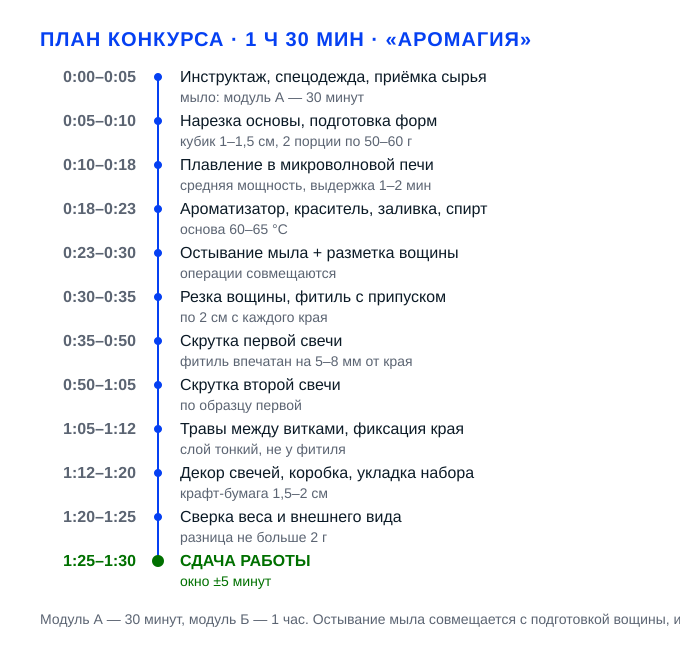
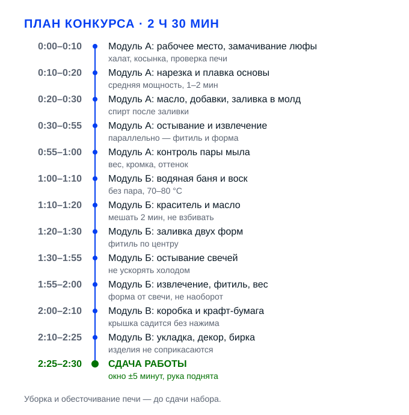
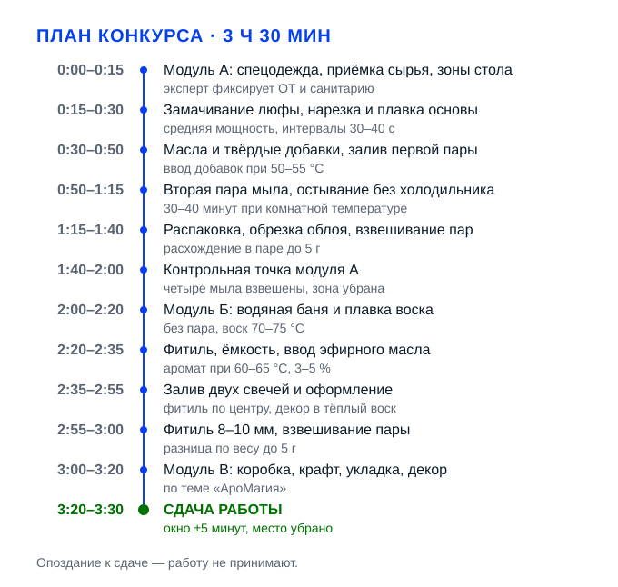

Изготовление изделий для СПА процедур (Р)
Задания ниже — официальные файлы «Абилимпикс» (источник: abilympics-russia.ru), разложенные по категориям. Решения написаны по тексту задания, регламенту и критериям оценки; в них указано, что именно проверяет эксперт.
Школьник
14–16 лет, базовый уровень заданияВыдержка из официального конкурсного задания: страницы, относящиеся к категории «Школьник» (стр. 3–6 источника).
Пошаговое решение
Одна тема, два изделия и полтора часа на всё: сувенирное мыло в модуле А (30 минут, 40 баллов) и свеча из вощины с травами в модуле Б (1 час, 60 баллов). Оба изделия нужно сделать по два экземпляра, и куски должны быть идентичны по весу и внешнему виду — это записано в результате модуля, а не подразумевается. Тема «АроМагия» задаёт аромат, цвет и оформление, поэтому добавки подбираются один раз и повторяются во втором экземпляре без импровизации. Решение идёт в порядке технологической карты КЗ: организация места, приёмка сырья, плавление основы с выдержкой 1–2 минуты, ввод ароматизатора и красителя, заливка со сбрызгиванием спиртом, остывание, затем разметка и резка вощины, фитиль с припуском по 2 см, плотная скрутка и упаковка набора. Главный риск не в сложности операций, а в разнице между первым и вторым экземпляром: именно на ней снимаются баллы за последовательность и планирование.

Задача 1. Войти в бокс, пройти инструктаж и разложить рабочее местоМодули А и Б · организация, ОТ и ТБ — 10 баллов
Организация рабочего процесса, охрана труда и техника безопасности стоят в критериях обоих модулей по 5 баллов, то есть десять из ста, и набираются они в первые десять минут — или не набираются вовсе. Здесь мы надеваем санитарную одежду, убираем волосы и украшения, разводим рабочую поверхность на зоны и проверяем электроприборы до первого включения. Отдельно принимаем сырьё по перечню и взвешиваем его, потому что идентичность двух экземпляров по весу закладывается именно на этом шаге, а не в конце, когда изделия уже застыли.
Действие 1.1. Пройти инструктаж и надеть санитарную одежду
Шаг 1.1.1
Приходим на площадку заранее, находим своё место по номеру и слушаем вводный инструктаж по охране труда от начала до конца, ничего не раскладывая на столе. Слушать нужно именно сейчас: в разделе 6 конкурсного задания перечислены опасные факторы этой компетенции — подвижные части электрооборудования, повышенная температура рабочей зоны, острые кромки форм, напряжение в цепи и вредные вещества в воздухе. После инструктажа ставим подпись в журнале и уточняем у технического эксперта три адреса: где аптечка, где огнетушитель и где кнопка аварийного отключения розеток.
Без подписи в журнале инструктажа участника к старту не допускают, и полтора часа задания пройдут без вас — это не штрафной балл, а потеря всей работы. Дальше идёт прямой критерий «Организация рабочего процесса, охрана труда и техника безопасности»: по 5 баллов в модуле А и в модуле Б, суммарно 10 из 100. Эксперт выставляет их не за красивое место, а за конкретные вещи, и знание аварийных адресов входит в этот же пункт.
В журнале стоит ваша подпись, а в голове держатся три адреса и порядок действий при поломке прибора: прекратить работу, обесточить, доложить техническому эксперту. Проверьте ещё одно: вы понимаете, какой рукой будете брать горячую ёмкость и куда её ставите, чтобы не искать место в момент, когда основа уже плавится.
Кивнуть и не слушать — самая дорогая экономия десяти минут. Потом выясняется, что участник не знает, где аптечка, хватает горячую ёмкость голой рукой, ставит её на край стола и заливает основу мимо формы. Переделка займёт больше времени, чем весь инструктаж, а в модуле А у вас всего тридцать минут.
Эксперт проверяет журнал до старта и смотрит на первые минуты работы: поднимает ли участник руку при вопросе, не кричит ли через площадку, понимает ли, что приборы включаются только сухими руками. Отдельно фиксируется, знает ли участник, куда идти при ожоге.
Шаг 1.1.2
Надеваем полный комплект санитарной одежды по разделу 3.1 задания: фартук, кепку или косынку, закрытую обувь на нескользящей подошве. Волосы убираем полностью — и спереди, и на затылке, потому что именно оттуда они попадают в мыльную основу и в воск. Фартук завязываем так, чтобы концы не свисали над столом и не касались открытого пламени горелки, если ей пользуетесь; длинные рукава подворачиваем выше локтя, чтобы они не попадали в ёмкость с расплавом.
Санитарная одежда — часть тех же 5 баллов за организацию в каждом модуле, и проверяется она по признакам, а не «в целом»: чистая ли, застёгнута ли, убраны ли волосы. Формально волос в изделии — это нарушение санитарных требований, и балл снимается независимо от того, насколько аккуратно сделано мыло. Кроме того, воск и мыльная основа горячие, а закрытая одежда и обувь — единственная защита от брызг при заливке.
Попросите соседа или волонтёра посмотреть на вас со спины: волос не видно ни спереди, ни сзади, фартук завязан, обувь закрытая и сухая. Рукава не спускаются ниже локтя, на руках нет свисающих браслетов. Подошва не скользит по полу — проверьте шагом на месте, пол в боксе бывает влажным от брызг.
Надеть кепку «на макушку», оставив затылок открытым: спереди всё аккуратно, а сзади волосы выбиваются, и это видно эксперту на обходе. Вторая ошибка — прийти в открытой обуви или в футболке, рассчитывая надеть фартук «попозже»: время уйдёт из модуля А, а балл за спецодежду уже не вернуть.
Эксперт фиксирует комплект до старта и возвращается к этому вопросу в середине работы: остаётся ли фартук чистым, не снята ли кепка «потому что жарко». Снятая посреди модуля санитарная одежда читается как нарушение, даже если в начале всё было правильно.
Шаг 1.1.3
Моем руки с мылом до запястий, вытираем одноразовым полотенцем и снимаем всё, что мешает: часы, кольца, браслеты, длинные серьги. Ногти коротко подстрижены, без лака и без покрытия — это прямое требование раздела 6 к производству мыла. Если работаете с красителем, который пачкает кожу, сразу после ввода добавок повторяем мытьё, иначе следы останутся на светлом мыле и на упаковке.
Под украшениями остаются загрязнения, которые обычным мытьём не снимаются, а камень из кольца или звено цепочки могут оказаться внутри изделия. Для подарочного набора это критично: посторонний предмет в куске мыла обнуляет модуль по критерию последовательности технологических операций, где стоит 20 баллов. Гигиена рук входит и в организационный блок: эксперт смотрит на руки не один раз, а в течение всей работы.
Руки осмотрены: украшений нет, ногти короткие, покрытия нет, полотенце использованное и сразу выброшено, а не положено на стол. Проверьте, что рядом лежит запасное полотенце: после работы с красителем руки придётся вытирать второй раз, и искать бумагу в этот момент некогда.
Оставить обручальное кольцо «оно же не мешает»: на категории «Школьники» это проверяют на входе, объяснение «я привык» не принимается. Вторая ошибка — вытереть руки о фартук: визуально руки сухие, но фартук становится переносчиком, и на светлом мыле остаются тёмные отпечатки.
Эксперт смотрит на руки при приёмке сырья и после каждой операции с красителем, а также отмечает, меняется ли полотенце. Отдельно он проверяет, не остались ли на изделии отпечатки пальцев к моменту сдачи — это заметно на глянцевой поверхности.
Действие 1.2. Развести рабочую поверхность на зоны и проверить электроприборы
Шаг 1.2.1
Делим стол на четыре зоны слева направо по ходу работы: приёмка и взвешивание, плавление и ввод добавок, заливка в формы, остывание и декор. В зоне плавления ставим микроволновую печь так, чтобы дверца открывалась свободно, а рядом с ней на подставке лежали силиконовая ёмкость, лопатка и термометр. Формы для мыла раскладываем в зоне заливки заранее, на ровной поверхности, а не на весу и не на краю стола.
Зонирование — это не эстетика, а время: в модуле А всего 30 минут, и каждый переход через стол за забытой лопаткой съедает секунды, которых потом не хватит на остывание. Порядок зон совпадает с порядком операций технологической карты, поэтому движение идёт в одну сторону и не пересекается с готовыми изделиями. Кроме того, разложенные заранее формы исключают главную аварию заливки — перекос ёмкости в момент, когда в ней горячий расплав.
Пройдите взглядом по маршруту: приёмка, плавление, заливка, остывание — ни на одном отрезке не нужно возвращаться назад или тянуться через горячую печь. Формы стоят устойчиво, дно прилегает к столу, наклон не чувствуется при нажатии пальцем на угол. Свободное место справа от форм должно остаться: туда вы поставите готовое мыло.
Сложить всё в одну кучу у печи и начать плавить: лопатка оказывается под горячей ёмкостью, формы стоят на краю стола, и первая же заливка уходит мимо. Вторая ошибка — поставить формы на наклонную поверхность или на салфетку: мыло застынет с перекошенным дном, и это видно на просвет.
Эксперт обходит рабочие места в первые минуты и отмечает, разложен ли инвентарь по порядку работы или свален в кучу. Зонирование для него — внешний признак того, что участник понимает последовательность операций, а не действует наугад.
Шаг 1.2.2
Осматриваем микроволновую печь и её подключение: шнур целый, без оголённых участков, вилка сухая и плотно входит в розетку, корпус не повреждён, внутри нет посторонних предметов и остатков чужой работы. Проверяем, что печь стоит на устойчивой подставке и до стены остаётся зазор для вентиляции. Включаем прибор только после осмотра, сухими руками, и сразу проверяем нагрев: ставим стакан с водой на 30 секунд.
По разделу 6 задания участник обязан проверить исправность розетки, кабеля, вилки и наличие заземления, и при ненадёжном заземлении к работе не приступать. Это же условие даёт баллы за охрану труда: 5 баллов в каждом модуле. Проверка стаканом воды нужна ещё и технологически — если печь греет неравномерно, основа расплавится пятнами, и придётся ждать лишние минуты.
Стакан с водой за 30 секунд заметно нагрелся, корпус печи не искрит, запаха горелой изоляции нет. Шнур не проходит по проходу и не лежит под горячей посудой. Если печь вообще не включается или гудит громче обычного — не экспериментируйте, зовите технического эксперта.
Включить печь, не глядя на вилку: половина отказов на площадке — это плохой контакт в тройнике, и участник теряет пять минут на выяснение, почему основа не плавится. Вторая ошибка — поставить ёмкость с воском или основой без крышки и уйти: брызги остаются на стенках, а печь общая.
Технический эксперт следит за первым включением и за тем, сухими ли руками берут вилку. Эксперт по компетенции в этот момент отмечает, осмотрел ли участник прибор вообще или включил наугад: это прямая строка критерия по охране труда.
Шаг 1.2.3
Готовим посуду и инвентарь под каждый этап: силиконовая ёмкость для плавления, лопатка, термометр, мерный стакан, две формы, пульверизатор со спиртом, салфетки, нож и разделочная доска для нарезки основы. Отдельно ставим две ёмкости для отходов — одну под обрезки мыльной основы и облой, вторую под бумагу и упаковку, потому что разделять мусор нужно по ходу работы, а не в конце. Ветошь для стола держим сухой и чистой, а тряпку для пола не берём вовсе: разлитое убирают щёткой и совком, руками мусор не собирают.
Критерий «Сохранение окружающей среды, ресурсосбережение» стоит 5 баллов в каждом модуле, и набирается он ровно этими двумя вещами: раздельным сбором отходов и экономным расходом сырья. Обрезки основы — это не мусор, а возвратное сырьё, которое можно переплавить, и эксперт смотрит, лежат ли они в отдельной ёмкости или сметены в общий пакет. Кроме того, чистая ветошь и совок — требование раздела 6: уборка отходов руками запрещена.
На столе нет лишнего: каждая вещь стоит в своей зоне, ёмкости для отходов подписаны или хотя бы различимы по цвету. Пульверизатор заправлен, факел распыла ровный, проверьте одно нажатие в сторону, а не на изделие. Рядом с формами лежит сухая салфетка для протирки горлышка ёмкости.
Сметать обрезки основы в общий пакет с бумагой: балл за ресурсосбережение снимается, а переплавить такие обрезки уже нельзя. Вторая ошибка — собирать осколки и облой голыми руками: это прямое нарушение требований охраны труда, и эксперт фиксирует его отдельно от результата.
Эксперт заглядывает в ёмкости для отходов на обходе и после сдачи работы: разделён ли мусор, лежат ли обрезки основы отдельно. Он же отмечает, сколько основы ушло в обрезь — большой процент отходов читается как неэкономная работа с сырьём.
Действие 1.3. Принять сырьё и рассчитать порции на два экземпляра
Шаг 1.3.1
Сверяем набор на столе с перечнем: мыльная основа, ароматизатор, краситель, лист вощины, хлопковый фитиль, сушёные травы, декоративные материалы, крафт-бумага и подарочная коробка. Каждую позицию отмечаем для себя, а расхождения называем вслух или записываем: чего нет, сколько нет и в каком виде. Если в наборе лежит основа двух разных партий или оттенков, это тоже фиксируем сразу — смешивать партии в одном изделии нельзя.
Приёмка — единственный момент, когда недостающее ещё можно получить: после старта замена идёт только через главного эксперта, и то если причина признана уважительной. Один отсутствующий компонент ломает весь модуль: без ароматизатора тема «АроМагия» не раскрыта, без коробки набор не сдаётся. На приёмку уходит не больше пяти минут из тридцати, отведённых на мыло, но именно они сохраняют остальные двадцать пять.
Все строки перечня пройдены, и по каждой есть ответ: есть, нет, сколько. Расхождения названы эксперту до старта. Проверьте отдельно, что коробка нужного размера: в неё должны лечь два куска мыла и две свечи, не сминаясь.
Начать плавить основу, не проверив набор: в середине работы выясняется, что красителя всего на один экземпляр, и второй кусок получается другого оттенка — а идентичность по внешнему виду записана в результате модуля. Вторая ошибка — увидеть нехватку и промолчать «обойдусь».
Эксперт видит, сверялся ли участник с перечнем или импровизировал, и это относится к критерию «Планирование и ведение рабочего процесса» на 10 баллов. Молчание о нехватке он тоже отмечает: по положению участник обязан сообщить о проблеме до старта.
Шаг 1.3.2
Проверяем качество каждой позиции: основа прозрачная или равномерно окрашенная, без помутнения, тёмных вкраплений и запаха прогорклого жира; куски не слиплись в один блок, что говорит о подтаивании при хранении. Вощина упругая, с целым рельефом сот, не крошится по краю и не липнет к пальцам — при нагреве выше 30 градусов она становится слишком мягкой. Фитиль проверяем на излом: хлопковый плетёный гнётся и расплетается на волокна, синтетический пружинит и оплавляется от спички.
Из испорченной основы мыло получится с осадком и неприятным запахом, а пересушенная вощина при скрутке трескается по сотам и свеча разваливается на витках. По требованиям к квалификации участник обязан знать требования стандартов к сырью и проверять его готовность, и это входит в критерий последовательности операций на 20 баллов. Проверка занимает две минуты и стоит дешевле любой переделки.
Основа на просвет однородная, без хлопьев; край куска не оплавился. Вощина держит форму при подъёме за угол и не рвётся. Фитиль после поджигания и затухания пахнет жжёной бумагой, а не пластмассой — это простой способ отличить хлопок от синтетики.
Взять основу с помутнением «на вид нормальная»: после плавления в ней всплывает осадок, и оба куска получаются с белесым налётом. Вторая ошибка — скручивать свечу из холодной, пересушенной вощины: сота трескается по сгибу, и свеча расходится витками уже на столе.
Эксперт проверяет, осмотрел ли участник сырьё до начала работы, и отдельно реагирует на брак в готовом изделии — по критерию он связан с подготовкой вспомогательного сырья в модуле Б, где стоит 10 баллов. Если брак вызван сырьём, а участник об этом не сообщил, вина остаётся на участнике.
Шаг 1.3.3
Взвешиваем основу и делим её на две равные порции на весах с точностью до грамма: удобно брать по 50–60 граммов на кусок, тогда оба экземпляра заполнят форму одинаково. То же делаем с вощиной: лист размечаем на две части одной длины и одной ширины, чтобы свечи потом совпали по высоте и диаметру. Результаты записываем на бумаге — не в голове, потому что через двадцать минут цифры понадобятся снова, при сверке готовых изделий.
В результате модуля прямо записано: два экземпляра, куски идентичны по весу и внешнему виду, один вариант изготовления. Это не пожелание, а условие зачёта, и проверяется оно взвешиванием на сдаче. Заранее взвешенные порции дают разницу в пределах грамма, а порции «на глаз» расходятся на пять–восемь граммов, и это видно и на весах, и по высоте куска.
Две порции на весах отличаются не больше чем на 1–2 грамма, цифры записаны. Части вощины при наложении друг на друга совпадают по кромке без просвета, разница по длине не больше 2–3 миллиметров. Если разница больше — перевесьте сейчас, пока основа ещё не расплавлена.
Отрезать основу «примерно пополам»: куски выходят 48 и 61 грамм, залитые формы дают разную высоту, и на сдаче снимаются баллы за идентичность. Вторая ошибка — резать вощину на глаз: одна свеча получается выше другой, и набор выглядит собранным из разных изделий.
Эксперт при сдаче взвешивает оба экземпляра и сравнивает их между собой, а не с эталоном. Разница в весе больше двух–трёх граммов для него — прямое основание снизить оценку по критерию планирования, где в модуле А стоит 10 баллов.
Задача 2. Сделать сувенирное мыло в модуле А за 30 минутМодуль А · 40 баллов · 30 минут
Модуль А укладывается в полчаса, и внутри этих тридцати минут самый долгий этап — не плавление, а остывание, поэтому основа должна попасть в форму не позже восемнадцатой минуты. Работа идёт по карте КЗ: нарезка и плавление при средней температуре с выдержкой 1–2 минуты, ввод ароматизатора и красителя по выбору участника, заливка в форму со сбрызгиванием спиртом, полное остывание. Два экземпляра делаются из одной партии расплава, иначе цвет и запах разойдутся, а тема «АроМагия» требует единого образа набора.
Действие 2.1. Нарезать и расплавить мыльную основу
Шаг 2.1.1
Нарезаем основу на кубики со стороной 1–1,5 сантиметра острым ножом на разделочной доске, не давя на лезвие: крупные куски плавятся неравномерно, снаружи уже текут, а внутри остаются твёрдыми. Режем обе порции сразу и держим их в разных ёмкостях или ссыпаем вместе, если делаете один расплав на два изделия — второй вариант проще и точнее по цвету. Обрезки и крошку не выбрасываем, а добавляем в ту же ёмкость: они расплавятся первыми и ускорят процесс.
Равномерность плавления напрямую влияет на критерий «Последовательность технологических операций и технологических параметров», где в модуле А стоит 20 баллов — самый весомый пункт. Мелкая нарезка сокращает время плавления до двух-трёх минут и не даёт основе перегреться, а перегрев выше 70 градусов уводит воду и даёт на готовом куске впадины и мутный налёт. Крошка в ёмкости — это ещё и ресурсосбережение, за которое дают 5 баллов.
Кубики примерно одного размера, не больше полутора сантиметров, доска сухая. На столе нет рассыпанной крошки: она скользит под ножом и её легко порезать вместе с основой. Ёмкость заполнена не больше чем на две трети, иначе при закипании основа уйдёт через край.
Плавить один большой кусок целиком: середина остаётся твёрдой, участник доливает мощность и перегревает основу, а потом ждёт, пока она остынет, теряя минуты. Вторая ошибка — резать на мокрой доске: капли воды в основе дают пену и пузыри по всей поверхности куска.
Эксперт смотрит на размер нарезки и на то, сколько основы осталось на доске после работы. Крупные куски и грязная доска для него — признак того, что участник не отрабатывал операцию, и это отражается в баллах за последовательность.
Шаг 2.1.2
Ставим ёмкость с нарезанной основой в микроволновую печь и включаем её на средней мощности, примерно 500–600 ватт. Греем импульсами по 30 секунд, после каждого импульса достаём и перемешиваем лопаткой, а не взбиваем: так тепло распределяется равномерно. По карте КЗ выдержка составляет 1–2 минуты, ориентируйтесь на состояние — основа должна стать полностью жидкой, без комков, но не закипеть.
Средняя мощность и короткие импульсы — это технологический параметр, за соблюдение которого дают баллы в тех же 20 за последовательность операций. На полной мощности вода в основе закипает за минуту, кусок потом получается пористым и хрупким, а запах становится «вареный». Перемешивание между импульсами нужно потому, что микроволны греют неравномерно: края уже текут, центр ещё держит форму.
Основа полностью жидкая, ложка проходит до дна без сопротивления, на поверхности мелкая пена, но не бурное кипение. Комков нет. Если через две минуты комки остались, продолжайте импульсами по 20 секунд, а не добавляйте мощность.
Включить максимальную мощность «чтобы быстрее»: основа вскипает, поднимается шапкой, заливает печь и теряет воду, а оба куска выходят с раковинами. Вторая ошибка — не перемешивать: внизу остаётся нерасплавленный слой, он всплывает при заливке и портит лицевую сторону.
Эксперт отмечает, на какой мощности работает участник и делает ли паузы с перемешиванием. Ровная, глянцевая поверхность готового куска без раковин для него — доказательство того, что режим соблюдён.
Шаг 2.1.3
Снимаем ёмкость из печи прихваткой или полотенцем, ставим на подставку и измеряем температуру термометром: рабочее окно для ввода добавок — 60–65 градусов, крайний предел 70. Пену с поверхности снимаем ложкой или сбрызгиваем спиртом и ждём несколько секунд, пока она осядет. Если основа перегрета, даём ей постоять на столе минуту и перемешиваем, а не остужаем в холодной воде — от резкого охлаждения на стенках образуется плёнка.
Температура ввода добавок определяет и запах, и цвет: при 70 градусах и выше ароматизатор частично испаряется, а краситель может «свернуться» в точки. Это тот самый технологический параметр, который эксперт проверяет по критерию последовательности операций на 20 баллов. Пена, снятая до заливки, даёт гладкую лицевую поверхность — а внешний вид двух идентичных кусков и есть результат модуля.
Термометр показывает 60–65 градусов, поверхность без шапки пены, стенки ёмкости чистые от капель. Капните основу на холодную тарелку: она должна застыть в тонкую ровную лепёшку без пузырей и разводов.
Вводить ароматизатор в основу сразу из печи, не глядя на температуру: часть запаха уходит в воздух, и оба куска пахнут слабее, чем нужно по теме. Вторая ошибка — остужать ёмкость в миске с холодной водой: на стенках схватывается плёнка, она попадает в форму и видна на готовом изделии.
Эксперт подходит именно в момент ввода добавок: ему важно увидеть, измеряет ли участник температуру или действует на глаз. Этот момент он отмечает отдельно — добавки, введённые в перегретую основу, считываются по слабому запаху готового куска.
Действие 2.2. Ввести ароматизатор и краситель в основу
Шаг 2.2.1
Отмеряем ароматизатор шприцем или пипеткой из расчёта 1–2 процента от массы основы: на 100 граммов расплава это 1–2 миллилитра, то есть примерно 20–40 капель. Вливаем тонкой струйкой при непрерывном перемешивании лопаткой, двигаясь по дну и стенкам, а не кругами по поверхности. Аромат подбираем один раз и держим флакон рядом, чтобы второй экземпляр получил ровно ту же дозировку.
Дозировка — главная причина, по которой два куска перестают быть идентичными: на глаз в первый кусок уходит половина флакона, во второй остатки, и запах получается разной интенсивности. Тема «АроМагия» раскрывается именно ароматом, и его оценивают в модуле А наравне с внешним видом. Кроме того, избыток ароматизатора размягчает основу, и кусок плохо держит форму после извлечения из формы.
Записали, сколько миллилитров ушло в расплав, и это число можно повторить. Запах чувствуется от ёмкости на расстоянии вытянутой руки, но не бьёт в нос. Основа осталась текучей, без сгустков и расслоения на поверхности.
Лить ароматизатор «по вкусу» прямо из флакона: передозировка даёт липкую поверхность и головную боль у эксперта на дегустации, а недолив — запах, который не читается. Вторая ошибка — вводить аромат в уже остывающую основу: он ложится пятнами, и на срезе видны масляные разводы.
Эксперт нюхает оба куска по очереди и сравнивает интенсивность. Для него важно, чтобы аромат был одинаковым и соответствовал заявленной теме, а избыток масла на поверхности он отмечает как нарушение технологии.
Шаг 2.2.2
Краситель вводим по капле: водорастворимый пигмент удобно развести в чайной ложке горячей основы и вылить обратно, жирорастворимый — капнуть прямо в расплав. После каждой капли перемешиваем 10–15 секунд и смотрим на цвет при дневном свете, а не под жёлтой лампой бокса. Останавливаемся на оттенке, который читается в теме «АроМагия»: тёплый медовый, травяной зелёный или пудровый розовый, но обязательно один и тот же для обоих кусков.
Цвет — вторая составляющая идентичности по внешнему виду, и именно на нём чаще всего теряют баллы: первый кусок заливают насыщенным, второй — остатками, и комплект выглядит сборным. В критерии последовательности операций на 20 баллов цвет входит как проверяемый параметр, а не как вкусовое решение. Умеренная дозировка нужна ещё и потому, что яркий пигмент пачкает форму и потом переходит на следующий кусок.
Капля расплава на белой тарелке даёт тот оттенок, который вы хотите видеть в готовом куске: в тонком слое цвет всегда светлее, чем в форме. Остаток красителя в ёмкости и на лопатке одинаковый по цвету с расплавом, без тёмных сгустков. Записали число капель для второго экземпляра.
Капнуть краситель и не перемешать до конца: в куске остаются тёмные прожилки, а на лицевой стороне — пятно. Вторая ошибка — оценивать цвет в толстой ёмкости: на белой тарелке он окажется вдвое светлее, и кусок получится бледным.
Эксперт сравнивает оба куска рядом, при одном освещении. Разница в оттенке, заметная с расстояния шага, читается как отсутствие идентичности, и снижает оценку сразу по двум критериям — за последовательность и за планирование.
Шаг 2.2.3
Перед заливкой делаем контрольную пробу: набираем лопаткой немного расплава и выливаем на холодную тарелку или в ложку. Ждём 20–30 секунд, пока схватится, и смотрим на цвет, запах и наличие пузырей. Если оттенок слишком бледный, добавляем ещё полкапли красителя и перемешиваем; если запах слабый, добавляем 5–10 капель ароматизатора. После пробы расплав перемешиваем ещё раз, медленно, чтобы не загнать воздух.
Проба стоит полминуты и спасает весь модуль: после заливки в форму исправить цвет или запах уже нельзя, а переделывать оба куска в тридцатиминутном модуле нечем. Раздел КЗ требует знать причины брака и способы их устранения, и контрольная проба — самый доступный из таких способов. Именно она переводит работу из «сделал как получилось» в «сделал по параметрам».
Проба застыла ровным слоем, цвет совпадает с задуманным, пузырей на срезе нет. Запах от пробы такой же, как от ёмкости. Если на пробе видна пенка — снимите её с расплава ещё раз перед заливкой. Пробу делайте на белой тарелке: на цветной или тёмной оттенок читается неверно.
Пропустить пробу и залить сразу: типичный результат — бледный кусок или кусок с масляными разводами, а времени на переплавку нет. Вторая ошибка — мешать расплав быстро и энергично после пробы: в него затягивает воздух, и на лицевой стороне появляются мелкие раковины.
Эксперт смотрит, делает ли участник пробу вообще: для него это признак технохимического контроля, которого требует квалификация. Отсутствие пробы он не наказывает напрямую, но брак в готовом изделии относит к недостаточному контролю.
Действие 2.3. Залить расплав в формы и снять пузыри спиртом
Шаг 2.3.1
Формы осматриваем и готовим заранее: они должны быть сухими и чистыми, без капель воды и ворса, силиконовые слегка смазываем нейтральным маслом только если основа плохо выходит. Ставим формы на ровную поверхность в зоне заливки, проверяем горизонтальность нажатием на углы и наливаем немного воды в одну форму, чтобы увидеть перекос. Под рукой держим салфетку для протирки горлышка ёмкости и пульверизатор со спиртом.
Мокрая или перекошенная форма — это брак, который нельзя исправить после застывания: дно выходит с раковинами от капель, а кусок получается клином и не стоит на витрине. Ровная заливка входит в критерий последовательности операций на 20 баллов, а аккуратность внешнего вида — в результат модуля. Подготовка формы занимает меньше минуты, если делать её до плавления основы.
На форме нет капель и ворса, вода в пробной заливке стоит с одинаковым уровнем у всех стенок. Формы не касаются друг друга и не стоят на краю стола. Пульверизатор заправлен и даёт мелкое облако, а не струю.
Заливать в форму сразу после мытья: вода в углах даёт белые раковины и разводы на лицевой стороне. Вторая ошибка — ставить форму на салфетку или на неровную доску: кусок застывает с перекошенным дном, и это заметно при установке на стол.
Эксперт осматривает готовые куски со всех сторон, включая дно. Раковины и перекос он относит к нарушению технологического параметра, а не к случайности, и снижает балл за последовательность операций.
Шаг 2.3.2
Заливаем расплав тонкой ровной струёй в один угол формы, а не по центру: так воздух выходит вперёд фронта и пузырей остаётся меньше. Держим ёмкость низко, в трёх–пяти сантиметрах от борта, и ведём струю по кругу, поднимая уровень равномерно. Сразу после заливки слегка постукиваем формой о стол через ладонь, три-четыре раза, и проводим шпажкой по углам, выпуская крупные пузыри.
Техника заливки определяет, будет ли лицевая сторона чистой, а это первый признак качества, который видит эксперт. Высокая струя затягивает воздух, и на поверхности остаются мелкие раковины; заливка в центр гонит воздух к стенкам, где он запирается. Постукивание и шпажка — те же приёмы, которые применяют на производстве, и они прямо относятся к соблюдению технологических параметров, за которые в модуле А дают 20 баллов.
Поверхность в форме ровная, крупных пузырей нет, уровень одинаковый у всех стенок. Кромка формы чистая, подтёков на бортах нет. Если пузыри всё же поднялись — соберите их шпажкой к краю и снимите, пока основа не начала схватываться.
Лить с высоты в центр формы: на поверхности всплывает пена, и кусок получается рябым. Вторая ошибка — доливать расплав в уже схватившуюся кромку: между слоями остаётся видимый шов, который расходится при извлечении.
Эксперт смотрит на поверхность куска под углом к свету: мелкие раковины и шов заметны именно так. Он же проверяет, не осталось ли на бортах формы следов заливки — это показатель аккуратности при работе с расплавом.
Шаг 2.3.3
Сразу после заливки сбрызгиваем поверхность спиртом из пульверизатора: два-три коротких нажатия с расстояния 15–20 сантиметров, короткими проходами по всей площади. Спирт снимает пену и заставляет пузыри лопнуть, поэтому ждать, пока основа остынет, нельзя — обработка работает только по горячему. Второй экземпляр заливаем в той же последовательности и с тем же числом нажатий, чтобы поверхность была одинаковой.
Сбрызгивание спиртом прямо записано в технологической карте КЗ и относится к соблюдению технологических параметров, за которые в модуле А стоит 20 баллов. Без обработки на поверхности остаётся матовая пена, и кусок выглядит небрежным, хотя внутри он нормальный. Одинаковое число нажатий на оба экземпляра нужно для идентичности внешнего вида: перелив спирта даёт белые матовые пятна.
Поверхность блестящая и ровная, пены нет, белых матовых пятен нет. Запах спирта выветривается за минуту-две, к моменту сдачи его быть не должно. Если спирт попал на борт формы — протрите сразу, потом он оставит развод.
Пшикать с двадцати сантиметров и больше: капли долетают крупными, оставляют углубления. Или сбрызгивать уже застывшую поверхность — пена к этому моменту схватилась, и спирт её только размягчит, оставив липкие пятна.
Эксперт проверяет поверхность обоих кусков на блеск и однородность. Матовая пена или белые точки от спирта читаются как нарушение операции, а не как особенность формы.
Действие 2.4. Остудить, извлечь и сверить два экземпляра
Шаг 2.4.1
Оставляем формы на столе при комнатной температуре на 20–30 минут, накрыв их перевёрнутой коробкой или листом бумаги, чтобы пыль и ворс не сели на лицевую сторону. Не ставим формы в холодильник и не выносим на сквозняк: мыло должно остывать медленно и равномерно. Пока остывает мыло, переходим к модулю Б и начинаем разметку вощины — это единственный способ уложиться в полтора часа.
Медленное остывание даёт плотную однородную структуру и глянцевую поверхность, а быстрое — конденсат и «плачущую» кромку: на холодном куске выступают капли воды, и он теряет товарный вид. Остывание — самая длинная операция модуля А, и если не совместить её с подготовкой вощины, вы выйдете за 30 минут и потеряете баллы за контроль времени подачи, где в модуле Б стоит 10 баллов.
Через 20 минут форма на ощупь комнатной температуры, кусок не продавливается пальцем через силикон. На поверхности нет капель конденсата. Пока ждёте, у вас разложен лист вощины, линейка и нож — модуль Б уже начался.
Убрать формы в холодильник «для скорости»: на куске выступает конденсат, поверхность становится мутной, а внутри остаются напряжения, и кусок крошится при извлечении. Вторая ошибка — сидеть и смотреть на формы все двадцать минут.
Эксперт отмечает, совмещает ли участник остывание мыла с подготовкой свечи. Последовательное выполнение модулей подряд почти всегда выводит за общий лимит 1 час 30 минут, а время подачи входит в критерии отдельной строкой.
Шаг 2.4.2
Извлекаем кусок, когда он полностью остыл: слегка отгибаем силиконовый борт по периметру, отводя его от изделия, затем переворачиваем форму на ладонь и нажимаем на дно. Если кусок не выходит, не поддеваем ножом лицевую сторону — ставим форму на минуту в холодильник и повторяем. Облой по кромке срезаем ножом одним движением от себя, держа лезвие под небольшим углом.
Извлечение — момент, когда легче всего испортить уже готовое изделие: поддевание ножом оставляет вмятины и царапины на лицевой стороне, а резка облоя «пилой» даёт рваный край. Аккуратность кромки оценивается в критерии последовательности операций на 20 баллов. Полное остывание перед извлечением важно ещё и потому, что тёплый кусок деформируется под пальцами и теряет форму.
Кусок вышел целиком, рисунок формы читается, кромка ровная и без заусенцев. На лицевой стороне нет вмятин от пальцев и следов ножа. Кусок стоит на столе устойчиво, не качается. Проверьте обе формы, а не только первую: у второй чаще остаётся неотделённый угол и рваная кромка.
Достать кусок тёплым: он тянется, мнётся по краю и теряет чёткость рельефа. Вторая ошибка — срезать облой, прижимая кусок к столу: на поверхности остаются следы от ногтей, которые уже не заполировать.
Эксперт берёт кусок в руки и смотрит на кромку и рельеф. Рваная кромка и вмятины — прямые потери по критерию последовательности операций, а несоответствие формы заявленному варианту он отмечает как отступление от «одного варианта изготовления».
Шаг 2.4.3
Кладём оба куска рядом и сверяем их по трём признакам: вес на весах с точностью до грамма, высота и ширина штангенциркулем или линейкой, оттенок и блеск при одном освещении. Разницу в весе больше двух-трёх граммов устраняем подрезкой дна у более тяжёлого куска, а не скалыванием кромки. Результаты записываем рядом с первоначальными цифрами порций — так видно, где ушло расхождение.
Идентичность по весу и внешнему виду — это дословная формулировка результата модуля А, и проверяют её именно так: два куска рядом, весы и линейка. Критерий планирования и ведения рабочего процесса на 10 баллов как раз про это: сумел ли участник удержать параметры от замеса до сдачи. Подрезка дна допустима, потому что дно в композиции не видно, а кромка — видна.
Разница по весу не больше двух граммов, разница по высоте не больше одного миллиметра, оттенок и блеск совпадают. Поставьте куски рядом на белую бумагу и отойдите на шаг: если один выглядит светлее, оттенок разошёлся.
Не сверять куски вообще: расхождение в пять граммов и в полтона эксперт видит сразу, и это снимает баллы и за внешний вид, и за планирование. Вторая ошибка — выравнивать вес, срезая лицевую сторону: рельеф теряется, и кусок перестаёт соответствовать варианту.
Эксперт ставит оба куска рядом на стол и взвешивает. Именно попарное сравнение, а не абсолютные цифры, определяет, зачтён ли результат модуля: два куска по 55 граммов проходят, а 50 и 58 — нет.
Задача 3. Подготовить вощину, фитиль и травы для свечиМодуль Б · подготовка вспомогательного сырья — 10 баллов
В модуле Б есть отдельная строка критериев — «Подготовка вспомогательного сырья», 10 баллов, и она ставится до того, как свеча вообще начнёт скручиваться. Здесь мы размечаем и режем лист на две равные части, отрезаем фитиль с припуском по 2 сантиметра с каждого края и натираем его воском, готовим сушёные травы и декор. Ошибка на этом этапе не компенсируется дальше: из неравных частей получаются свечи разной высоты, а из ненатёртого фитиля — свеча, которая гаснет и осыпается в воск.
Действие 3.1. Разметить и разрезать лист вощины на равные части
Шаг 3.1.1
Кладём лист вощины на сухую доску рельефом вверх, расправляем, если он был свёрнут в рулон, и даём полежать две-три минуты при комнатной температуре. Измеряем линейкой обе стороны: стандартный лист около 20 на 30 сантиметров, и резать его нужно так, чтобы высота будущей свечи получилась одинаковой у обоих экземпляров. Проще всего резать поперёк длинной стороны — тогда получаются две части примерно 20 на 15 сантиметров, из которых скручиваются свечи высотой 15 сантиметров.
Результат модуля Б требует двух экземпляров, идентичных по весу и внешнему виду, а высота свечи напрямую задаётся размером части листа. Если одна часть выйдет 15 сантиметров, а вторая 18, свечи в коробке будут разной высоты, и это видно без линейки. Сама разметка входит в критерий подготовки вспомогательного сырья на 10 баллов и в последовательность технологических операций на 20 баллов.
Обе части совпадают по длине с точностью до 2–3 миллиметров при наложении друг на друга. Кромка листа не смята и не надорвана. Лист лежит ровно, не закручивается обратно в рулон — если он сворачивается, прижмите края грузом на минуту.
Резать «на глаз», полагаясь на заводскую кромку: части выходят разной длины, и вторая свеча получается ниже первой. Вторая ошибка — резать по смятому или закрученному листу: линия уходит, кромка получается волной, и первый виток ложится криво.
Эксперт смотрит, размечал ли участник лист вообще. Пара свечей разной высоты читается как отсутствие идентичности, а это условие результата модуля, а не пожелание к оформлению.
Шаг 3.1.2
Проводим линию разреза карандашом или зубочисткой по рельефу, не прорезая лист, и режем по линейке острым ножом одним движением от себя, прижимая линейку всей ладонью. Ножницы тоже допустимы, но режут волной и сминают сотовый рельеф по кромке, поэтому нож предпочтительнее. Режем на доске, а не на весу и не на столе: вощина мягкая, и без подложки кромка рвётся.
Ровная кромка — это тот край, который пойдёт в первый виток и определит, будет ли свеча стоять ровно. Рваная или смятая кромка не приклеивается к следующему витку, и свеча расходится именно с этого места. Качество кромки оценивается в критерии последовательности операций на 20 баллов, а исправить её после скрутки уже нельзя — придётся переделывать свечу целиком.
Кромка ровная, без заусенцев и сколов сота, при подъёме за угол лист не распускается. Наложите обе части срезом друг на друга: линия совпадает по всей длине. На доске не осталось вмятин от ножа, а лист не прилип к доске.
Резать тупым ножом или давя на лезвие: кромка сминается, соты по краю лопаются, и первый виток потом «плющится». Вторая ошибка — резать на весу, держа лист на руке: кромка получается волнистой, и свеча выходит конусом.
Эксперт осматривает кромку до начала скрутки, если успевает подойти, и обязательно — на готовой свече. Лопнувшие соты по кромке он считает браком подготовки, а не случайностью.
Шаг 3.1.3
Раскладываем обе части перед собой одинаковой стороной вверх и проверяем, что рельеф сот на них совпадает по направлению: ромбы должны смотреть одинаково, иначе при скрутке витки лягут в разные стороны и свечи будут выглядеть по-разному. Кладём части так, чтобы удобно было подойти с обеих сторон, и накрываем чистой бумагой до момента скрутки, чтобы не согреть их руками и не посадить отпечатки.
Направление рельефа — это внешний вид, а он входит в результат модуля прямо: экземпляры идентичны по внешнему виду. Кроме того, при скрутке важно, чтобы ромбы шли в одну сторону с направлением закручивания, иначе край поднимается и виток ложится неплотно. Проверка занимает секунды и убирает риск получить две разные на вид свечи из одинакового материала.
Обе части лежат рельефом в одном направлении, кромки среза обращены в одну сторону. На листе нет отпечатков пальцев, вмятин и следов травы. Части не нагреты — на ощупь они прохладные, не мягкие. Разница по длине кромки между частями — не больше 2–3 миллиметров.
Перевернуть одну часть другой стороной и не заметить: свечи получатся с разным рисунком, и в коробке это бросается в глаза. Вторая ошибка — держать вощину в тёплых руках, пока размечаете: она размягчается, ромбы заплывают, и скрутка выходит рыхлой.
Эксперт ставит готовые свечи рядом и сравнивает рисунок и направление витков. Разный рельеф на двух экземплярах он относит к нарушению идентичности внешнего вида — это прямые потери в модуле Б, где суммарно 60 баллов.
Действие 3.2. Отрезать фитиль с припуском и натереть его воском
Шаг 3.2.1
Отмеряем фитиль по высоте будущей свечи и добавляем по 2 сантиметра с каждого края, как записано в карте КЗ: при высоте 15 сантиметров длина заготовки получается 19 сантиметров. Отрезаем ножницами под острым углом, а не рвём руками, и сразу скручиваем кончик между пальцами в тугую точку — так он не расплетается при вставке. Если фитиль идёт в оплётке, оставляем её: она держит волокна и не даёт фитилю разбухать в расплавленном воске.
Припуск по 2 сантиметра с каждого края нужен по двум причинам: верхний конец после скрутки должен выступать над воском на 1–1,5 сантиметра, а нижний надо заправить в основание, иначе фитиль вырвется при первом поджигании. Это прямое требование технологической карты, и его соблюдение входит в последовательность операций на 20 баллов. Короткий фитиль — самая частая причина, по которой готовая свеча не горит.
Длина заготовки 19 сантиметров, оба конца скручены и не осыпаются. После примерки к листу фитиль выступает сверху на 1–1,5 сантиметра и снизу выходит за край на 2 сантиметра. Волокна не торчат в стороны.
Отрезать фитиль ровно по высоте листа, без припуска: после скрутки он уходит внутрь, и свечу не поджечь, а нарастить его уже нечем. Вторая ошибка — обрезать фитиль ножом на доске: волокна сминаются, кончик расплетается и потом тлеет вместо горения.
Эксперт смотрит на выступающий конец готовой свечи: 1–1,5 сантиметра — норма, короче сантиметра — свеча считается неготовой к эксплуатации. Длину он оценивает вместе с качеством скрутки, а не отдельно.
Шаг 3.2.2
Натираем фитиль кусочком воска по всей длине: берём небольшой обрезок вощины или воска, прижимаем фитиль к доске и протягиваем его между пальцем и воском несколько раз, пока волокна не заблестят и не станут плотными. Удобно натереть фитиль, положив его на край доски и проведя воском от середины к концам. Затем проводим фитиль между пальцами, чтобы воск распределился ровным тонким слоем.
Натирание воском записано в карте КЗ отдельной операцией, и это не формальность: воск связывает волокна, фитиль не осыпается при скрутке и не впитывает влагу из воздуха. Натёртый фитиль горит ровнее и не «стреляет» — капли расплавленного воска не летят на скатерть. Кроме того, натёртый фитиль легче впечатать в лист: он не скользит по сотам.
Фитиль на ощупь плотный, слегка липкий, волокна не торчат, на доске не осталось восковой крошки. При изгибе фитиль держит форму, а не расплетается. Толщина слоя — тонкая, волокна ещё различимы, комков воска нет.
Натереть фитиль слишком щедро: на нём образуется восковая шуба, которая при горении плавится и заливает пламя, свеча коптит. Вторая ошибка — пропустить операцию: сухой фитиль осыпается в соты при скрутке, и внутри свечи остаются пустоты.
Эксперт проверяет фитиль на ощупь и смотрит на срез готовой свечи: пустоты и осыпавшиеся волокна внутри видны при разломе. Натёртый фитиль он считает признаком того, что участник читал карту, а не действовал по интуиции.
Шаг 3.2.3
Готовим два фитиля сразу и одинаковой длины, укладываем их в зону скрутки, прижав грузом или приклеив кончик скотчем к доске, чтобы не сдвинулись. Если фитиль при хранении был скручен в бухту, распрямляем его протягиванием по краю стола с лёгким натяжением. Проверяем оба конца: нижний будет заправлен в основание, верхний пойдёт в пламя, и оба должны быть ровными.
Два одинаковых фитиля — часть идентичности экземпляров: если один фитиль толще или длиннее, свечи будут гореть по-разному и выглядеть по-разному. Подготовка вспомогательного сырья в модуле Б стоит 10 баллов, и она подразумевает именно подготовку комплекта на два изделия, а не на одно. Заготовки, уложенные заранее, экономят минуты при скрутке.
Оба фитиля одной длины, оба натёрты воском, оба ровные. Верхний конец каждого скручен в точку, нижний ровно срезан. Фитили лежат так, что при скрутке их не надо искать и распутывать. Длину заготовки запишите: при высоте листа 15 сантиметров она равна 19.
Сделать один фитиль и начать скрутку, отложив второй: ко второй свече участник возвращается с другими руками и другим настроем, и фитиль получается короче или тоньше. Вторая ошибка — держать фитили в бухте до последнего: они выходят волной и ложатся в лист криво.
Эксперт сравнивает свечи между собой, а не с эталоном, поэтому разная толщина или высота фитиля для него — расхождение между экземплярами. Он отмечает это в той же строке, что и идентичность по весу.
Действие 3.3. Подготовить травы, декор и крепёж
Шаг 3.3.1
Перебираем сушёные травы: убираем толстые стебли, семенные коробочки и всё, что крошится в пыль, оставляя мягкие листья и соцветия длиной 1–2 сантиметра. Если травы крупные, измельчаем их ножницами над дощечкой, а не над столом, и ссыпаем в плоскую ёмкость. Влажные или свежие травы не используем: в свече они дают конденсат, плесень и треск при горении, поэтому берём только полностью высушенное сырьё.
Травы — это вторая половина названия модуля, «свеча из вощины с травами», и они входят в подготовку вспомогательного сырья на 10 баллов. Крупные стебли не ложатся между витками, топорщатся и не дают свече стоять ровно, а влажная трава портит изделие изнутри за несколько дней. Подготовленные заранее травы раскладываются по двум равным кучкам, и обе свечи получают одинаковое количество декора.
Травы сухие, ломаются с хрустом, а не гнутся. Фракция однородная: кусочки примерно одной длины, пыли минимум. Травы разложены на две равные кучки — на глаз и на вес, если есть весы: разница в щепотку на свечу допустима, в горсть — нет.
Взять травы прямо из пакета, не перебрав: толстые стебли прорывают витки и свеча разваливается по спирали. Вторая ошибка — использовать травы, которые лежали на улице или в сыром помещении: через день на свече выступает налёт, и набор нельзя сдавать.
Эксперт смотрит на количество и качество трав в готовой свече: торчащие стебли, пыль на поверхности и зеленоватый налёт он отмечает как брак. Отдельно оценивается, одинаково ли оформлены оба экземпляра.
Шаг 3.3.2
Раскладываем декор на два равных комплекта: лента или шпагат длиной 25–30 сантиметров на каждую свечу, сухоцветы, палочка корицы, бирка с названием. Отрезаем ленту сразу двумя одинаковыми кусками и проверяем, что узор на ленте смотрит в одну сторону. Всё, что будет касаться пламени, откладываем отдельно: декор ставим не ближе трёх сантиметров от фитиля, иначе он загорится вместе со свечой.
Оформление — последняя операция модуля Б, и на неё уходят минуты, которых после скрутки почти не остаётся. Заранее нарезанная лента и разложенные сухоцветы превращают оформление в пять минут вместо пятнадцати. Пожарная безопасность декора тоже входит в оценку: по разделу 6 конкурсного задания участник обязан учитывать опасные факторы, а горящий декор у фитиля — прямая опасность.
Два комплекта декора одинаковы по составу и длине ленты. Шпагат не осыпается, концы можно оплавить или завязать узлом. Ни один элемент декора не попадает в зону трёх сантиметров вокруг будущего фитиля.
Нарезать ленту одной длинной полосой и делить потом: второй кусок оказывается короче, и банты получаются разного размера. Вторая ошибка — приклеить сухоцвет прямо у основания фитиля: при поджигании он вспыхивает, и изделие становится опасным.
Эксперт оценивает оформление на сдаче и отдельно проверяет, нет ли декора в опасной близости от фитиля. Такое нарушение он фиксирует как нарушение требований безопасности, а не как оформительскую вольность.
Шаг 3.3.3
Готовим инструмент для скрутки и крепежа: деревянную шпажку или линейку для прижима фитиля, ножницы, плоскогубцы, если фитиль нужно заправить в основание, и кусочек воска для подклейки. Всё это ставим справа от листа, в порядке использования, чтобы не тянуться через лист вощины, который легко помять. Отдельно ставим маленькую тарелку под обрезки фитиля и крошку воска.
Вощина — самый нежный материал в этом задании: любое неловкое движение через лист оставляет вмятину, которая потом видна на готовой свече. Инструмент, разложенный в порядке использования, экономит минуты и снижает число касаний листа. Порядок на столе относится к организации рабочего процесса, за которую в модуле Б дают 5 баллов, и к планированию процесса — ещё 10.
Инструмент лежит справа, в порядке использования, лист вощины остаётся свободным. Под рукой есть кусочек воска для подклейки и тарелка для обрезков. Ничего не лежит на краю стола, откуда оно падает. Ножницы и шпажка лежат под рукой, а не в общем ящике на другом конце стола.
Сложить инструмент в кучу за листом и тянуться через вощину: на листе остаются вмятины от локтя, и они переходят на витки готовой свечи. Вторая ошибка — искать кусочек воска в момент, когда фитиль уже приложен и держится на весу.
Эксперт обходит места во время работы и отмечает, свободен ли лист вощины и нет ли на нём посторонних предметов. Вмятины на готовой свече он связывает именно с организацией рабочего места.
Задача 4. Скрутить две свечи из вощины и ввести травыМодуль Б · 60 баллов · 1 час
Скрутка — центральная операция модуля Б, и именно она определяет, будет ли свеча стоять ровно, гореть без потёков и выглядеть как изделие, а не как свёрнутый лист. Работаем в такой последовательности: фитиль прикладываем к кромке с отступом и впечатываем в воск, первые полтора-два витка закручиваем вручную с сильным натяжением, дальше катаем ладонями по столу, вводя травы между витками. Вторую свечу делаем сразу после первой, по тому же образцу, иначе она неизбежно получится другой.
Действие 4.1. Приложить и впечатать фитиль в кромку
Шаг 4.1.1
Кладём часть листа кромкой к себе и укладываем фитиль вдоль неё, отступив от края 5–8 миллиметров: ближе к краю он выйдет наружу при первом витке, дальше — окажется слишком глубоко и при горении утопит сам себя. Выравниваем фитиль по всей длине, чтобы он не шёл волной, и проверяем припуски: сверху должно остаться около 2 сантиметров, снизу столько же. Травы на этом этапе не подкладываем — они мешают фитилю схватиться с воском.
Положение фитиля определяет горение: слишком глубоко — пламя уходит внутрь и заливается воском, слишком близко к краю — фитиль оказывается на поверхности, свеча коптит и гаснет. По критерию последовательности технологических операций в модуле Б стоит 20 баллов, и положение фитиля — один из проверяемых параметров, наравне с плотностью витков. Отступ в 5–8 миллиметров — это тот зазор, в котором фитиль держится и одновременно не выходит наружу.
Фитиль лежит параллельно кромке, отступ одинаковый по всей длине. Сверху и снизу выступают равные припуски около 2 сантиметров. Фитиль не перекручен и не изломан, восковая натёрка блестит. Фитиль лежит ровно, без изломов, восковая натёрка блестит по всей длине.
Уложить фитиль вплотную к краю: при скрутке он оказывается на поверхности витка и первая же свеча коптит. Вторая ошибка — положить фитиль волной: в одном месте он окажется глубже, в другом выйдет наружу, и свеча будет гореть с одной стороны.
Эксперт смотрит на свечу сверху: фитиль должен выходить из центра, а не сбоку от него. Смещённый фитиль он относит к нарушению технологии, даже если внешне свеча аккуратная.
Шаг 4.1.2
Слегка прогреваем кромку листа феном на тёплом режиме, держа сопло в 15–20 сантиметрах и проходя по кромке два-три раза: воск должен стать матовым и податливым, но не расплавиться. Затем прижимаем фитиль большим пальцем и впечатываем его в воск, прокатывая по всей длине ногтем или тупым краем линейки. Движение — от середины к концам, чтобы фитиль не вытянулся и не сместился.
Впечатывание — то, что в карте задания названо прямо: фитиль прижимают, «как бы впечатывая его в воск». Прогрев нужен потому, что холодная вощина не принимает фитиль: он ложится сверху и при скрутке выскальзывает. Перегрев опасен не меньше — расплавленная кромка теряет рельеф и не держит фитиль. Обе крайности снимают баллы в критерии последовательности операций на 20 баллов.
Фитиль лежит в воске, а не на нём: при взгляде с торца он утоплен примерно наполовину. Кромка сохранила рельеф сот, не потекла. Потяните фитиль вдоль листа легонько — он не сдвигается. Борозда от фитиля ровная, без разрывов, кромка не потеряла сотовый рельеф.
Греть феном на максимальном режиме: кромка плавится, фитиль тонет целиком, и сверху его не видно — такая свеча не загорится. Вторая ошибка — прижимать фитиль не по всей длине, а только по краям: середина остаётся свободной и выдавливается при скрутке.
Эксперт проверяет, утоплен ли фитиль в воск или просто приклеен сверху. Фитиль, лежащий на поверхности, он считает дефектом крепления и отмечает это при оценке готовой свечи.
Шаг 4.1.3
Проверяем крепление на прочность: берём фитиль за верхний конец и тянем вдоль листа с небольшим усилием, примерно как тянется шнурок. Он должен держаться и не выскальзывать из воска. Если фитиль поехал, прикладываем его заново, сдвинув на 2–3 миллиметра в сторону от прежней борозды, и снова впечатываем, а старое место разглаживаем пальцем. Проверку делайте до скрутки: после первого витка поправить фитиль уже невозможно.
Это единственная проверка, которая делается до скрутки, и она стоит секунды. Фитиль, который выскальзывает, после скрутки уже не поправить: он уйдёт внутрь, свеча не загорится, и оба экземпляра придётся переделывать, а на модуль Б отведён ровно час. Крепление фитиля относится к подготовке вспомогательного сырья, где стоит 10 баллов.
Фитиль выдерживает натяжение и не выходит из борозды. При этом он не вырван с куском воска — кромка целая. Верхний конец по-прежнему выступает на 2 сантиметра и остаётся сухим, без наплыва воска. Борозда после проверки не разошлась, а фитиль остался на прежнем месте.
Пропустить проверку и начать скрутку: фитиль выдавливается к краю уже на втором витке, и участник обнаруживает это, когда свеча готова. Вторая ошибка — дёргать фитиль сильно: он вырывается вместе с куском кромки, и лист приходится подрезать, теряя высоту.
Эксперт проверяет крепление на уже готовой свече, потянув фитиль вверх. Свободно выходящий фитиль без усилия — признак того, что операция впечатывания не выполнена.
Действие 4.2. Закрутить свечу плотно и ровно
Шаг 4.2.1
Начинаем скрутку с короткого края: подгибаем кромку с фитилём внутрь на 1 сантиметр, прижимаем её большими пальцами обеих рук и делаем первый виток вручную, удерживая натяжение. Первый виток должен лечь под прямым углом к оси свечи, без перекоса: именно он задаёт геометрию всего изделия. Второй виток закручиваем так же медленно, прижимая лист к уже свёрнутой части ладонями, а не кончиками пальцев.
Первые полтора витка определяют, будет ли свеча цилиндром или конусом: перекос на старте потом не исправляется, свеча уходит в сторону и стоит криво. Плотность скрутки влияет на горение — рыхлая свеча горит быстро, воск течёт по стенке и заливает фитиль. Обе характеристики входят в последовательность технологических операций на 20 баллов и в результат модуля, где требуется идентичность экземпляров.
Первый виток лежит под прямым углом, торец ровный, фитиль остался в центре и не выполз на поверхность. Скрутка держится сама, не раскручивается, если отпустить. Диаметр на этом этапе примерно 1,5 сантиметра.
Начать скрутку «от себя», не прижав кромку: лист разворачивается обратно, и участник тратит минуты на повторный запуск, сминая соты. Вторая ошибка — тянуть лист вбок: первый виток ложится по спирали, и вся свеча выходит скошенной.
Эксперт смотрит на торец свечи: он должен быть ровным, а не скошенным по спирали. Косой торец читается как потеря натяжения на первом витке и снижает оценку за последовательность операций.
Шаг 4.2.2
Дальше катаем свечу ладонями по столу: кладём заготовку на доску, накрываем сверху второй ладонью и прокатываем вперёд-назад, постепенно поджимая. Каждые два-три проката останавливаемся и проверяем, ровно ли ложится кромка: она должна идти параллельно торцу, без «лестницы». Если кромка пошла вкось, чуть ослабляем натяжение с той стороны, куда её уводит.
Катание ладонями даёт равномерное давление по всей длине, поэтому витки ложатся плотно и без воздушных карманов. Воздух внутри — это брак: при горении он расширяется, и воск трескается по витку. Ровная кромка нужна и для внешнего вида: «лестница» на боку видна сразу и сразу снимает баллы и за последовательность операций, и за идентичность экземпляров.
Бок свечи ровный, кромка идёт по спирали без ступенек. Между витками нет щелей и воздушных бугров. Свеча катается по столу ровно, не подпрыгивает и не уходит в сторону. На просвет между витками не видно щелей: воск лежит слоями без воздушных карманов.
Катать кончиками пальцев, надавливая в одном месте: свеча получается бочкообразной, с утолщением посередине. Вторая ошибка — катать слишком быстро и с силой: вощина трескается по сотам, и по боку идёт сетка трещин.
Эксперт проводит пальцем по боку свечи: щели между витками и бугры он находит на ощупь. Рыхлая скрутка для него — основание снизить балл за соблюдение технологических параметров.
Шаг 4.2.3
Докатываем свечу до конца листа, оставляя последние 1–1,5 сантиметра свободными для подклейки, и подравниваем торцы: верхний подрезаем ножом по кругу, снимая неровный край на 1 миллиметр, нижнее основание прижимаем к столу и выравниваем, чтобы свеча стояла без качания. Фитиль вытягиваем вверх и обрезаем так, чтобы он выступал на 1–1,5 сантиметра. Свечу держите вертикально, а нож ведите по кругу короткими движениями от себя.
Ровный торец и устойчивое основание — это то, по чему свечу ставят в коробку и на стол, и то, что эксперт проверяет первым касанием. Свеча, которая качается, не может считаться готовым изделием, а неровный верхний край выглядит как незавершённая работа. Подрезка торцов и калибровка фитиля входят в последовательность операций на 20 баллов.
Свеча стоит на столе без поддержки и не качается при нажатии на верх. Торцы ровные, фитиль по центру, выступает на 1–1,5 сантиметра. Высота по кругу одинаковая — проверьте линейкой с четырёх сторон. При повороте вокруг оси высота не меняется, а фитиль смотрит строго вверх.
Обрезать фитиль слишком коротко «чтобы красиво смотрелось»: свеча не поджигается, а нарастить его в готовом изделии невозможно. Вторая ошибка — подрезать торец, прижимая свечу к столу: на боку остаются вмятины от пальцев.
Эксперт ставит свечу на стол и смотрит, качается ли она. Затем измеряет высоту и проверяет фитиль. Три этих признака для него — базовая проверка готовности изделия в модуле Б.
Действие 4.3. Зафиксировать край, ввести травы и повторить свечу
Шаг 4.3.1
Закрепляем свободный край: прогреваем его феном две-три секунды, прижимаем к телу свечи и проглаживаем большим пальцем через бумажную салфетку, чтобы воск схватился с предыдущим витком. Если край не держится, подкладываем под него тонкую восковую стружку и прижимаем ещё раз, но не капаем горячим воском снаружи — снаружи останется бугор. Край должен лечь вровень с остальными витками.
Незакреплённый край раскручивается при первой же транспортировке, и в коробке свеча разворачивается в лист. Закрепление края — последняя операция, которая держит всю скрутку, и она прямо влияет на внешний вид: выступающий край читается как небрежность. Аккуратность края оценивается в критерии последовательности операций, где в модуле Б стоит 20 баллов.
Край лежит вровень, не топорщится, при попытке отогнуть ногтем сопротивляется. Снаружи нет наплывов и капель. Бок свечи на ощупь гладкий, без ступеньки на месте стыка. При нажатии ногтем край не отходит, ступенька на стыке не прощупывается.
Приклеить край каплей горячего воска снаружи: остаётся бугор и потёк, который видно на белой салфетке коробки. Вторая ошибка — оставить край незакреплённым, рассчитывая на плотность скрутки: в упаковке он отходит первым.
Эксперт проверяет стык края ногтем. Отходящий край он считает дефектом скрутки, из-за которого изделие нельзя сдавать как готовое. Если край отходит, он требует переделать закрепление до сдачи набора.
Шаг 4.3.2
Вводим травы между витками: раздвигаем два верхних витка на глубину 3–5 миллиметров и раскладываем подготовленную щепотку тонким слоем, не больше одной трети длины окружности, а затем прижимаем виток обратно. Второй слой травы можно уложить у основания, если он остаётся закрытым. Травы не должны выступать за габарит свечи больше чем на 3–4 миллиметра, иначе они загорятся от пламени.
Травы — обязательная часть названия изделия, и в конкурсном задании они стоят в самом определении: свеча из вощины с травами. При этом слой должен быть тонким: толстая прокладка не даёт виткам сомкнуться, и свеча расходится по спирали, а трава внутри горит и трещит. Размещение трав входит в подготовку вспомогательного сырья на 10 баллов и в оценку внешнего вида.
Травы видны между витками, но не торчат фонтаном. Витки сомкнулись обратно, зазор не больше толщины листа. Свеча стоит ровно, не разошлась по спирали. Количество травы на двух свечах одинаково. Трава лежит тонким слоем, а не комком, и не выглядывает из торца свечи.
Набить траву толстым слоем по всей окружности: витки не смыкаются, свеча разваливается, а при горении трава вспыхивает. Вторая ошибка — вложить травы у самого фитиля: они загораются первыми и дают копоть на весь набор.
Эксперт оценивает и наличие трав, и их уместность: тонкий аккуратный слой он считает оформлением, а торчащие пучки — нарушением геометрии изделия и риском при горении.
Шаг 4.3.3
Сразу делаем вторую свечу по только что собранному образцу, не меняя ни одной операции: то же направление скрутки, тот же отступ фитиля, то же количество травы, то же усилие при катании. Кладём готовые свечи рядом, измеряем высоту линейкой с двух сторон и взвешиваем на весах. Расхождение по высоте больше 2–3 миллиметров или по весу больше 2 граммов — повод переделать вторую свечу, пока есть время.
В результате модуля Б прямо записано: два экземпляра, куски идентичны по весу и внешнему виду, один вариант изготовления. Второй экземпляр, сделанный «по памяти», почти всегда отличается — сильнее натяжение, другая щепотка травы, иная длина. Сверка сразу после скрутки даёт время на переделку, а сверка в момент сдачи — уже нет.
Высота обеих свечей отличается не больше чем на 2–3 миллиметра, вес — не больше 2 граммов. Диаметр одинаковый, направление витков совпадает, травы лежат на одной высоте. Поставленные рядом, свечи выглядят как пара.
Сделать вторую свечу «как получится», торопясь: разница в натяжении даёт другую высоту и толщину, и пара перестаёт читаться как комплект. Вторая ошибка — отложить сверку до сдачи: переделывать в момент, когда эксперты уже ждут работу, нельзя.
Эксперт ставит свечи рядом и сравнивает их между собой, а не с образцом. Именно попарное сравнение по высоте, диаметру и весу определяет, зачтён ли результат модуля Б с его 60 баллами.
Задача 5. Оформить набор, проверить комплект и сдать работуМодуль Б · оформление, контроль времени подачи — 10 баллов
Финальная часть: украсить свечи, собрать подарочную коробку, сверить оба изделия по всем параметрам и сдать работу в отведённое окно. Здесь работают сразу несколько строк критериев — оформление, контроль времени подачи и оценивание, сохранение окружающей среды и ресурсосбережение. Ошибка на этом этапе стоит дороже, чем кажется: небрежная упаковка или опоздание на пять минут перекрывают аккуратно сделанные изделия, потому что сдаётся не мыло и не свеча по отдельности, а готовый набор.
Действие 5.1. Украсить свечи и собрать подарочную коробку
Шаг 5.1.1
Оформляем свечи одинаково: обвязываем каждую шпагатом или лентой на 1,5–2 сантиметра ниже верхнего торца, завязываем узел с одной стороны и прячем концы под обмотку, оставляя хвостики длиной 6–8 сантиметров. Под обмотку вставляем бирку с названием набора, а рядом крепим один-два сухоцвета, отступая от фитиля не меньше трёх сантиметров. Обе свечи оформляем на одной высоте и с одинаковым числом элементов, иначе комплект распадается на два разных изделия.
Оформление свечей — последняя операция модуля Б: по карте изделия украшают для презентабельности, и от этого зависит первое впечатление. Раздел 2.4 предупреждает, что перед соревнованием в задание вносят не менее 30 процентов изменений: меняются форма и вид изделий, но тема «АроМагия», количество и вес остаются, поэтому оформление должно читаться при любой форме. Внешний вид входит в результат модуля: экземпляры идентичны по внешнему виду.
Обмотка на обеих свечах на одной высоте, узлы с одной стороны, хвостики одинаковой длины. Бирка читается, надпись не перевёрнута. Сухоцвет не касается фитиля и не висит над ним. Поставленные рядом, свечи выглядят как пара.
Обвязать одну свечу на середине, другую у торца: комплект читается как собранный из разных наборов, и балл за идентичность внешнего вида уходит. Вторая ошибка — прикрепить сухоцвет прямо у фитиля: при поджигании он загорается, и набор становится пожароопасным.
Эксперт оценивает оформление целиком, а не по элементам: одинаковость, аккуратность узла и безопасность декора относительно фитиля. Декор у фитиля он фиксирует как нарушение требований безопасности, а не как оформительский приём.
Шаг 5.1.2
Готовим подарочную коробку: протираем её изнутри сухой салфеткой, проверяем, что дно ровное и крышка закрывается без усилия. Наполняем коробку крафт-бумагой, сминая её в рыхлые комки и укладывая слоем 1,5–2 сантиметра, чтобы изделия не стучали о дно. Бумагу распределяем равномерно по всей площади, а не подкладываем только под один край, иначе набор ляжет с перекосом.
Наполнение коробки записано в карте КЗ отдельной операцией, и его задача — не украшение, а фиксация: мыло и свеча должны лежать неподвижно, иначе при переноске свеча покатится и соты помнутся. Крафт-бумага входит в критерий «Планирование и ведение рабочего процесса», где в модуле Б стоит 10 баллов, а её экономный расход — в ресурсосбережение на 5 баллов. Ровный слой бумаги гарантирует, что набор будет виден целиком при открытии крышки.
Бумага лежит ровным слоем по всему дну, без пустых углов. Коробка стоит устойчиво, дно не прогибается. Крышка пока отложена в сторону и не мешает работать. Отходов бумаги осталось немного: половина рулона на одну коробку — это перерасход.
Набить бумагу в один угол: набор ложится косо, свеча заваливается на мыло. Вторая ошибка — уложить слишком толстый слой: крышка не закрывается, и участник начинает давить на неё, сминая изделия. Третья ошибка — взять коробку заметно больше нужного: изделия будут ездить по дну.
Эксперт открывает коробку и смотрит, лежит ли набор ровно и не смещается ли он при наклоне. Бумага, скомканная в один ком, читается как небрежность, и это снижает оценку за планирование процесса.
Шаг 5.1.3
Укладываем набор: свечи кладём параллельно длинной стороне коробки, мыло — рядом или на подложке между ними, бирками вверх и в одну сторону. Проверяем, что между изделиями остаётся зазор 5–10 миллиметров и они не соприкасаются: воск мягкий, а мыло даёт усадку. Свободное место по краям заполняем бумагой, но не подпихиваем её под изделия, а укладываем сверху тонким слоем, чтобы содержимое не смещалось при закрытии.
Порядок укладки задаёт первое впечатление: раскрытая коробка должна читаться как набор из двух изделий одной темы, а не как два предмета в общей таре. Раздел 2.4 конкурсного задания разрешает менять форму и вид изделий, но не количество и не вес, поэтому коробка должна вмещать ровно два экземпляра каждого изделия при любой форме. Композиция в коробке оценивается вместе с оформлением, а аккуратность — в критерии последовательности операций.
Крышка закрывается без нажима, изделия не выглядывают за борт. При лёгком встряхивании коробки ничего не стучит и не перекатывается. Оба мыла и обе свечи видны при открытии, бирки смотрят вверх и в одну сторону.
Уложить свечи поперёк коробки, а мыло сверху: при закрытии крышка давит на мыло, и на нём остаётся вмятина. Вторая ошибка — поставить изделия вплотную друг к другу: при переноске воск прилипает к мылу и оставляет след.
Эксперт открывает коробку и оценивает композицию: читается ли набор, одинаково ли оформлены изделия, нет ли следов спешки. Здесь же он проверяет, что количество изделий соответствует заданию — по два экземпляра каждого.
Действие 5.2. Сверить комплект по весу, размерам и внешнему виду
Шаг 5.2.1
Достаём изделия из коробки и раскладываем на чистой белой салфетке. Взвешиваем каждое на весах и записываем цифры: два куска мыла должны совпасть в пределах 2 граммов, две свечи — тоже. Измеряем линейкой высоту и ширину каждой пары, прикладывая линейку к столу, а не к изделию на весу. Все четыре числа записываем рядом, чтобы сравнение шло по цифрам, а не по памяти.
Идентичность по весу и внешнему виду — дословное требование результата обоих модулей, и проверяется оно измерением, а не на глаз. Расхождение в 5 граммов на куске мыла в 55 граммов — это почти 10 процентов, и оно заметно и на весах, и по высоте куска. За планирование и ведение рабочего процесса в модуле А стоит 10 баллов, в модуле Б — ещё 10, и именно эти баллы держатся на сверке параметров.
Разница по весу внутри каждой пары не больше 2 граммов, разница по высоте не больше 2–3 миллиметров. Изделия одной пары совпадают по оттенку и блеску. Цифры записаны и сопоставимы между собой. Цифры по мылу и по свечам записаны отдельно, чтобы видеть, на какой паре разошлось.
Сверить только мыло, а свечи оставить без проверки: именно свечи чаще расходятся, потому что вторая скручивается быстрее и с другим натяжением. Вторая ошибка — измерять изделие на весу: линейка соскальзывает, и разница в 5 миллиметров остаётся незамеченной.
Эксперт взвешивает и измеряет обе пары сам. Для него важно не абсолютное значение, а расхождение внутри пары: пара 50 и 51 грамм проходит, а 48 и 56 — нет, даже если оба куска выглядят нормально.
Шаг 5.2.2
Осматриваем каждое изделие по кругу при боковом свете: на мыле ищем сколы на кромке, раковины и белый налёт, на свече — трещины по сотам, расходящиеся витки, наплывы воска и следы пальцев. Отдельно проверяем торцы свечи и дно мыла, потому что именно эти поверхности не видны в коробке и остаются непроверенными. Всё, что нашли, отмечаем для себя и решаем сразу: править или оставить, потому что на правку остаются минуты.
Боковой свет выявляет дефекты, которые не видны при взгляде сверху: раковины на мыле и трещины по сотам свечи читаются как тень. Дефекты внешнего вида напрямую снижают оценку по критерию последовательности технологических операций, где в каждом модуле стоит по 20 баллов, то есть 40 из 100 суммарно. Проверка занимает две минуты и позволяет убрать хотя бы то, что убирается без переделки.
На поверхности нет раковин, трещин, наплывов и отпечатков. Кромка мыла ровная, витки свечи сомкнуты. Торцы и дно осмотрены отдельно, а не пропущены. Всё найденное либо исправлено, либо осознанно оставлено.
Смотреть на изделия сверху при верхнем свете: раковины и трещины в этом освещении не видны, а эксперт осматривает их при боковом. Вторая ошибка — начать править найденный дефект за минуту до сдачи и испортить изделие окончательно.
Эксперт осматривает изделия при боковом свете и поворачивает их в руках. Раковины и трещины он относит к технологическому браку, а не к случайным повреждениям, и оценивает их в строке последовательности операций.
Шаг 5.2.3
Убираем то, что убирается без следа: отпечатки и пыль с мыла снимаем сухой мягкой салфеткой, следы пальцев на воске — такой же салфеткой одним коротким нажатием, без трения. Пятна от красителя на кромке аккуратно снимаем ватной палочкой, смоченной спиртом, и сразу промокаем насухо. Мыло после протирки не полируем тканью с ворсом: ворс прилипает и виден на глянце.
Отпечатки пальцев на глянцевом мыле и матовые пятна на воске — самый частый минус, который снимается за тридцать секунд. При этом тереть нельзя: мыло оставляет матовые полосы, а воск сминается по сотам. Аккуратность поверхности входит в оценку внешнего вида, а работа с материалами без повреждений — в последовательность операций на 20 баллов в каждом модуле.
Поверхность мыла блестит ровно, без полос и ворса. На воске нет тёмных отпечатков и матовых пятен. Следов спирта не осталось, запах спирта выветрился. Салфетка после протирки чистая. Ворса и разводов нет, поверхность выглядит одинаково на обоих экземплярах.
Тереть мыло салфеткой с усилием: на глянце остаются матовые полосы, которые уже не заполировать, и кусок выглядит потёртым. Вторая ошибка — лить спирт прямо на изделие: он размягчает воск и оставляет вмятину.
Эксперт проводит пальцем по поверхности и смотрит на неё под углом. Матовые полосы и ворс он замечает сразу, и это прямо отражается в оценке внешнего вида готовых изделий.
Действие 5.3. Сдать работу в окно и убрать рабочее место
Шаг 5.3.1
Закрываем коробку, ставим её на поднос и подаём работу в отведённое окно — последние пять минут модуля. Перед выносом поднимаем руку и ждём, пока эксперт подойдёт, а не идём искать его по площадке. При сдаче коротко называем выполненные модули: сувенирное мыло, два экземпляра, и свеча из вощины с травами, два экземпляра, набор оформлен в подарочную коробку.
Контроль времени подачи — отдельная строка критериев в модуле Б, и она стоит 10 баллов: работа, поданная после окна, оценивается с понижением или не принимается вовсе. Общий лимит задания — 1 час 30 минут, из них 30 минут на мыло и час на свечу, поэтому к последним пяти минутам всё должно быть в коробке. Спокойное и точное объяснение того, что сделано, относится к критерию оценивания в той же строке.
Работа подана до конца окна, эксперт её принял и зафиксировал время. Коробка закрыта, изделия на месте, бирки на виду. Вы можете назвать, что именно сделали и в каком количестве, не заглядывая в записи.
Дотягивать до последней секунды, поправляя бант: окно закрывается, и работа идёт с понижением, хотя изделия готовы. Вторая ошибка — вынести коробку и уйти, не дождавшись эксперта: работа без фиксации времени считается неподанной.
Эксперт фиксирует время подачи по факту и отмечает, дождался ли участник приёмки. Пять минут опоздания для него — не «почти вовремя», а нарушение условия, которое записано в критериях отдельной строкой.
Шаг 5.3.2
Убираем место по зонам: инструмент моем и складываем на поднос, доску и нож промываем и сушим, остатки основы и воска складываем в отдельную ёмкость, а не в общий мусор. Бумагу, обрезки фитиля и упаковку собираем отдельно и ссыпаем в контейнер для бумаги щёткой и совком, руками мусор не берём. Стол протираем влажной, затем сухой салфеткой, пол вокруг — только если что-то разлили, и тоже без размазывания тряпкой.
Сохранение окружающей среды и ресурсосбережение — 5 баллов в каждом модуле, и набираются они именно здесь: раздельный сбор и возврат обрезков основы в сырьё. Требование раздела 6 запрещает убирать отходы руками, для этого есть щётки и совки, и это относится к охране труда, где тоже 5 баллов в каждом модуле. Чистое место после сдачи видно сразу, а беспорядок читается как незавершённая работа.
Стол чистый и сухой, инструмент вымыт и лежит на месте, ёмкости для отходов разделены. На полу нет крошки и капель воска. Нож и доска сушатся отдельно, а не в общей куче. Обрезки основы и воска лежат отдельно от бумаги, фитиля и упаковки.
Смести всё в один пакет: обрезки основы уходят в мусор, и балл за ресурсосбережение снимается, а вместе с ним и часть оценки за организацию. Вторая ошибка — убирать осколки и облой голыми руками, что прямо запрещено требованиями охраны труда.
Эксперт проверяет место после сдачи, часто уже без участника. Разделённые отходы и чистый стол он отмечает в двух строках критериев сразу — за экологию и за организацию рабочего процесса.
Шаг 5.3.3
Выключаем микроволновую печь, вынимаем вилку из розетки и проверяем, что она не нагрелась, а шнур не лежит под горячей посудой. Сдаём техническому эксперту остатки сырья и инвентарь, называя, что осталось и в каком количестве. Если что-то испортилось или сломалось в процессе, говорим об этом сразу, до ухода с площадки, и запоминаем, что именно, чтобы вопрос не возник позже.
Раздел 6 задания требует после окончания работ выключить и надёжно обесточить электронагревательное оборудование, и это прямая строка критерия по охране труда на 5 баллов. Честный и точный отчёт по остаткам относится к планированию рабочего процесса: эксперт видит, вёл ли участник учёт сырья или расходовал его без счёта. Молчание о поломке переносится в личное дело участника и обсуждается уже после конкурса.
Печь выключена, вилка вынута из розетки, шнур убран. Инвентарь сдан и посчитан, остатки названы. Рабочее место выглядит так, будто на нём никто не работал, а у эксперта к вам нет вопросов. Остатки названы по позициям, а не словами «примерно столько же».
Уйти, оставив печь включённой: это нарушение требований безопасности, которое фиксируется независимо от результата работы. Вторая ошибка — промолчать о разбитой форме или испорченном сырье: обнаружится при приёмке площадки, и объясняться будет сложнее.
Эксперт по охране труда проверяет обесточивание приборов после сдачи и отмечает это в протоколе. Он же сверяет остатки сырья с исходным набором: расхождение без объяснения читается как безучётный расход.
Студент
учащиеся колледжей и техникумовВыдержка из официального конкурсного задания: страницы, относящиеся к категории «Студент» (стр. 3–6 источника).
Пошаговое решение
Студенческая категория — это массажное мыло для тела с люфой внутри и формовая свеча, по два экземпляра каждого, идентичных по весу и внешнему виду, в одном варианте и в общей теме «АроМагия». На всё даётся два часа тридцать минут и 100 баллов: модуль А — час и 40 баллов, модуль Б — час и 50 баллов, модуль В — полчаса и 10 баллов. Внутри модулей баллы делят на организацию и технику безопасности, ресурсосбережение, последовательность операций, планирование, а в модуле Б ещё на сырьё и время подачи. Ниже — разбор шагов с параметрами задания: люфа замачивается две-три минуты, основа плавится на средней мощности с выдержкой одна-две минуты, воск топится на водяной бане без пара, краситель и масло мешают две минуты без взбивания, форма под свечу не греется. Помните: не менее 30 процентов задания меняют перед стартом, измениться могут форма и вид изделия, но тема, количество и вес — нет.

Задача 1. Развернуть рабочее место и подготовить сырьёМодули А и Б · организация, экология и вспомогательное сырьё · 20 баллов
Двадцать из ста баллов в этой компетенции дают не за изделие, а за то, как поставлена работа: по 5 баллов за организацию рабочего места, охрану труда и технику безопасности в модуле А и в модуле Б, по 5 баллов за сохранение окружающей среды и ресурсосбережение в каждом из них, и ещё 5 баллов в модуле Б — за подготовку вспомогательного сырья. Набираются они в первые пятнадцать-двадцать минут, а потом только удерживаются: разложенный по зонам стол, проверенная электрика, подписанные ёмкости и замоченная люфа либо есть к началу плавки, либо их уже не будет. Поэтому задача не подготовительная, а полноценная и самая дешёвая по времени.
Действие 1.1. Войти в бокс по санитарным правилам
Шаг 1.1.1
Надеваем всё, что требует регламент, до того как войти в рабочую зону: белый хлопчатобумажный халат с длинным рукавом или фартук поверх чистой одежды, кепку либо косынку, закрытую обувь на нескользящей подошве. Волосы убираем полностью, включая затылок, косынку завязываем так, чтобы концы не свисали над столом. Застёгиваем одежду на все пуговицы и завязки, рукава фиксируем выше локтя или плотно у запястья, потому что свисающий рукав касается расплавленной основы и тянется за собой стружку воска.
Организация рабочего процесса, охрана труда и техника безопасности — это 5 баллов в модуле А и 5 баллов в модуле Б, то есть десятая часть оценки, и выставляют их не одной отметкой в конце, а наблюдением с первой минуты. Санитарная одежда в производстве мыла и свечей не формальность: по требованиям компетенции участник работает в чистом халате и колпаке, снимает украшения и не покрывает ногти лаком, потому что изделие потом берут в руки и нюхают.
Проверьте себя по трём признакам: волос не видно ни спереди, ни сзади; одежда застёгнута и не топорщится при наклоне над столом; подошва закрытая и сухая. Попросите соседа посмотреть со спины — самоконтроль здесь не работает, воротник сзади всегда выглядит нормально для своего владельца.
Самая частая ошибка — надеть косынку на макушку и оставить затылок открытым: спереди всё аккуратно, а при наклоне над молдом волос попадает в заливку и всплывает в остывающем мыле. Второй провал — прийти в открытой обуви, рассчитывая переобуться потом: пол в боксе мокрый от брызг и пролитого воска, а падение с сотейником в руках стоит времени.
Эксперт фиксирует спецодежду до старта, при обходе в первые минуты, и потом поглядывает, остаётся ли халат чистым: следы красителя на груди и воск на рукаве к середине конкурса тоже считаются нарушением.
Шаг 1.1.2
Моем руки с мылом до запястий, вытираем одноразовым полотенцем и снимаем всё, что мешает и переносит грязь: часы, кольца, браслеты, длинные серьги. Ногти коротко подстрижены, без лака и без покрытия — под ним остаются загрязнения, которые обычным мытьём не снимаются. Руки после мытья не вытираем о халат и не поправляем ими волосы, а если поправили — идём и моем заново, потому что жир с волос потом оказывается на поверхности мыльной заготовки и даёт мутные пятна.
Персональная гигиена прямо прописана в требованиях охраны труда этой компетенции: перед началом работы мыть руки с мылом, надевать чистую санитарную одежду, подбирать волосы под колпак, а при производстве мыла снимать ювелирные украшения и коротко стричь ногти. Мыло и свеча — изделия, которые касаются кожи и вдыхаются при горении, поэтому любое загрязнение здесь видно и оценивается жёстче, чем в обычной работе с материалами.
Руки сухие, украшений нет, полотенце использованное сразу ушло в мусор, а не легло на стол рядом с молдом. Проверьте тыльную сторону ладоней и промежутки между пальцами: там остаётся больше всего красителя после работы с пигментом, и этот след потом отпечатывается на белой основе.
Классическая ошибка — оставить обручальное кольцо, потому что оно привычное и не мешает: под ним остаётся влага и ворс, а на остывающей заливке появляется характерная рябь от пальца. Вторая — протереть руки о фартук вместо полотенца, и тогда фартук становится переносчиком, что заметно по разводам на ткани.
Эксперт смотрит на руки на входе и в течение всей смены, отдельно отмечая, моет ли участник руки после работы с красителем и маслом, прежде чем взяться за чистый инвентарь.
Шаг 1.1.3
Осматриваем рабочее место до включения приборов: стол должен быть устойчивым, поверхность без выбоин и трещин, пол сухой, проход между рабочими местами свободен — по требованиям к оснащению его ширина не меньше полутора метров, а площадь места около трёх метров на два. Проверяем розетку, шнур и вилку микроволновой печи на отсутствие оголённых участков, ставим печь так, чтобы до стены оставалось не меньше десяти сантиметров для выхода пара, и убираем от нагревательных приборов всё, что плавится или горит.
Из опасных факторов, перечисленных в разделе охраны труда, в этом боксе реальны три: повышенная температура рабочей зоны, напряжение в цепи и острые кромки форм и ножей. Пять баллов за охрану труда снимают именно за то, что можно было проверить глазами до старта: за повреждённый шнур, за печь вплотную к стене, за проход, заставленный коробками. Проверка занимает две минуты и не стоит ничего, кроме этих двух минут.
Шнур целый по всей длине, вилка сидит плотно и не греется на ощупь, печь стоит ровно и не качается, вокруг стола не меньше полутора метров свободного пола. Если что-то не так — не начинайте работу: неисправный прибор меняют до старта, а не в середине модуля.
Типичная ошибка — включить печь, не глядя на шнур, и обнаружить нагрев вилки только когда пошёл запах. Вторая — поставить коробку с упаковочными материалами под стол, в проход: эксперт отмечает загромождение, а вы теряете доступ к своему же инвентарю в самый неподходящий момент.
Эксперт по технике безопасности проходит площадку до старта и оценивает именно эти признаки, поэтому замеченное нарушение лучше устранить сразу и вслух, чем надеяться, что не заметят.
Действие 1.2. Разложить зоны и инструмент
Шаг 1.2.1
Делим стол на три зоны и держим их до конца конкурса: слева — сырьё и мерная посуда, в центре — рабочая зона с весами и молдами, справа — готовые изделия на охлаждении и упаковка. Каждой зоне отводим не меньше тридцати сантиметров по фронту, чтобы мокрый молд не стоял над открытой ёмкостью с ароматизатором. Всё, что нужно часто — нож, шпатель, пульверизатор со спиртом, полотенце — кладём в пределах вытянутой руки, а не на дальний край стола.
Планирование и ведение рабочего процесса — 10 баллов в модуле А и 10 баллов в модуле Б, и это самая крупная часть оценки после технологической последовательности. Зоны нужны технологически: стружка воска и капли красителя не должны попадать в мыльную основу, а горячий сотейник нельзя ставить туда, где лежит крафт-бумага. Порядок на столе читается экспертом мгновенно и без вопросов.
Проверьте рукой: от центра стола вы дотягиваетесь до ножа, шпателя, спирта и весов, не сходя с места. Между зонами есть видимые границы — доска, лоток, лист пергамента. Готовые изделия не стоят рядом с источниками тепла и не под прямым солнцем.
Ошибка новичка — свалить всё в одну кучу по центру: тогда пульверизатор со спиртом опрокидывается в молд, а полотенце, которым вытирали форму, оказывается под готовым мылом. Вторая — поставить остывающие изделия у печи, чтобы быстрее схватились: сверху образуется плёнка, а внутри остаётся жидкий центр.
Эксперт обходит рабочие места в начале модуля и смотрит на зонирование и на то, лежит ли инструмент на местах, а не под рукой в общей куче. Такое наблюдение он делает дважды — в начале и в середине модуля.
Шаг 1.2.2
Выставляем инвентарь в том порядке, в каком пойдут операции: мерный стакан с делениями от 50 до 500 миллилитров, кухонные весы с шагом не больше грамма, силиконовые молды, нож и разделочная доска, шпатель, две пары перчаток или прихватки, сотейник для водяной бани и кастрюля под него. Под каждый молд ставим подложку — доску или лист пергамента, чтобы потом переносить заливку, не сжимая стенки руками.
Последовательность технологических операций и технологических параметров — 20 баллов в каждом из двух модулей, всего 40 из 100, и половина этих баллов теряется не на химии, а на суете: пока ищешь шпатель, основа в стакане схватывается у стенки плёнкой. Заранее выложенный инвентарь сокращает путь руки и позволяет держать темп, заданный часами модулей.
Прогоните в голове первый цикл: нарезка основы, стакан, печь, размешивание, заливка. Каждый предмет, который вы мысленно берёте, должен уже лежать на столе. Если чего-то не хватает — берите сейчас, а не в момент, когда печь уже пискнула.
Типичный провал — начать плавить основу, не приготовив молд и подложку, и потом заливать в холодную форму на весу, разбрызгивая основу по столу. Вторая ошибка — не приготовить прихватку: горячий стакан берут полотенцем, полотенце соскальзывает, стакан опрокидывается, и модуль фактически закончен на второй минуте.
Эксперт оценивает готовность инвентаря в первые минуты модуля, а потом смотрит, возвращается ли инструмент на место по ходу работы или копится у края стола.
Шаг 1.2.3
Проверяем измерительные приборы до первой заливки: весы включаем, ждём нуля и проверяем тару — пустой стакан должен обнулиться, а гирька или монета известного веса дать то же значение. Для контроля температуры готовим либо кулинарный термометр до 150 градусов, либо пирометр, и держим их на столе, а не в ящике: воск на водяной бане нельзя доводить до кипения, а мыльную основу нельзя перегревать выше 65-70 градусов, иначе она теряет пластичность и пахнет горелым.
Технологические параметры в этом задании числовые: основа плавится при средней мощности печи с выдержкой одна-две минуты, люфа замачивается две-три минуты, воск с красителем перемешивается две минуты. Без весов и термометра эти числа превращаются в догадки, а догадки в оценочном листе выглядят как нарушение последовательности — минус баллы сразу в двух критериях.
Весы показывают ноль с пустой тарой и повторяют показание при повторном взвешивании одного и того же предмета. Термометр лежит в зоне досягаемости. Если весы уплывают на два-три грамма между взвешиваниями, лучше сразу позвать технического эксперта и заменить прибор, чем потом объяснять разницу в весе двух экземпляров.
Классическая ошибка — взвешивать на глаз, по объёму стакана: основа и воск разной плотности, и два экземпляра, отлитых по объёму, разойдутся по массе на десять-пятнадцать граммов. Именно эта разница потом читается в требовании, что экземпляры идентичны по весу и внешнему виду.
Эксперт проверяет одинаковость экземпляров взвешиванием в конце модуля, поэтому уже на первом шаге видно, работаете вы по весам или по интуиции. Отдельно он смотрит, обнулена ли тара перед взвешиванием.
Действие 1.3. Принять сырьё и сверить с перечнем
Шаг 1.3.1
Получаем набор и проходим по нему поимённо: мыльная основа, базовое масло, твёрдые добавки, краситель, ароматизатор, спирт в пульверизаторе, люфа, воск, фитиль с держателем, форма, крафт-бумага и коробка. Отмечаем карандашом в списке каждую позицию и записываем фактическую массу — например, брусок основы 1 килограмм и плитка воска 500 граммов. Это не бюрократия: из этих чисел потом складывается рецептура на два экземпляра.
Подготовка вспомогательного сырья — 5 баллов в модуле Б, а приёмка и учёт сырья входят в требования к квалификации категории «Студенты»: участник должен учитывать поступающее сырьё и количество выработанной продукции. Кроме того, приёмка — единственный момент, когда недостачу ещё можно закрыть: после старта замена идёт только через главного эксперта.
Все строки списка отмечены, массы записаны, упаковки целые и не подтёкшие. Если сомневаетесь в весе — сразу на весы: расхождение в двадцать граммов на бруске основы означает, что на два молда может не хватить заливки.
Самая дорогая ошибка — начать плавить, не сверив список, и обнаружить отсутствие фитиля, когда воск уже растоплен: воск остывает, а свеча без фитиля не свеча. Вторая — увидеть, что позиции меньше, и промолчать, рассчитывая растянуть: не хватит на второй экземпляр, а без двух экземпляров модуль не засчитывается полностью.
Эксперт наблюдает приёмку и отмечает, сверялся ли участник с перечнем и зафиксировал ли расхождения, — это видимая часть критерия планирования. Список позиций он может попросить показать в любой момент.
Шаг 1.3.2
Оцениваем качество сырья по внешним признакам. Мыльная основа должна быть прозрачной или белой, без помутнения, без тёмных вкраплений и без запаха прогорклого жира; воск — однородного цвета, без серого налёта и без трещин по сколу, потому что трещины говорят о перегреве при отливке плитки. Масло нюхаем: запах должен быть свежим, без горечи, а краситель проверяем на растворимость — щепотка в ложке тёплой основы не должна давать крупинок.
Требования действующих стандартов к сырью при выработке мыла и свечей входят в блок «Знать» для студентов, и на площадке это проверяется практически: из мутной основы не получить прозрачного изделия, а из воска с серым налётом — ровной поверхности. Брак сырья, замеченный до старта, меняют; брак, замеченный после заливки, стоит модуля.
Основа на просвет однородная, без вкраплений и пузырей по толщине бруска. Воск пахнет мёдом или парафином, но не гарью. Краситель при пробном размешивании уходит в основу без осадка. Любое сомнение — повод отложить позицию в сторону и позвать эксперта, а не пускать её в дело.
Ошибка — взять помутневшую основу, решив, что мутность исчезнет при плавлении: она не исчезает, а даёт серый оттенок и видна на срезе мыла. Вторая — пустить в работу воск с трещинами: при плавлении он ведёт себя непредсказуемо, а на поверхности отливки остаются раковины и седины.
Эксперт может подойти и посмотреть, как участник осматривает сырьё: проверка на просвет и на запах — видимый признак того, что человек понимает, с чем работает.
Шаг 1.3.3
Расхождения и сомнения закрываем сразу: подходим к главному эксперту или его заместителю и говорим коротко и точно — какая позиция, сколько, в чём проблема. Не «у меня всё не так», а «основа на двести граммов меньше заявленного и воск с серым налётом на срезе». Замену и дополнение оформляют до старта, поэтому на приёмку и разговор отводите не больше пяти минут из подготовительного времени.
Умение анализировать причины брака и грамотно формулировать проблему прямо входит в перечень умений категории «Студенты». На практике это ещё и защита результата: если недостача не зафиксирована, считается, что участник согласился с набором, и в конце модуля недовес второго экземпляра будет его виной, а не проблемой площадки.
Факт обращения услышан и зафиксирован, вы получили замену, дополнение либо внятное объяснение, почему позиция именно такая. Уходя, повторите про себя, что именно вам пообещали, чтобы не оказаться в середине модуля с недоказанной претензией.
Тянуть до последнего и просить замену за минуту до старта — почти гарантированный отказ. Вторая ошибка — начать спорить и требовать вместо объяснения: разговор занимает время модуля, а решение всё равно принимает главный эксперт.
Эксперт отмечает и сам факт обращения, и его форму: спокойный точный вопрос читается как профессиональная зрелость, а претензия без цифр — как растерянность.
Действие 1.4. Подготовить вспомогательное сырьё
Шаг 1.4.1
Замачиваем люфу в тёплой воде на две-три минуты — ровно столько, сколько указано в технологической последовательности задания. Воду берём тёплую, около сорока градусов, то есть такую, которую рука терпит без напряжения. После замачивания люфу отжимаем ладонями, не выкручивая, и промокаем полотенцем, чтобы с поверхности не стекало: лишняя вода в молде даёт пузыри и разводы на срезе.
Сухая люфа в горячей основе ведёт себя как губка и втягивает в себя основу неравномерно, из-за чего кусок получается с пустотами и разной плотностью по объёму. Размокшая люфа принимает основу ровно и распределяет её по волокну, а это и есть смысл массажного мыла, где волокно работает как абразив. Кроме того, готовность вспомогательного сырья — отдельные 5 баллов модуля Б.
Люфа стала мягкой на ощупь, гнётся без хруста, вода с неё не капает при наклоне. Проверьте торец: волокно набухшее, но рисунок сохранился. Если люфа расслоилась на волокна — она вымокла, возьмите другой кусок, этот развалится в основе.
Первая ошибка — бросить люфу в воду и забыть на десять минут: она размокает до состояния мочала и рвётся при укладке. Вторая — не отжать и не промокнуть: вода вступает в реакцию с горячей основой, заливка вскипает пузырями, и на поверхности остаются кратеры.
Эксперт смотрит на люфу перед укладкой в молд и на срез готового изделия: равномерность волокна в мыле видна сразу. Набухшее волокно и ровный срез он отмечает как признак правильной подготовки.
Шаг 1.4.2
Готовим добавки на две порции сразу, а не на одну: твёрдые добавки — овсянку, морскую соль, молотые травы, глину — отвешиваем двумя одинаковыми порциями по 3-5 граммов, краситель разводим в отдельной ложке тёплой основы, ароматизатор отмеряем по каплям в маленькую ёмкость, обычно 3-5 капель на сто граммов основы. Порции раскладываем по подписанным стаканчикам: где одинаковые добавки, там одинаковый вес, и это прямое требование к идентичности двух экземпляров.
Идентичность экземпляров по весу и внешнему виду — обязательный результат и в модуле А, и в модуле Б, по два экземпляра в каждом. Разделить добавку «на глаз» пополам невозможно: половина всегда больше или меньше, а разница в два грамма уже видна на весах у эксперта. Две заранее отвешенные порции — это самый простой способ выполнить требование без повторного взвешивания в горячем темпе.
Обе порции на весах дают одно и то же число с точностью до грамма. Стаканчики подписаны или стоят в известном порядке: первый — для первого экземпляра, второй — для второго. Краситель полностью растворён, без крупинок на дне.
Разрезать добавку пополам ложкой — самая распространённая ошибка, которая стоит идентичности: один экземпляр темнее, другой светлее, и критерий внешнего вида закрыт. Вторая — сыпать сухие травы в горячую основу без подготовки: они слипаются в комки и потом видны тёмными пятнами.
Эксперт взвешивает готовые экземпляры и сравнивает их между собой, поэтому подготовленные заранее порции — это то, что он видит ещё до заливки. Разница в весе порций для него — прямой признак продуманности работы.
Шаг 1.4.3
Готовим фитиль и форму под свечу. Фитиль отрезаем с запасом: высота формы плюс три-четыре сантиметра, чтобы верхний конец можно было зафиксировать, а нижний доставал до дна. Фитиль должен быть вощёный или пропитанный — сухой хлопковый шнур в формовом литье даёт копоть и гаснет. Фитиль вставляем в держатель и проверяем, что он стоит строго по центру формы, а форму не греем: по заданию её греть не нужно.
Фитиль — единственная часть свечи, которая определяет, будет ли она гореть, и в критериях подготовки вспомогательного сырья он стоит наравне с воском. Смещённый фитиль даёт неравномерное горение и потёк с одной стороны, а это уже брак внешнего вида. Холодная форма — не случайность задания: тёплая форма не даёт воску схватиться ровно и оставляет на поверхности следы от пальцев и потёки.
Фитиль стоит по центру, натянут, не изогнут, верхний конец выходит за край формы на три-четыре сантиметра. Опустите в форму линейку: расстояние от фитиля до стенок одинаковое с двух сторон. Форма сухая и комнатной температуры.
Ошибка — отрезать фитиль по высоте формы без запаса: после заливки его конец уходит под воск, и свечу невозможно зажечь без выковыривания. Вторая — греть форму феном «чтобы лучше отставало»: воск схватывается неравномерно, поверхность идёт волнами, и извлечение превращается в мучение.
Эксперт проверяет положение фитиля до заливки и оценивает, ровно ли он стоит в готовой свече, — это один из самых быстрых визуальных признаков качества.
Задача 2. Сварить массажное мыло для телаМодуль А · 40 баллов · 60 минут
Модуль А — это час и сорок баллов: 20 за последовательность технологических операций и технологических параметров, 10 за планирование и ведение процесса, по 5 за организацию и за ресурсосбережение. Результат — два экземпляра массажного мыла с люфой внутри, идентичных по весу и внешнему виду, выполненных в одном варианте и в теме «АроМагия». Час делится примерно так: десять минут на подготовку люфы и молда, десять на плавку основы, десять на введение добавок и заливку и около двадцати пяти на остывание, после которого остаётся пять минут на извлечение и осмотр. Любое отклонение от этого графика съедает время у остывания, а остывание ускорить нельзя.
Действие 2.1. Подготовить молд и уложить люфу
Шаг 2.1.1
Выбираем молд под тему и под задачу: для массажного мыла годится форма с ровным дном и без мелкой рельефной детали, потому что рельеф на мыле с люфой читается плохо, а тонкие выступы рвутся при извлечении. Протираем молд изнутри сухой салфеткой, проверяем, что на стенках нет капель воды и ворса, и ставим его на подложку строго горизонтально — по уровню стола, а не на перекошенный край. Если форма силиконовая и мягкая, подкладываем под неё доску, чтобы переносить заливку, не сжимая стенки.
Последовательность технологических операций — 20 баллов модуля, и первый балл здесь снимают за подготовку формы, а не за рецептуру. Капля воды на стенке даёт в горячей основе закипание и раковину, ворс остаётся вмороженным в поверхность, негоризонтальная установка даёт клин — один край толще другого. Всё это видно на готовом изделии и уже не исправляется.
Проведите пальцем по внутренней стенке: сухо, гладко, без ворса. Поставьте на форму пустой стакан с водой — уровень должен стоять ровно относительно края. Подложка не шатается при нажатии на угол. Вода на дне не должна собираться в капли.
Частая ошибка — ополоснуть форму водой, чтобы легче выходило: вода в горячей основе вскипает, и на дне заливки остаются кратеры, а по бокам — белые разводы. Вторая — поставить форму на край стола или на наклонную доску: заливка стекает к одному краю, и толщина изделия расходится на несколько миллиметров.
Эксперт осматривает форму до заливки при обходе и потом соотносит ровность готового изделия с тем, как форма была установлена. Он также смотрит, лежит ли форма на подложке, а не прямо на столе.
Шаг 2.1.2
Достаём замоченную люфу, отжимаем ладонями и промокаем полотенцем, затем подрезаем её ножницами под внутренний размер молда: по высоте люфа должна быть ниже борта на три-пять миллиметров, по ширине — входить свободно, без натяга. Если молд сложной формы, люфу подрезаем по контуру, приложив её к донышку и обведя краем. Готовые куски раскладываем на подложке рядом с формой, чтобы в момент заливки не искать их по столу мокрыми руками.
Смысл массажного мыла в том, что волокно люфы выходит на поверхность и работает как мягкий абразив. Если люфа выше борта, она торчит из мыла и после остывания выглядит как обрезок мочалки; если она с натягом, стенки молда деформируются, и изделие получается с утолщением. Подрезка — это и есть подготовка вспомогательного сырья, за которую в модуле Б дают отдельные 5 баллов, а в модуле А она входит в технологическую последовательность.
Приложите люфу к форме: сверху остаётся видимый зазор три-пять миллиметров, по бокам люфа не поджимает стенки. Волокно не расслоилось, кусок держит форму при подъёме за угол. Оба куска одинаковы по размеру — это условие идентичности двух изделий.
Ошибка — подрезать люфу уже в молде, когда основа уже плавится: ножницы в основе, крошки волокна в заливке, время уходит. Вторая — взять куски разного размера на два экземпляра: вес разойдётся на пять-семь граммов, а внешний вид будет разным по рисунку волокна.
Эксперт сравнивает два готовых экземпляра между собой, поэтому одинаковость люфы по размеру — первое, что видно на срезе. Ему важно, чтобы зазор до борта был одинаковым у обоих кусков.
Шаг 2.1.3
Отвешиваем основу сразу на два экземпляра, но плавим и заливаем поочерёдно. На один молд объёмом около ста миллилитров уходит примерно сто граммов основы, значит, нарезаем двести — двести двадцать граммов с небольшим запасом на потери при размешивании. Нарезаем ножом на кубики со стороной один-два сантиметра: крупный брусок плавится неравномерно, снаружи уже течёт, а внутри остаётся твёрдое ядро.
Требование к результату — два экземпляра, идентичных по весу, поэтому нарезка идёт по весу, а не по количеству кусков. Запас в десять-двадцать граммов нужен потому, что часть основы остаётся на стенках стакана и на ложке, и без запаса второй экземпляр выходит легче первого. Это чистая арифметика, и она напрямую связана с 20 баллами за технологические параметры.
Весы показывают нужную массу с точностью до грамма, кубики примерно одного размера. Проверьте на просвет: в бруске нет тёмных включений. Отложите граммов десять в отдельный стакан — это ваш резерв на доливку, если первый экземпляр окажется неполным.
Нарезать основу крупными кусками и поставить на полную мощность, рассчитывая на скорость: снаружи основа пригорает к стенке, внутри остаётся твёрдой, и приходится греть повторно, теряя свойства. Вторая ошибка — отвесить ровно сто граммов на экземпляр без запаса: на второй молд физически не хватает, и доливать приходится основой другого оттенка.
Эксперт смотрит на нарезку и на весы в начале плавки: мелкий ровный кубик — признак того, что участник понимает физику нагрева, а не просто греет. Ровная нарезка для него — признак понимания физики нагрева.
Действие 2.2. Расплавить основу без перегрева
Шаг 2.2.1
Ставим стакан с нарезанной основой в микроволновую печь и включаем среднюю мощность — ту, которую на площадке обозначили как среднюю, обычно это пятьдесят процентов от максимума. Первый цикл — одна минута, потом вынимаем, перемешиваем ложкой или шпателем и ставим ещё на тридцать-сорок секунд. Суммарная выдержка по заданию — одна-две минуты, и в эти рамки нужно попасть, потому что дальше начинается перегрев. Стакан берём только прихваткой: стекло после печи горячее так, что рефлекс отбросить его срабатывает раньше, чем мысль.
В технологической последовательности задания прямо указано: нарезаем и плавим мыльную основу в микроволновой печи при средней температуре с выдержкой одна-две минуты. Это параметр, за который дают баллы в критерии последовательности и технологических параметров, и эксперту не нужно ничего измерять — достаточно увидеть, на какой мощности работаете и сколько держите стакан. Перегретая теряет пластичность, пахнет горелым и даёт мутное изделие.
Основа полностью прозрачная, без сгустков и без плёнки по краю, температура на термометре около шестидесяти градусов, на ощупь горячо, но стакан держится в руке в прихватке без рывка. Если на стенке остался нерасплавленный кусок — не добавляйте мощность, добавьте тридцать секунд на той же.
Самая частая ошибка — поставить на максимум и держать три минуты: основа закипает, вспенивается и уходит через край, а то, что осталось, пахнет горелым и желтеет. Вторая — греть непрерывно, не перемешивая: снизу основа пригорает к стеклу, сверху остаётся прохладной, и при заливке в молд идут комки.
Эксперт фиксирует мощность и выдержку как технологический параметр — это часть 20 баллов модуля А, и проверять тут нечего, всё видно по ходу. Отдельно он отмечает, берут ли горячий стакан прихваткой.
Шаг 2.2.2
Перемешиваем основу медленно, ложкой по кругу, поднимая массу со дна к поверхности, до полной однородности — обычно это десять-пятнадцать движений. Не взбиваем и не гоняем по кругу быстро: задача убрать комки, а не нагнать воздух. Если на поверхности собралась пена, снимаем её ложкой и отставляем в отдельный стакан — она пойдёт на доливку, но не в лицевую поверхность изделия.
Пузыри воздуха в мыле — это раковины и кратеры на поверхности после остывания, а внешний вид двух идентичных экземпляров — обязательный результат модуля. Медленное перемешивание выравнивает температуру по объёму и даёт ровный глянец, быстрое — насыщает массу воздухом, который потом всплывает и лопается уже в молде. Это то, что отличает аккуратную заливку от рябой.
На просвет основа однородная, пузырей не больше двух-трёх мелких, пена снята. Ложка, вынутая из стакана, покрыта ровным слоем без комков. Масса стекает с ложки непрерывной струёй, а не каплями. Комков у стенки стакана быть не должно.
Взбивать основу венчиком или ложкой в темпе — самая обидная ошибка: изделие внешне нормальное, но с шагренью и мелкими порами, и критерий внешнего вида снижается на два-три балла. Вторая — перемешивать сухой ложкой с налипшей основой от прошлого раза: в массе оказываются твёрдые крупинки.
Эксперт смотрит на поверхность готового изделия под углом к свету: поры и шагрень видны именно так, и они прямо связаны с тем, как размешивали. Шагрень и поры он относит к нарушению приёмов размешивания.
Шаг 2.2.3
Даём основе немного остыть прямо в стакане, снимая температуру термометром: заливать нужно при пятидесяти пяти-шестидесяти градусах. Ориентир без термометра — стакан можно держать в голой руке, стенка тёплая, но не обжигает, а на поверхности не образуется плёнка. По заданию основа должна остыть, но не до появления плёнки, поэтому окно здесь узкое, тридцать-шестьдесят секунд, и всё это время стакан стоит на столе, а не в холодной воде.
Слишком горячая основа расплавляет люфу по кромке и даёт волокнистые подтёки, а слишком холодная уже схватилась плёнкой и не заполняет рельеф молда, оставляя пустоты по стенкам. Формулировка задания про остывание без плёнки — это и есть технологический параметр, на котором теряют баллы чаще всего, потому что участник торопится залить, пока основа жидкая.
Термометр показывает пятьдесят пять-шестьдесят градусов, поверхность без плёнки, при наклоне стакана масса течёт ровно и оставляет на стенке тонкий ровный слой. Если плёнка уже появилась — вернуть стакан в печь на десять секунд, а не снимать её ложкой.
Остужать стакан в холодной воде, чтобы быстрее: у стенок схватывается корка, которая не проходит в узкое место молда, и заливка получается с пустотами. Вторая — лить сразу после печи: люфа по краю оплавляется, волокно темнеет, изделие выглядит подпалённым.
Эксперт может попросить показать температуру или просто понаблюдать за заливкой: густая масса, не заполнившая форму, выдаёт нарушение сразу. Густая масса, не заполнившая форму, выдаёт нарушение сразу.
Действие 2.3. Ввести масло, добавки и аромат
Шаг 2.3.1
Вливаем базовое масло в основу при температуре около шестидесяти градусов: на сто граммов основы — примерно половина чайной ложки, то есть два-три грамма, не больше. Льём тонкой струйкой при непрерывном помешивании и мешаем до тех пор, пока на поверхности не исчезнет масляная плёнка. Если масла больше пяти процентов от массы основы, оно не связывается и выступает на поверхности мыла жирными каплями, а мыло перестаёт мылиться.
Масло даёт массажному мылу скольжение и уход, ради него во многом и делают такое мыло, но перелив разрушает структуру: мыльная основа держит ограниченное количество жира, и лишнее выделяется на поверхность. Критерий последовательности включает введение добавок как отдельную операцию, и эксперту видно, отвешивали вы масло или лили на глаз.
Поверхность основы однородная, без масляных кругов и разводов, при помешивании масса не расслаивается. На ложке нет жирного блеска после того, как масса стекла. Масло полностью ушло в объём. Масло не должно собираться у стенки стакана.
Лить масло на глаз, считая, что чем больше, тем лучше для кожи: на поверхности мыла выступают капли, при использовании оно скользит и не пенится. Вторая ошибка — влить масло в слишком горячую основу: часть уходит паром, часть собирается у стенки и потом даёт жёлтые пятна.
Эксперт смотрит на срез и на поверхность готового мыла: масляные пятна видны как более тёмные участки, а на ощупь поверхность кажется жирной. На ощупь такое мыло кажется жирным и хуже пенится.
Шаг 2.3.2
Вводим твёрдые добавки из заранее отвешенных порций: овсянку, молотые травы, глину или соль высыпаем в основу при температуре пятьдесят-шестьдесят градусов и мешаем до равномерного распределения. Порция — три-пять граммов на сто граммов основы; крупные добавки предварительно подсушиваем и разминаем, чтобы не слипались в комки. Сыпем в два приёма, помешивая между ними: так частицы не оседают на дно одной массой.
Твёрдые добавки работают как скраб и одновременно как декоративный элемент, и от равномерности их распределения зависит и вид, и тактильные свойства изделия. Если добавка осела на дно молда, лицевая поверхность остаётся чистой, а вся она собирается у изнанки — при использовании мыло станет шершавым только с одной стороны, и это читается как брак распределения.
Поднимите ложку с массой: добавка распределена по всему объёму, а не плавает сверху и не лежит на дне. Комков нет. На срезе после остывания частицы должны быть видны равномерно по всему полю. Частицы не должны лежать плотным слоем на дне.
Сыпать всё сразу и мешать тридцать секунд — комки остаются, и на поверхности появляются бугры. Вторая — положить слишком много: масса густеет, плохо заполняет молд, и изделие выходит с пустотами по краям.
Эксперт рассматривает поверхность и срез изделия: равномерность добавки видна без всяких приборов и оценивается в критерии внешнего вида. Комки и бугры на поверхности он отмечает как брак распределения.
Шаг 2.3.3
Добавляем ароматизатор последним, когда масса уже не горячее шестидесяти градусов: три-пять капель на сто граммов основы, отмеряем пипеткой или капаем в отдельную ложку, а уже из неё — в стакан. Размешиваем десять-пятнадцать секунд, не больше: длительное помешивание выгоняет аромат вместе с парами. Для темы «АроМагия» выбираем одно направление и держим его во всех изделиях набора — например, лаванда с бергамотом или апельсин с корицей.
Тема «АроМагия» объединяет весь набор, и аромат — её главный носитель. Разные ароматы в мыле и в свече разваливают композицию, а избыток ароматизатора делает запах приторным и раздражающим, что на оценке воспринимается как ошибка дозировки. Введение аромата — отдельная операция технологической последовательности, и температура на этом шаге критична.
Запах слышен от стакана с расстояния двадцати сантиметров, но не бьёт в нос. Он совпадает с тем, что задумано для свечи. Ни на поверхности, ни на стенках нет маслянистых капель от ароматизатора. На стенках не должно оставаться масляных следов.
Капать ароматизатор в почти кипящую основу: он частично улетучивается, а то, что осталось, даёт неровный запах с химическим оттенком. Вторая ошибка — налить десять капель вместо пяти, решив, что так будет выразительнее: запах становится тяжёлым и перебивает всё остальное в коробке.
Эксперт нюхает готовое изделие и сравнивает ароматы мыла и свечи между собой — совпадение по теме «АроМагия» входит в общую оценку набора. По запаху он понимает, соблюдена ли дозировка ароматизатора.
Действие 2.4. Залить, охладить и извлечь два экземпляра
Шаг 2.4.1
Укладываем люфу в молд выпуклой стороной вниз, прижимаем ладонью, чтобы она легла на дно без воздуха под волокном, и заливаем основу одной струёй в одну точку, лучше в центр или в угол — так масса растекается и выгоняет воздух перед собой. Льём медленно, не прерываясь, до уровня на полтора-два миллиметра ниже борта. Если на поверхности остались пузыри, убираем их зубочисткой или сбрызгиваем спиртом сразу после заливки.
Заливка одной струёй в одну точку — приём, который отличает ровную поверхность от рябой: при литье по стенкам масса захватывает воздух и оставляет его у бортов. Недолив в полтора миллиметра нужен, чтобы при остывании, когда основа немного усаживается, край остался ровным, а не с седловиной. Это самая оцениваемая операция модуля, она входит в 20 баллов за последовательность.
Поверхность ровная, без пузырей и без пены, край молда чистый, уровень одинаковый по всем сторонам. Люфа полностью под слоем основы, волокно нигде не торчит. Наклоните форму на ладони: масса не переливается через край.
Лить по стенке тонкой струйкой, как масло в тесто: у бортов собираются пузыри, а на поверхности остаётся кольцо пены. Вторая ошибка — залить до самого борта: при усадке основа стягивается, край идёт волной, а излишек приходится срезать, и тогда страдает ровность плоскости.
Эксперт наблюдает заливку — это кульминация модуля, и по ней сразу видно, работал участник раньше с силиконом или нет. Он смотрит, льют ли в одну точку или размазывают массу по стенкам.
Шаг 2.4.2
Сразу после заливки сбрызгиваем поверхность спиртом из пульверизатора: одно-два нажатия с расстояния пятнадцать-двадцать сантиметров, короткими импульсами, чтобы на поверхности образовалась мелкая взвесь, а не лужа. Спирт снижает поверхностное натяжение и лопает пузыри, которые уже поднялись. Затем накрываем форму лотком или листом пергамента и оставляем в покое на двадцать-двадцать пять минут при комнатной температуре, не трогая и не переставляя.
Сбрызгивание спиртом прописано в самой технологической последовательности задания, и это не декоративный жест: без него на поверхности остаются кратеры от лопнувших пузырей, которые уже не заполировать. Накрытие нужно, чтобы на остывающую поверхность не садилась пыль и не попадали брызги от соседних рабочих мест, а покой — чтобы не пошли трещины по кромке.
Через две-три минуты поверхность должна подёрнуться ровной матовой плёнкой без пузырей. Через двадцать минут на ощупь изделие твёрдое, при нажатии пальцем не остаётся вмятины, форма снизу холодная. Центр надавливается не глубже, чем на полмиллиметра.
Поливать спиртом щедро, из далеко отставленной руки, — на поверхности остаются белёсые разводы. Вторая, более дорогая ошибка — трогать изделие пальцем через пять минут, чтобы проверить готовность: остаётся отпечаток, который уже не исчезнет, и лицевая сторона испорчена.
Эксперт проходит мимо остывающих форм и отмечает, накрыты ли они и не трогают ли их руками, — это часть оценки организации и аккуратности. Накрытая форма для него — признак того, что участник думает о пыли.
Шаг 2.4.3
Извлекаем мыло, когда оно полностью остыло: переворачиваем молд на ладонь и мягко отгибаем стенки по периметру, начиная с угла, а не тянем за один край. Силикон отводим медленно, давая воздуху войти под изделие, и только когда кромка отошла по всему периметру, снимаем форму целиком. Затем обрезаем облой ножом под углом к поверхности, одним движением от себя, и промокаем изделие салфеткой, если выступили капли.
Мыло с люфой менее пластично, чем обычное, и при неаккуратном извлечении кромка рвётся именно там, где волокно подходит близко к поверхности. Медленное отделение формы от изделия — тот же приём, который в модуле Б прописан для свечи, и он работает одинаково: форма идёт от изделия, а не изделие из формы. Ровная кромка входит в критерий внешнего вида двух идентичных экземпляров.
Кромка ровная по всему периметру, без сколов и вырывов, лицевая поверхность глянцевая и без отпечатков. Оба экземпляра на весах дают разницу не больше двух-трёх граммов. Поставьте их рядом: рисунок волокна и оттенок должны совпадать.
Тянуть изделие за угол, торопясь: кромка рвётся, и на лицевой стороне появляется вмятина от пальца. Вторая ошибка — обрезать облой, не дождавшись полного остывания: срез тянется, а не режется, и кромка становится рваной и липкой.
Эксперт берёт изделие в руки и осматривает кромку и поверхность при боковом свете, а затем взвешивает оба экземпляра на весах площадки. Отпечатки пальцев на глянце он находит сразу, боковым светом.
Задача 3. Отлить две формовые свечиМодуль Б · 50 баллов · 60 минут
Модуль Б — час и пятьдесят баллов, самая дорогая часть конкурса: 20 за последовательность технологических операций, 10 за планирование, по 5 за организацию и ресурсосбережение, 5 за подготовку вспомогательного сырья и 5 за контроль времени подачи. Результат — две формовые свечи, идентичные по весу и внешнему виду, в одном варианте и в теме «АроМагия», то есть с общим ароматом и общим цветовым решением с мылом. Порядок работы жёсткий: сначала фитиль и форма, потом воск на водяной бане, потом краситель и масло при перемешивании ровно две минуты, потом заливка и медленное извлечение.
Действие 3.1. Собрать водяную баню и растопить воск
Шаг 3.1.1
Собираем водяную баню так, чтобы дно сотейника не касалось воды, а держалось на пару сантиметра выше: наливаем в кастрюлю воду до уровня, при котором сотейник, вставленный сверху, погружается не больше чем на треть. Сотейник должен входить плотно, без зазора, чтобы пар не выходил вбок и не обжигал руку. Воду наливаем заранее и ставим греться, пока отвешиваем воск, — так экономится пять-семь минут из часа.
В технологической последовательности задания написано прямо: топим на водяной бане без пара. Речь о том, что пар не должен попадать в воск, иначе в массе образуются водяные карманы, которые при остывании дают раковины и свищи внутри отливки. Кроме того, воск на открытом огне или на голой спирали — это риск возгорания, а раздел охраны труда относит повышенную температуру к опасным факторам на этой площадке.
Сотейник стоит устойчиво, вода не касается его дна, при закипании пар выходит по краям кастрюли, а не внутрь сотейника. На руках прихватка, ручки кастрюли повёрнуты внутрь, а не в проход. Вода в кастрюле не должна бурлить так, чтобы брызгать.
Поставить сотейник прямо в воду, как в кастрюлю с супом: тогда воск греется слишком быстро и у стенок перегревается, а вода при бурном кипении захлёстывает внутрь. Вторая ошибка — ручка сотейника, торчащая в проход: её задевают локтем, и кипящий воск оказывается на столе.
Эксперт по технике безопасности смотрит на сборку бани до начала плавки: устойчивость, уровень воды и положение ручек — типичные пункты его обхода. Он также проверяет, повёрнуты ли ручки посуды внутрь.
Шаг 3.1.2
Отвешиваем воск на две свечи: сначала прикидываем объём формы, заливая её водой из мерного стакана, и получаем, например, сто двадцать миллилитров, что при плотности воска около девяти десятых даёт примерно сто десять граммов на изделие. Значит, на две свечи нужно двести двадцать граммов плюс десять-пятнадцать на потери. Колем плитку на куски по два-три сантиметра ножом с широким лезвием, ударяя по обуху ладонью, а не режа с усилием.
Объём формы — единственный честный способ узнать, сколько нужно воска, и он же защищает от двух ошибок сразу: недолива, когда свеча получается короче формы, и лишнего воска, который потом приходится срезать. Куски по два-три сантиметра плавятся равномерно, а крупная плитка греется снаружи и остаётся твёрдой внутри, из-за чего плавка растягивается на лишние десять минут.
Запишите на бумаге объём формы и расчётную массу. Весы показывают двести двадцать-двести тридцать пять граммов. Куски примерно одинаковые, пыли и крошки от колки убрано со стола. Крошку от колки уберите сразу, иначе она попадёт в воск.
Сыпать воск на глаз, «сколько поместится»: на вторую свечу не хватает, и приходится доливать остатком другого цвета. Вторая ошибка — колоть плитку ножом на весу, держа её на ладони: лезвие соскальзывает, и травма останавливает модуль.
Эксперт сверяет массу готовых свечей и видит, рассчитывал участник объём или лил наугад — расчёт объёма входит в критерий подготовки вспомогательного сырья.
Шаг 3.1.3
Ставим сотейник с воском на баню и греем на среднем огне, помешивая деревянной палочкой каждые полминуты. Воск должен растаять полностью и стать прозрачным, температура — семьдесят-восемьдесят градусов, то есть заметно ниже кипения воды; выше восьмидесяти пяти он начинает пахнуть, темнеть и теряет ароматические свойства. Огонь под кастрюлей убавляем сразу после закипания: бурное кипение не ускоряет плавку, а только гонит пар вверх.
Воск — материал с памятью: перегретый однажды, он темнеет и держит запах горелого в готовом изделии. Именно поэтому в задании отдельно сказано про баню без пара, а в критерии технологических параметров это одна из основных проверок модуля Б. Восемьдесят градусов — верхняя граница, при которой воск ещё сохраняет цвет и аромат.
На ложке, вынутой из сотейника, воск прозрачный, без крупинок и без мути. Термометр показывает семьдесят-восемьдесят градусов. Цвет ровный по всему объёму, у стенок нет тёмного кольца. Мешать нужно без разбрызгивания по бортам сотейника.
Держать на сильном огне, чтобы быстрее: у стенок воск темнеет, и в отливке видна тёмная кайма. Вторая — не помешивать вовсе: нижний слой перегревается, верхний остаётся твёрдым, и в массе попадаются нерастаявшие куски.
Эксперт смотрит на цвет воска в сотейнике и на показания термометра, если он есть на месте: тёмный воск выдаёт перегрев сразу. Показания термометра он сверяет с цветом воска в сотейнике.
Действие 3.2. Ввести краситель и масло
Шаг 3.2.1
Снимаем сотейник с бани или убавляем огонь и вводим краситель: жирорастворимый пигмент — щепотку на сто граммов воска, свечной краситель в чипсах — два-три чипса, восковой карандаш — срезаем стружку ножом. Сыпем в воск при семидесяти градусах и сразу начинаем мешать, потому что пигмент без перемешивания ложится на дно плотным осадком. Если краситель на масляной основе, сначала разводим его в ложке тёплого воска и уже потом вливаем в общую массу.
Цвет — первое, что видит эксперт и покупатель, и он должен совпасть у двух экземпляров и перекликаться с мылом в наборе. Осадок красителя на дне даёт неравномерный тон: первая свеча светлая, вторая тёмная, потому что весь пигмент остался внизу сотейника. Дозировка важна не меньше: избыток красителя даёт потёки на форме и пачкает руки при использовании.
Масса однородного цвета по всему объёму, на дне сотейника нет осадка при перемешивании, цвет на ложке и в сотейнике одинаковый. Поставьте рядом с мылом: оттенки должны быть из одной гаммы, а не спорить друг с другом.
Засыпать краситель и не мешать, надеясь, что разойдётся само: на дне остаётся плотная лепёшка, и вторая свеча выходит темнее первой. Вторая ошибка — сыпать краситель в горячий воск на сильном огне: часть сгорает, и цвет уходит в грязно-коричневый.
Эксперт сравнивает цвет двух свечей между собой и с мылом: разница в тоне видна даже при разном освещении и считается нарушением идентичности. Ему важно, чтобы цвет совпал не только между свечами, но и с мылом.
Шаг 3.2.2
Вливаем базовое или эфирное масло, если оно предусмотрено заданием, из расчёта два-три процента от массы воска, то есть пять-семь граммов на двести двадцать граммов. Льём тонкой струйкой и мешаем непрерывно. Затем по заданию перемешиваем тщательно две минуты: это ровно сто двадцать секунд, и лучше отсчитать их по таймеру телефона, чем на глаз, потому что на глаз две минуты всегда кажутся сорока секундами.
Две минуты перемешивания — прямо прописанный технологический параметр, и он не декоративный: масло и краситель распределяются по объёму только при длительном перемешивании, а при коротком остаются в верхнем слое, и свеча получается полосатой внутри. Одновременно с этим нельзя взбивать: воздух в воске даёт пустоты и неравномерное горение.
Часы или таймер подтверждают не меньше двух минут. При помешивании на поверхности нет масляных кругов, цвет ровный. На дне ложкой не поднимается ничего, кроме чистого воска. Цвет на просвет должен быть одинаковым у поверхности и на глубине.
Мешать тридцать секунд и считать, что этого достаточно: внутри отливки видны светлые разводы, а аромат держится только на поверхности и выдыхается за неделю. Вторая ошибка — мешать венчиком или быстро, как крем: воск насыщается воздухом, и на свече появляются раковины.
Эксперт засекает время перемешивания, если стоит рядом, и смотрит на срез и на поверхность готовой свечи: полосы и поры — прямой след нарушения. Светлые полосы внутри отливки он считает нарушением параметра.
Шаг 3.2.3
Пока воск остывает до температуры заливки — шестьдесят-семьдесят градусов, — занимаемся формой: протираем её изнутри сухой салфеткой, проверяем, что фитиль стоит по центру и держится в держателе, и ставим форму на горизонтальную подложку. По заданию форму греть не нужно, поэтому никакого фена и горячей воды: холодная силиконовая форма даёт ровную матовую поверхность без потёков.
Остывание воска перед заливкой нужно, чтобы он не оплавил силикон и не оставил на поверхности волокнистые следы, а также чтобы пигмент не осел у дна. Одновременно это единственное окно, в котором можно спокойно выставить фитиль: если ставить его после заливки, воск схватывается за минуту и фитиль уже не сдвинуть без раковины.
Термометр показывает шестьдесят-семьдесят градусов, на поверхности воска нет плёнки, при наклоне сотейника воск течёт ровно. Фитиль по центру, форма сухая и стоит ровно, подложка не шатается. Сотейник ставим так, чтобы ручка не торчала в проход.
Лить при восьмидесяти и выше, чтобы воск был жиже: силикон размягчается, стенки ведёт, и свеча выходит с волнистой поверхностью. Вторая ошибка — ставить фитиль уже в залитую форму: он наклоняется, и свеча горит с потёком с одной стороны.
Эксперт проверяет положение фитиля и температуру заливки — два самых быстрых индикатора того, владеет ли участник процессом. Наклон фитиля он находит ещё до заливки, на просвет формы.
Действие 3.3. Залить воск в форму
Шаг 3.3.1
Заливаем воск в форму одной струёй, направляя её по центру, а не по стенке, и держим сотейник невысоко — десять-пятнадцать сантиметров над формой: чем выше, тем больше воск захватывает воздух и пенится. Льём до уровня на три-четыре миллиметра ниже борта, потому что при остывании воск садится и в центре образуется воронка. Заполняем форму за один приём, без доливки слоями, иначе между слоями останется видимая граница.
Усадка воска при остывании — примерно пять-восемь процентов по объёму, и это значит, что форма, залитая вровень, даст свечу с воронкой сверху. Ровная заливка одной струёй без пены — условие гладкой поверхности, а поверхность и есть главный критерий внешнего вида в этом модуле. Кроме того, заливка входит в 20 баллов за последовательность операций.
Поверхность воска ровная, пены и пузырей нет, край формы чистый. Уровень одинаковый по всем сторонам формы. Фитиль стоит точно, не залит воском выше метки. Струя идёт ровно, без разбрызгивания по бортам формы, а сотейник держим не выше пятнадцати сантиметров.
Лить с высоты, как воду в стакан: воск вспенивается, и после остывания поверхность идёт мелкой рябью. Вторая ошибка — заливать вровень с бортом: при усадке верх проваливается, и приходится доливать второй раз, а граница между порциями остаётся видимым кольцом.
Эксперт наблюдает заливку и потом осматривает верх свечи: воронка и кольца от долива видны сразу и снижают оценку внешнего вида. Кольца от долива он видит на верхней плоскости свечи.
Шаг 3.3.2
Сразу после заливки поправляем фитиль зубочисткой, если он наклонился, и придерживаем его в вертикальном положении, пока воск у поверхности не схватится, — это тридцать-сорок секунд. Если на поверхности выступили пузыри, прокалываем их той же зубочисткой у борта и даём воску выйти. Форму не сдвигаем и не поворачиваем: любое движение в первые минуты оставляет на стенке слой воска и волну на поверхности.
Фитиль, наклонённый в момент схватывания, останется наклонённым навсегда: воск держит положение. Кривой фитиль — это неровное горение, потёк с одной стороны и подтёки на форму, то есть брак, который невозможно устранить после извлечения. Тридцать секунд внимания здесь окупаются пятью баллами критерия подготовки вспомогательного сырья и общим впечатлением от изделия.
Фитиль вертикален и стоит по центру, поверхность воска гладкая, без пузырей и без пены у борта. Через минуту на поверхности образуется ровная матовая корочка, а не пятно с одной стороны. Корочка должна быть матовой и ровной по всей площади.
Отпустить фитиль сразу после заливки: он отклоняется, и выправлять его потом уже поздно. Вторая ошибка — двигать форму «чтобы ровнее встала»: воск плещется о стенки, и на готовой свече видны горизонтальные волны.
Эксперт смотрит на свечу с торца и проверяет, ровно ли стоит фитиль: это одна из первых визуальных проверок при оценке. Он также смотрит, не двигали ли форму в первые минуты остывания.
Шаг 3.3.3
Пока первая свеча остывает, сразу готовим вторую порцию: воск у нас отвешен на две, поэтому заливаем вторую форму тем же способом и в той же последовательности, не меняя ни температуры, ни времени перемешивания. Ставим формы рядом, на одну подложку, на ровную поверхность вдали от сквозняка и от печи: при равных условиях остывания две свечи получаются одинаковыми и по цвету, и по весу. Полное остывание — двадцать-тридцать минут при комнатной температуре.
Идентичность двух экземпляров — обязательное требование модуля Б, и достигается она только одинаковыми условиями: одна температура заливки, одно время перемешивания, одно место остывания. Если первая свеча остывала на столе, а вторая у открытого окна, они разойдутся и по оттенку, и по структуре поверхности. Кроме того, параллельная работа — это и есть планирование процесса, за которое дают 10 баллов.
Обе формы стоят рядом, в одинаковых условиях, накрыты одним лотком или листом. Через двадцать минут обе холодные снизу и твёрдые сверху. Взвесьте после извлечения: разница не больше трёх-пяти граммов.
Ускорить остывание, вынеся форму на холод или поставив в холодильник: воск схватывается снаружи, внутри остаётся жидким, и при извлечении в центре образуется провал. Вторая ошибка — оставить вторую форму на потом, к концу модуля: времени на остывание уже не остаётся, и вторая свеча сдаётся тёплой и мятой.
Эксперт сравнивает две свечи на весах и на глаз, а также смотрит по часам, успел ли участник дать изделиям остыть до сдачи. По весу пары он судит, работал участник по расчёту или наугад.
Действие 3.4. Извлечь свечи и сдать пару
Шаг 3.4.1
Извлекаем свечу только после полного остывания: проверяем нажатием у борта — воск должен быть твёрдым и не давать вмятины. Переворачиваем форму на ладонь и медленно отводим силикон от изделия по периметру, начиная с угла, давая воздуху войти под кромку. Тянем форму, а не свечу, и делаем это без рывка, постепенно, как снимают перчатку с руки. Форму держим над столом, а не на весу над полом.
В задании прямо написано: вытаскиваем свечу аккуратно, медленно отделяя форму от самой свечи. Это не стилистическая рекомендация, а технология: тёплый воск деформируется от любого усилия, а при быстром съёме на поверхности остаются отпечатки пальцев и вмятины, которые уже не заполировать. Ровная поверхность после извлечения — это и есть та часть баллов за внешний вид, которую легче всего потерять.
Свеча вышла целиком, поверхность без вмятин и отпечатков, кромка ровная, фитиль на месте. Форма после извлечения чистая или с минимальным налётом, а не с налипшим воском по стенкам. На поверхности не должно остаться блестящих следов от пальцев.
Тянуть за фитиль или за верхний край: фитиль вырывается, а верх деформируется. Вторая ошибка — извлекать тёплую свечу, «пока податливая»: она мнётся под пальцами, и на поверхности остаются вмятины, которые видны при боковом свете.
Эксперт берёт свечу в руки и осматривает поверхность у источника света сбоку — так видны все вмятины и следы съёма. Вмятины от пальцев он находит даже на матовой поверхности.
Шаг 3.4.2
Обрезаем фитиль до одного сантиметра над поверхностью, ровно, острыми ножницами, и подкручиваем кончик пальцами, если он распушился. Если на дне свечи осталась неровность от формы, ставим свечу на ровную поверхность и проверяем, стоит ли она без качания: при необходимости срезаем наплыв ножом одним движением. Затем протираем свечу сухой салфеткой от пыли и следов пальцев.
Длина фитиля в один сантиметр — стандарт, при котором свеча горит ровно: слишком длинный коптит и капает, слишком короткий тонет в расплаве и гаснет. Ровное дно нужно, чтобы свеча стояла в подсвечнике или на подставке без качания, а в подарочном наборе это ещё и вопрос устойчивости всей композиции в коробке. Мелочи этого шага эксперт проверяет первыми, потому что они на виду.
Фитиль ровный, около сантиметра, стоит вертикально. Свеча стоит на столе без качания, дно плоское. Поверхность чистая, без пыли и отпечатков, подставьте свечу к свету под углом. Кончик фитиля не должен быть распущенным и обгоревшим.
Оставить фитиль длиной три-четыре сантиметра, как он вышел из формы: при горении он загибается и коптит, а при оценке выглядит неаккуратно. Вторая — тереть поверхность сухой тканью с усилием: на матовом воске остаются блестящие полосы.
Эксперт проверяет длину фитиля и устойчивость свечи на столе, а также чистоту поверхности: отпечатки пальцев на воске видны очень хорошо. Копоть и загиб фитиля он относит к нарушению подготовки.
Шаг 3.4.3
Сверяем пару: ставим обе свечи рядом, на один уровень, и смотрим на них с одной точки — высота, диаметр, оттенок, положение фитиля должны совпадать. Взвешиваем обе на весах и записываем результат, чтобы при разнице больше пяти граммов успеть понять причину: недолив, разная толщина стенки формы или усадка из-за условий остывания. Порядок действий подписываем на стикере и кладём в зону готовых изделий.
Требование категории — два экземпляра, идентичных по весу и внешнему виду, и один вариант изготовления. Эксперт оценивает именно пару, а не отдельное изделие: одна идеальная свеча и одна с дефектом дают в сумме меньше, чем две одинаковые средние. Контроль на этом шаге позволяет заметить расхождение до сдачи, пока есть время и материал для исправления.
Разница по весу не больше пяти граммов, на глаз пары не различить по оттенку и высоте. Обе свечи устойчивы, фитили одинаковой длины. Записанные числа совпадают с тем, что видно. Разница в оттенке не должна читаться даже при дневном свете.
Сдавать пару, не сравнив её: участник смотрит на каждую свечу отдельно и не видит, что одна на пять миллиметров ниже. Вторая ошибка — прятать дефектную свечу за красивой в коробке: при оценке изделия вынимают и ставят рядом.
Эксперт ставит обе свечи рядом и взвешивает их, а разницу фиксирует в оценочном листе как несоответствие идентичности. Он также проверяет, стоят ли свечи устойчиво на ровной поверхности.
Задача 4. Оформить набор в подарочную коробкуМодуль В · 10 баллов · 30 минут
Модуль В — полчаса и десять баллов: по 5 за последовательность операций и за планирование. На первый взгляд это самая простая часть конкурса, но именно здесь чаще всего рассыпается впечатление от двух часов работы: криво посаженная крышка, край крафта, торчащий из-под мыла, свеча, которая качается при переносе. Оформление по заданию состоит из четырёх операций — подготовить коробку, наполнить её крафт-бумагой, уложить набор и задекорировать, — и каждая должна быть видна в готовой работе. Тридцать минут нужно делить так: десять на коробку и наполнитель, пятнадцать на укладку и декор, пять на контроль и подгонку.
Действие 4.1. Подготовить коробку и наполнитель
Шаг 4.1.1
Собираем коробку на ровной поверхности: проглаживаем сгибы, ставим дно, расправляем стенки и проверяем, что углы сели плотно и коробка стоит без перекоса. Кладём внутрь лист крафт-бумаги и прикидываем размер: изделия должны занимать не больше двух третей площади дна, иначе декор некуда ставить, и не меньше половины, иначе набор болтается при переносе. Крышку откладываем в сторону и не ставим на неё ничего тяжёлого — на крафте и на картоне остаются заломы.
Последовательность операций в модуле В начинается именно с подготовки коробки, и это 5 баллов: эксперт смотрит, собрана ли она ровно, совпадают ли углы, нет ли заломов на лицевой стороне. Перекошенная коробка портит впечатление от всей работы, потому что её видно первой, ещё до того, как достанут изделия. Кроме того, правильно подобранная по объёму коробка защищает мыло и свечу при переноске и оценке.
Поставьте коробку на стол и посмотрите с торца: верхний край горизонтален, углы прямые, дно не выпирает. Крышка садится без усилия и без зазора с одной стороны. На лицевой стороне нет заломов и потёртостей.
Собирать коробку в спешке, продавливая углы: на сгибах появляются белые полосы, и лицевая сторона выглядит потёртой. Вторая ошибка — взять коробку, которая больше набора вдвое: изделия ездят по дну, и в дороге декор сминается.
Эксперт берёт коробку в руки и осматривает углы и крышку — это первая визуальная проверка модуля В, и она занимает у него несколько секунд. Перекошенные углы он замечает раньше, чем открывает крышку.
Шаг 4.1.2
Наполняем коробку крафт-бумагой: рвём или режем её на полосы шириной три-четыре сантиметра, сминаем каждую в неплотный жгут и укладываем на дно слоем в полтора-два сантиметра, укладывая жгуты поперёк, а не вдоль одной стороны. Для тяжёлого мыла нижний слой делаем плотнее, для свечи — рыхлее, чтобы она не давила на бумагу. Края бумаги не должны выходить за борт выше чем на сантиметр, иначе крышка не закроется без усилия.
Крафт в наборе выполняет две функции: амортизация и визуальный объём. По заданию коробку наполняют крафт-бумагой, и это отдельная операция в последовательности модуля В. Без наполнителя изделия лежат на жёстком дне, стучат друг о друга и при переноске дают сколы на кромке мыла и вмятины на воске. Слишком высокий слой бумаги не даёт крышке сесть, и коробка выглядит распёртой.
Нажмите пальцем на дно через бумагу: чувствуется упругая подушка, а не картон. Края бумаги не выше борта больше чем на сантиметр. Крышка, положенная сверху, садится сама, без нажима. Подушка должна быть ровной по всей площади дна, без провалов.
Набить коробку бумагой до краёв, чтобы «было пышно»: крышка не садится, её приходится прижимать, и на крафте остаются вмятины от пальцев. Вторая ошибка — положить один большой скомканный лист: под изделием образуется пустота, и мыло при переносе проваливается вниз.
Эксперт проверяет, закрывается ли коробка свободно и не выпирает ли наполнитель по бортам, — это видно при первой же попытке закрыть крышку. Вмятины от пальцев на крафте он тоже относит к недочётам.
Шаг 4.1.3
Готовим декор и подписи заранее, до укладки: ленту или шпагат длиной в два обхвата коробки плюс двадцать сантиметров, бирку с названием набора и ароматом, сушёные травы или палочку корицы, если они в теме. Бирку подписываем печатными буквами или пишем разборчиво, указывая тему «АроМагия» и аромат так, чтобы это совпадало с запахом изделий. Всё раскладываем на подложке в порядке использования, чтобы в момент сборки не искать концы ленты под коробкой.
Декор и подпись — часть критерия планирования в модуле В: 5 баллов дают за то, насколько продуман и целен набор, а не за количество украшений. Бирка с ароматом выполняет практическую роль: покупатель должен понимать, что внутри, не вскрывая упаковку. Заранее отрезанная лента экономит минуты, которых в тридцатиминутном модуле ровно столько, сколько нужно на аккуратную укладку.
Лента отмерена с запасом и не перекручена, бирка подписана разборчиво и без исправлений, декор подобран в одной гамме с изделиями. Разложите всё в том порядке, в котором будете брать: сначала подложка, потом изделия, потом лента, потом бирка.
Отрезать ленту на глаз, а потом обнаружить, что не хватает десяти сантиметров на бант: связывать приходится в два узла, и это видно. Вторая ошибка — подписать бирку другим ароматом, чем пахнет набор, и получить прямое противоречие между текстом и запахом.
Эксперт читает бирку и нюхает изделия: несовпадение аромата и подписи читается как невнимательность, а исправления на бирке — как небрежность. Исправления и зачёркивания на бирке он считает небрежностью.
Действие 4.2. Уложить набор и задекорировать
Шаг 4.2.1
Укладываем изделия, начиная с самого тяжёлого: мыло кладём на дно, ближе к одному краю, свечу — рядом, но так, чтобы они не соприкасались, между ними оставляем полтора-два сантиметра и прокладываем этот зазор крафтом. Мыло предварительно оборачиваем в пергамент или тонкую бумагу и фиксируем полоской без клея на лицевую сторону, свечу ставим строго вертикально, проверяя устойчивость на дне коробки. Фитиль не загибаем: он должен стоять прямо, иначе при переноске сломается.
По заданию набор укладывают и декорируют, и это ключевая операция модуля В. Изделия из мыла и воска мягкие: при соприкосновении воск мнётся, а мыльная кромка скалывается, поэтому зазор и прокладка — не украшение, а защита результата двух предыдущих модулей. Вертикальная свеча проверяется просто: если она стоит ровно, значит, набор выдержит перенос и оценку.
Поднимите коробку на десять сантиметров и слегка наклоните: изделия не перекатываются и не стукаются друг о друга. Свеча стоит вертикально, фитиль целый. Бумага не закрывает лицевую сторону мыла и не заминает поверхность свечи.
Положить мыло и свечу вплотную, чтобы сэкономить место: при переноске воск получает вмятину от мыльной кромки, и оба экземпляра уже нельзя назвать идентичными. Вторая ошибка — завернуть мыло так, что бумага приклеена к лицевой стороне: при вскрытии остаётся рваный след.
Эксперт вынимает изделия из коробки и осматривает их на предмет вмятин и сколов — часть дефектов появляется именно на укладке, а не при изготовлении. Он также проверяет, не выступает ли фитиль за борт коробки.
Шаг 4.2.2
Добавляем декор так, чтобы он не касался лицевых поверхностей: веточку сушёной лаванды или палочку корицы кладём по краю, лентой обвязываем коробку крест-накрест или по одной стороне, узел смещаем от центра и закрываем биркой. Бант делаем плоский, с короткими концами, чтобы он не мешал ставить коробки штабелем. Если декор крепится к крышке, сначала проверяем, что крышка села ровно, а уже потом клеим.
Декор в модуле В оценивается как часть последовательности и планирования, то есть 5 и 5 баллов, а не как отдельное искусство. Лишний объёмный декор мешает закрыть крышку и цепляется при переносе, а аккуратный плоский бант и одна веточка в теме «АроМагия» дают цельное впечатление. Главное правило: декор поддерживает изделие, а не спорит с ним за внимание.
Крышка закрывается без нажима, декор не выступает за габарит коробки больше чем на сантиметр, бант не развязывается при встряхивании. Отойдите на два шага и посмотрите: композиция должна читаться целиком, без разглядывания деталей.
Приклеить объёмный цветок или шишку на крышку, а потом обнаружить, что коробка не закрывается или стоит криво. Вторая ошибка — завязать бант с длинными свисающими концами: они мнутся о соседние коробки, и к сдаче лента выглядит потрёпанной.
Эксперт смотрит на коробку с расстояния вытянутой руки и оценивает цельность композиции и аккуратность исполнения, а не количество элементов. Свисающие концы ленты он отмечает как неаккуратность.
Шаг 4.2.3
Финальная проверка набора по составу: два экземпляра мыла, две свечи, бирка, декор — всё на месте и совпадает с темой. Проверяем, что оба экземпляра мыла и обе свечи видны при вскрытии, что ароматы совпадают между собой, а цвета не спорят. Убираем со стола обрезки крафта, крошки воска и капли масла: рабочее место должно быть чистым до того, как вы поднимете руку для сдачи.
Комплектность — то, что проверяют первым делом: набор без второй свечи или с одной парой мыла не соответствует результату модулей А и Б, где требуется по два экземпляра. Чистый стол при сдаче входит и в организацию рабочего процесса, и в ресурсосбережение, то есть в те 5 и 5 баллов, которые набираются по ходу всей работы. Проверка занимает три минуты и страхует от самой обидной потери баллов.
Разложите содержимое на столе и пересчитайте вслух: два мыла, две свечи, бирка, декор. Всё это должно оказаться в коробке до закрытия. Стол чистый, обрезки в мусоре, инструмент на местах. Крышка должна сесть на место с первого раза, без подгибания крафта.
Закрыть коробку и только потом вспомнить про вторую свечу, которая осталась на подложке. Вторая ошибка — оставить на столе обрезки крафта и крошки воска: эксперт проходит по боксу при сдаче и видит беспорядок.
Эксперт пересчитывает изделия в наборе и осматривает рабочее место в момент сдачи — расхождение по комплектности фиксируется сразу. Он пересчитывает изделия вслух и сверяет с заданием.
Задача 5. Убрать место и сдать работу в срокМодули А–В · время подачи 5 баллов · уборка и экология
Финал конкурса выглядит как формальность, но здесь лежат вполне измеримые баллы: 5 баллов модуля Б дают за контроль времени подачи, а уборка и обращение с отходами входят в критерии сохранения окружающей среды и ресурсосбережения, то есть в 5 баллов модуля А и 5 баллов модуля Б. Правильный порядок такой: сначала выключить и обесточить нагрев, потом убрать отходы, потом вымыть инвентарь, и только после этого — сдать набор. Обратный порядок приводит к тому, что коробку ставят на грязный стол или сдают её мокрыми руками.
Действие 5.1. Обесточить оборудование и убрать отходы
Шаг 5.1.1
Первым делом выключаем микроволновую печь и снимаем нагрев с водяной бани, а не оставляем кастрюлю томиться на плите. Затем вынимаем вилку из розетки: по требованиям охраны труда после окончания работ электронагревательное оборудование нужно не просто выключить, а надёжно обесточить. Сотейник с остатками воска ставим на подставку и даём остыть до тёплого, а не несут в мойку горячим и не льют в него воду.
Обесточивание — прямой пункт раздела охраны труда компетенции и относится к тем 5 баллам за организацию и технику безопасности, которые есть в каждом из двух модулей. Практическая сторона тоже важна: открытая баня с кипящей водой и горячим воском остаётся опасной, пока участник убирает стол, то есть именно в тот момент, когда он отвлечён. Горячий сотейник, поставленный в раковину, лопается от перепада температур.
Индикатор печи погас, вилка вынута из розетки и лежит на столе, а не свисает. Плита выключена, вода в кастрюле не кипит. Сотейник стоит на подставке и не дымится. Проверьте индикатор повторно: часть печей остаётся в режиме ожидания с подсветкой.
Оставить печь включённой на таймере, чтобы «догрелось, если понадобится»: это и риск, и нарушение техники безопасности, которое эксперт видит по горящему индикатору. Вторая ошибка — лить холодную воду в горячий сотейник с остатками воска: воск вскипает и разбрызгивается.
Эксперт по технике безопасности проверяет обесточивание на выходе и фиксирует его в чек-листе, а также смотрит, не осталось ли на площадке открытого нагрева.
Шаг 5.1.2
Собираем отходы раздельно, не смешивая: обрезки воска и облой мыла — в отдельную ёмкость, потому что они возвратные, крафт и картон — в макулатуру, остатки красителя и промасленные салфетки — в смешанные отходы. Мусор с пола и стола убираем щёткой и совком, а не руками: осколки застывшего воска и кромки стекла режут ладонь. Разлившуюся воду вытираем сразу и насухо, а не оставляем досыхать под столом.
Сохранение окружающей среды и ресурсосбережение — отдельные 5 баллов в каждом модуле, и оценивают их именно по тому, как участник обращается с отходами. Обрезки воска и мыла пригодны к переплавке, поэтому их выделяют, а не выбрасывают вместе с бумагой. Уборка щёткой прямо прописана в требованиях охраны труда: не производить уборку мусора непосредственно руками.
Ёмкости раздельные и подписаны или очевидны по содержимому. Стол сухой, пол под столом сухой, инструмент не лежит в мусоре. Пройдите по периметру своего места: под краем стола не должно остаться крошки воска.
Смести всё в один пакет одним движением: возвратный воск уходит в отходы, а балл за ресурсосбережение снимается. Вторая ошибка — собирать осколки застывшего воска голыми руками: тонкая кромка режет как стекло, и помощь медика занимает остаток времени.
Эксперт заглядывает в ёмкости для отходов при сдаче места и оценивает, разделён ли мусор и не осталось ли разлитых жидкостей на полу. Разлитые жидкости на полу он фиксирует отдельно.
Шаг 5.1.3
Моем инвентарь по правилам, которые заданы для форм и посуды: силиконовые молды промываем тёплой водой с нейтральным моющим средством, не выворачивая и не царапая, и сушим на решётке вверх дном; стаканы и ложки — в тёплой воде, без абразива; сотейник освобождаем от остатков воска деревянной лопаткой, а не ножом, и вытираем насухо бумажным полотенцем до мытья. Ножи убираем в чехол или на магнит сразу, как только закончили, а не оставляем в раковине.
Режимы мойки оборудования, форм и инвентаря прямо входят в перечень знаний и умений категории «Студенты», и на площадке это проверяется визуально. Воск, смытый в раковину горячей водой, застывает в сифоне и создаёт аварийную ситуацию — это уже вопрос не баллов, а работы всей площадки. Сухой инвентарь нужен и для следующего этапа: мокрый молд перед заливкой даёт раковины.
Молды сухие, без белого налёта и без запаха средства, стенки не вывернуты. Сотейник чистый внутри, без воскового кольца по борту. Ножи вне раковины, раковина свободна и не забита. Сушка должна быть заполнена так, чтобы вода стекала, а не скапливалась.
Слить расплавленный воск в раковину: он схватывается в сливе, вода уходит медленно, и площадку приходится останавливать. Вторая ошибка — оставить мытьё посуды на конец и сдавать набор, пока в раковине стоит гора: это видно и бьёт по организации рабочего места.
Эксперт осматривает раковину и сушку: чистая раковина и сухой инвентарь — быстрый признак того, что участник довёл работу до конца. Забитый слив он относит к грубым нарушениям.
Действие 5.2. Сдать набор в отведённое время
Шаг 5.2.1
За двадцать минут до окончания модуля В прекращаем улучшать декор и переходим к сдаче: закрываем крышку, ставим коробку на чистую подложку, убираем со стола всё лишнее. Время сдачи распределяем по регламенту площадки: если работа состоит из трёх модулей по часу, часу и получасу, ориентир сдачи — последние пять минут второго часа тридцати минут, то есть примерно с 2:25 до 2:30 от старта. Поднимаем руку и приглашаем эксперта жестом, а не криком через бокс.
Контроль времени подачи — 5 баллов модуля Б, и это единственный критерий, который зависит не от качества изделия, а от дисциплины. Опоздание к сдаче означает, что работу не принимают в общем порядке, а рассматривают отдельно, и доказывать что-либо после конкурса бессмысленно. Двадцать минут запаса нужны потому, что последние штрихи всегда занимают больше времени, чем кажется.
Часы на площадке показывают время в отведённом окне, коробка закрыта, стол чист. Рука поднята, эксперт видит участника и подходит. Если до окна осталось меньше пяти минут — сдавайте то, что есть, а не доделывайте.
Доводить бант до идеала и пропустить окно: снятые 5 баллов за время обиднее, чем слегка неровный бант. Вторая ошибка — сдавать молча, не подняв руку: эксперт в этот момент занят другим участником, и формально время подачи уже прошло.
Эксперт фиксирует время подачи по своим часам, не по словам участника, поэтому ориентироваться нужно на часы площадки. Он также сверяет время с часами площадки, а не с телефоном.
Шаг 5.2.2
При сдаче называем состав набора и коротко объясняем решение: два экземпляра массажного мыла с люфой, две формовые свечи, единый аромат в теме «АроМагия», такой-то декор и такая-то подпись. Говорим по делу, три-четыре фразы, без оправданий и без рассказа о том, что не получилось. Если эксперт задаёт вопрос по технологии — отвечаем цифрами: температура заливки, время перемешивания, время остывания.
Умение изложить технологию — часть требований к квалификации, а на площадке это ещё и возможность показать, что изделие сделано осознанно, а не случайно. Эксперт оценивает не красноречие, а точность: названные параметры должны совпадать с тем, что он видел. Короткий ответ по делу читается как уверенность, длинный и путаный — как неуверенность в собственной работе.
Вы можете назвать состав набора, аромат, массу каждого изделия и параметры, при которых они сделаны. Ответ занимает меньше минуты и не содержит слов «примерно» и «как-то так» в отношении температур и времени.
Начинать с извинений и объяснений, что помешало: это переводит разговор в плоскость оправданий, а баллы за это не дают. Вторая ошибка — называть параметры, которых не придерживались, например говорить про две минуты перемешивания, когда мешали сорок секунд.
Эксперт задаёт один-два уточняющих вопроса по технологии и сверяет ответ со своими записями, сделанными во время наблюдения. Расхождение ответа с наблюдением он фиксирует в листе.
Специалист
работающие профессионалыВыдержка из официального конкурсного задания: страницы, относящиеся к категории «Специалист» (стр. 3–7 источника).
Пошаговое решение
Разбор конкурсного задания «Абилимпикс» 2026 по компетенции «Изготовление изделий для СПА процедур», категория «Специалисты». Три с половиной часа, три модуля: массажное мыло для лица и тела — два часа и 40 баллов, ароматическая свеча — час и 50 баллов, оформление в подарочную коробку — полчаса и 10 баллов. Баллы в модулях делятся на организацию работы и охрану труда, ресурсосбережение, последовательность операций и параметров, планирование процесса, а в модуле Б ещё на подготовку сырья и контроль времени подачи. Сдать нужно по два экземпляра мыла для лица и для тела и две свечи, идентичные по весу и внешнему виду, с ароматом по теме «АроМагия». Решение идёт от цифр: температура плавки, проценты ввода масел, время остывания, — и каждое действие привязано к своему критерию и баллам. Перед стартом в задание вносят до 30 % изменений, но тема, количество и вес изделий не меняются.

Задача 1. Организовать рабочее место и принять сырьёМодуль А · организация процесса и охрана труда · 10 баллов
До первой плавки бокс должен работать как маленькое производство: чистая спецодежда, проверенное сырьё, взвешенные порции, инвентарь по зонам и снятые риски ожога. На категории «Специалисты» подготовка не вынесена в отдельный модуль, она идёт внутри двух часов модуля А, поэтому каждая минута, потраченная здесь впустую, потом вычитается из времени на заливку. Порядок на столе и точные веса дают сразу 10 баллов и вдобавок экономят те двадцать баллов, которые начисляют за последовательность технологических операций.
Действие 1.1. Войти в зону и подготовить себя к работе
Шаг 1.1.1
Надеваем халат из плотного хлопка или фартук с нагрудником, убираем волосы под шапочку или косынку целиком, включая затылок, и застёгиваем всё, что застёгивается. На руки — нитриловые перчатки без талька: в них мы будем держать посуду с основой, нагретой до 60–65 °C, и отжимать люфу. Рядом кладём защитные очки, они понадобятся при работе со спиртом из пульверизатора. Обувь закрытая, на сухой нескользящей подошве, потому что на полу вокруг стола почти всегда вода и капли расплавленного воска.
Организация рабочего процесса и охрана труда — это 5 баллов в модуле А и ещё 5 баллов в модуле Б, то есть десятая часть итоговой сотни, и набираются они не в конце, а всё время работы. Расплавленная мыльная основа и воск дают ожог второй степени за полсекунды, а спирт из пульверизатора при попадании в глаза останавливает работу целиком. Эксперт фиксирует спецодежду до старта, и надевать халат «потом, когда начну» бессмысленно — балл уже снят.
Проверьте себя по трём признакам: волос не видно ни спереди, ни сзади; рукава не свисают в зону залива и не касаются стола; перчатки сидят по руке и не мешают работать пальцами. Попросите соседа посмотреть со спины — именно там чаще всего остаётся открытая прядка, которую сам участник не видит.
Классическая ошибка — шапочка на макушке и открытый затылок: спереди всё аккуратно, а сзади волос выбивается, и балл за спецодежду потерян до начала работы. Вторая — работать без перчаток «так быстрее»: капля основы на пальце оставляет ожог, и оставшиеся два часа участник работает одной рукой, теряя время на каждом заливе.
Эксперт смотрит на участника в первые минуты модуля и отмечает полноту комплекта, чистоту халата и убранные волосы, а дальше по ходу работы следит, не снимает ли участник перчатки при контакте с горячей посудой.
Шаг 1.1.2
Моем руки с мылом до запястий, вытираем одноразовым полотенцем и только после этого надеваем перчатки. Стол и все рабочие поверхности протираем дезинфицирующим раствором из пульверизатора, даём высохнуть тридцать секунд и проходим насухо чистой ветошью. Отдельно протираем весы, термометр, нож и разделочную доску — всё, что будет соприкасаться с основой. Полотенце для рук и ветошь для стола держим раздельно и не путаем их до конца конкурса.
Санитарное состояние оборудования, форм и инвентаря прямо названо в задании как то, что участник должен контролировать, и входит в те же 10 баллов организации и охраны труда. Мыло и свеча — изделия, которые потом берут в руки и ставят рядом с лицом, поэтому пыль и следы предыдущей работы на столе переносятся прямо в изделие. Кроме того, жирная поверхность стола меняет адгезию силиконового молда, и он начинает ездить в момент залива.
Стол сухой и не липкий на ощупь, на белой ветоши не остаётся серого следа, весы включены и показывают ноль при пустой чаше. Проведите пальцем в перчатке по кромке стола — там чаще всего остаётся старая капля, которую не видно глазом, но которая прилипнет к форме.
Протереть стол «на один раз» и оставить его влажным: капли под молдом дают неровное дно и белые разводы на лицевой стороне мыла. Вторая ошибка — мыть руки, но не менять полотенце: руки вытерты о влажную ткань, и на перчатках остаётся влага, которая потом попадает в расплав и вызывает пузыри.
Эксперт проходит по площадке в начале модуля А и проверяет чистоту стола, наличие дезинфицирующего раствора и разделение ветоши, а также смотрит, чем участник вытирает руки после мытья.
Шаг 1.1.3
Убираем со стола всё, что не участвует в работе: личные вещи, телефон, лишнюю посуду, упаковку от сырья. Оставляем только весы, термометр, две ёмкости для плавки, нож, доску, пульверизатор со спиртом, молды и салфетки. Ставим термометр в подставку так, чтобы его было видно не наклоняясь, и кладём рядом секундомер или ставим таймер на телефоне в режим «не беспокоить» — отвлекаться на звонки в конкурсное время нельзя.
Планирование и ведение рабочего процесса — отдельные 10 баллов в модуле А и 10 баллов в модуле Б, и эксперт оценивает именно то, насколько участник управляет своим временем и пространством. Лишние предметы на столе — это не эстетика: за них цепляется рукав, в них опрокидывается стакан со спиртом, и на поиск нужного инструмента уходит по две-три минуты на каждой операции.
На столе осталось ровно то, что вы назовёте вслух за десять секунд. Проверьте, что до каждого инструмента можно дотянуться, не вставая и не переставляя посуду: если приходится тянуться через молд, значит зона стоит неправильно.
Оставить на столе упаковку и обрезки «уберу потом»: к моменту залива они оказываются в зоне молда, и участник заливает форму, стоя над мусором. Вторая ошибка — держать телефон рядом с весами: вибрация сбивает ноль, и порции начинают гулять на несколько граммов, а идентичность экземпляров — обязательное требование задания.
Эксперт оценивает планирование по тому, как организовано пространство в первые пятнадцать минут, и отдельно отмечает, приходится ли участнику искать инструмент в середине работы.
Действие 1.2. Принять и проверить сырьё
Шаг 1.2.1
Раскладываем полученный набор по группам и сверяем с перечнем: мыльная основа, воск, люфа, базовые масла, эфирные масла, твёрдые добавки, красители, фитиль, ёмкость или саше, упаковка. Каждую позицию взвешиваем на весах с точностью до 1 г и записываем результат на лист: без записи через час вы будете помнить только приблизительно. Расхождение с перечнем фиксируем сразу, до старта, и показываем эксперту, а не пытаемся компенсировать «на глаз».
Учёт сырья и контроль его количества — прямое требование к специалисту в задании, и оно связано с критерием подготовки вспомогательного сырья на 5 баллов в модуле Б. Идентичность экземпляров по весу и внешнему виду проверяют на весах, поэтому стартовые цифры нужно знать точно: если основа весит не 500, а 470 г, все проценты добавок надо пересчитать, иначе изделие получится другим по плотности.
Лист заполнен по всем позициям, суммы сходятся с перечнем, у каждой группы указан вес и дата вскрытия упаковки. Проверьте, что весы стоят на ровной поверхности и показывают ноль: на наклонном столе разница доходит до трёх граммов на порции в сто граммов.
Начать с плавки, не сверив набор: в середине модуля выясняется, что нет нужного эфирного масла или фитиля, и замена идёт только через главного эксперта. Вторая ошибка — не записать веса: при расчёте добавок участник округляет «примерно», и четыре изделия получаются разного веса, а это прямой минус по критерию идентичности.
Эксперт проверяет, работает ли участник по перечню и ведёт ли записи, и отдельно смотрит, как он поступает при обнаружении недостачи — молча или с обращением к эксперту до старта.
Шаг 1.2.2
Проверяем мыльную основу: она должна быть прозрачной или белой без мутных вкраплений, сухой на ощупь, без липкой плёнки и без запаха прогорклого жира. Осматриваем воск: ровная плитка или гранулы одного цвета, без серого налёта и посторонних включений. Проверяем люфу — сухая, без плесени и запаха сырости, волокна упругие, а не труха. Эфирные масла проверяем по дате на флаконе и по запаху: резкий, кислый или «аптечный» оттенок означает, что масло окислилось.
Контроль качества сырья на разных стадиях выработки и причины брака прямо прописаны в требованиях к специалисту. Испорченное сырьё не даёт исправить изделие на этапе залива: мутная основа даёт хлопья, окисленное масло — неприятный запах, который эксперт почувствует при оценке, а сырая люфа даёт тёмные пятна и плесень уже через сутки после сдачи работы.
Основа при разломе блестит и не крошится, воск пахнет нейтрально, люфа при сжатии в кулаке возвращает форму. Капните каплю эфирного масла на салфетку: чистый запах уходит за минуту, окисленное масло оставляет жирный след с кислым шлейфом.
Пустить в работу основу с мутными вкраплениями и надеяться, что «переплавится»: вкрапления не растворяются и видны на лицевой стороне как белые точки, а это минус по внешнему виду и по последовательности операций. Вторая ошибка — взять влажную люфу: вода в порах вскипает при заливе и выбивает основу из формы.
Эксперт подходит к столу на этапе приёмки и может попросить показать упаковку или дату, а также смотрит, отложил ли участник сомнительную позицию в сторону вместо того, чтобы пустить её в дело.
Шаг 1.2.3
Проверяем оборудование до первого включения: микроволновая печь чистая внутри, без остатков жира на поддоне, вращающаяся тарелка на месте; плита или варочная поверхность сухая; сотейник и жаропрочная чаша без сколов эмали. Включаем весы и термометр, проверяем, что термометр показывает комнатную температуру, а не прочерк. Проверяем молды на трещины и заусенцы по кромке, а пульверизатор — на то, что он распыляет мелко, а не льёт струёй.
Неисправный инвентарь — самая обидная потеря баллов, потому что обнаруживается в момент, когда исправлять уже нечем. Скол на чаше даёт осколок в расплаве, треснувший молд разводит кромку и портит геометрию изделия, а термометр, показывающий погоду вместо температуры, ломает весь расчёт по вводу эфирных масел. Всё это входит в организацию процесса и охрану труда.
Микроволновка греет воду в контрольной чашке за тридцать секунд, термометр показывает 22–24 °C в помещении, весы повторяют один и тот же вес при двух взвешиваниях подряд. Пульверизатор даёт мелкую взвесь на расстоянии двадцати сантиметров, а не капли.
Начать плавку в грязной печи: жир на поддоне дымит, запах гари остаётся в основе, а участник теряет время на перемывание посуды. Вторая ошибка — не проверить молд: заусенец по кромке оставляет на изделии борозду, которую невозможно убрать, и экземпляр приходится переделывать в ущерб времени.
Эксперт наблюдает за подготовкой оборудования и отдельно фиксирует случаи работы на неисправном или грязном инвентаре — это идёт в блок охраны труда. Заодно он смотрит, вымыты ли чаши перед первым заливом.
Действие 1.3. Разложить зоны и спланировать время
Шаг 1.3.1
Делим стол на четыре зоны и закрепляем их до конца конкурса: слева — плавка (печь, чаша, термометр), в центре — залив (молды, спирт, салфетки), справа — остывание и распаковка, в дальнем углу у стены — упаковка. Мокрую зону с люфой и тазом ставим отдельно, чтобы вода не стояла рядом с расплавом. Отходы собираем в две ёмкости: обрезки основы и воска — в одну, бумага и упаковка — в другую.
Сохранение окружающей среды и ресурсосбережение — 5 баллов в каждом из двух модулей, и оценивают их по тому, как организован сбор отходов и не идёт ли сырьё в мусор. Кроме того, зонирование — это чисто практическая вещь: когда вода стоит рядом с расплавом, одна неосторожная капля даёт вспенивание и разбрызгивание, а обрезки, сметённые на пол, потом прилипают к обуви и разносятся по всей площадке.
Каждая зона занимает свой участок, между зоной плавки и зоной залива есть свободное место, чтобы поставить горячую чашу. Обе ёмкости для отходов стоят на виду и не мешают рукам. Проверьте, что до спирта не нужно тянуться через открытый молд.
Свалить всё в одну кучу: чаша с расплавом оказывается рядом с тазом воды, и первая же капля вызывает бурное вспенивание с разбрызгиванием. Вторая ошибка — сметать обрезки на пол: они не убираются полностью, а балл за ресурсосбережение и чистоту места при этом снимается.
Эксперт оценивает зонирование визуально в начале работы и возвращается к этому в конце, когда смотрит на раздельный сбор отходов и чистоту пола. Отдельно отмечается, стоит ли ёмкость для отходов на виду.
Шаг 1.3.2
Записываем план на лист и держим его на виду: два часа модуля А делим на четыре залива по двадцать пять минут с запасом на остывание, час модуля Б — на плавку двадцати минут, залив и остывание, тридцать минут модуля В — на упаковку и уборку. У каждого залива ставим контрольную точку по времени, например «в 1:40 все четыре мыла распакованы и взвешены». Между модулями оставляем по пять минут на смену посуды и мытьё инструмента.
Контроль времени подачи и оценивание — 5 баллов в модуле Б, а планирование и ведение процесса — по 10 баллов в каждом модуле. Задание жёстко ограничено тремя с половиной часами, и главный риск здесь не в квалификации, а в том, что участник застревает на первом заливе и заканчивает упаковку в спешке. Письменный план с контрольными точками позволяет заметить отставание на середине, а не на финише.
План написан, время контрольных точек реально: между двумя заливами стоит не меньше двадцати минут на остывание при комнатной температуре. Сверьте план с фактическим временем старта, которое объявил эксперт, а не с тем, что вы помните.
Планировать «по ощущениям» и обнаружить в 2:50, что свеча ещё не залита: модуль В делается в спешке, коробка выходит мятой, и теряется до десяти баллов сразу. Вторая ошибка — не оставить времени на остывание: тёплое мыло при распаковке деформируется, а горячая свеча даёт провал у фитиля.
Эксперт смотрит, есть ли у участника план и сверяется ли он с ним по ходу работы, а в конце оценивает, уложился ли он в контрольные точки модулей. План на листе рядом со столом он тоже видит.
Шаг 1.3.3
Застилаем зону залива силиконовым ковриком или двумя слоями бумаги, чтобы капли основы и воска не прилипали к столешнице. Готовим страховку от ожога: рядом с печью кладём сухое полотенце, чтобы брать горячую чашу, и пустую чашу-подставку. Проверяем, что розетка и шнур печи не касаются воды, а пульверизатор со спиртом стоит не ближе полуметра от источника нагрева.
Пожарная безопасность и охрана труда в этом задании — не формальность: спирт в пульверизаторе легковоспламеняем, а воск при перегреве даёт вспышку паров. Правило «спирт не рядом с нагревом» стоит соблюдать буквально, потому что пары спирта тяжелее воздуха и стелются по столу. Одновременно это и есть та самая организация рабочего места, за которую дают 5 баллов.
Коврик лежит ровно и не свисает с края, полотенце сухое, шнур не пересекает зону залива, расстояние от спирта до печи — не меньше полуметра. На полу под столом сухо: если натекло, вытираем сразу, а не в конце.
Поставить пульверизатор со спиртом на стол рядом с горячей плитой: брызги попадают на раскалённую поверхность, и вспышка паров происходит мгновенно. Вторая ошибка — брать горячую чашу мокрым полотенцем: вода превращается в пар, ткань проводит тепло, и участник получает ожог пальцев.
Эксперт по охране труда проверяет именно эти моменты: сухо ли на полу, как хранится спирт, есть ли подставка под горячую посуду и не берут ли участника горячий инвентарь голыми руками.
Задача 2. Изготовить массажное мыло для лица и телаМодуль А · 40 баллов · 2 часа
Ядро конкурса: за два часа нужно сделать по два экземпляра массажного мыла для лица и для тела, и это должны быть пары, а не четыре разных куска. Мыло делается заливным способом из готовой основы, внутри — размоченная люфа, которая и даёт массажный эффект, а сверху вводятся базовое масло, твёрдые добавки, краситель и аромат по теме «АроМагия». Модуль стоит 40 баллов, из них двадцать — за последовательность технологических операций и технологические параметры: температуру плавки, температуру ввода добавок, время выдержки и обработку спиртом.
Действие 2.1. Подготовить люфу и порции основы
Шаг 2.1.1
Берём сухую люфу и замачиваем её в тёплой воде на 2–3 минуты, как прямо указано в задании. Вода должна быть тёплой на ощупь, примерно 35–40 °C, но не горячей: в кипятке волокно размягчается слишком сильно и начинает расползаться под пальцами. Люфу кладём целиком, не придавливая грузом, чтобы вода прошла через все каналы равномерно. Таз с водой ставим в мокрую зону, а не рядом с печью.
Замачивание — не формальность из перечня операций, а технологический приём: сухая люфа впитывает расплавленную основу как губка, и на изделие уходит в полтора раза больше массы, чем планировалось. Размоченное волокно уже насыщено водой и берёт основы ровно столько, сколько нужно для скрепления. Последовательность технологических операций — 20 баллов модуля, и пропуск замачивания виден по весу готового куска.
Через три минуты люфа становится заметно тяжелее и мягче, при сжатии в кулаке пружинит и не хрустит. На изломе волокна светло-жёлтые, без тёмных пятен. Если люфа осталась жёсткой, как сухарь, вода слишком холодная — смените её и дайте ещё минуту.
Залить сухую люфу: основа мгновенно уходит внутрь, уровень в форме падает, и сверху образуется воронка, которую приходится доливать вторым слоем — а два слоя почти всегда расходятся по границе. Вторая ошибка — замочить в кипятке: волокно разваливается, и в мыле остаётся рыхлая каша.
Эксперт смотрит на этап подготовки люфы и проверяет, замочена ли она и как отжата; отдельно оценивается, не теряет ли участник время, замачивая люфу несколько раз подряд.
Шаг 2.1.2
Отжимаем люфу двумя ладонями над тазом, пока с неё не перестанет течь вода, затем промакиваем сухим полотенцем. Отжимать надо бережно, не выкручивая: волокно держит форму, пока оно целое по всей длине. Дальше раскладываем люфу по числу изделий — на четыре куска нужно четыре заготовки одинакового размера, поэтому крупную люфу разрезаем ножом с зубчатым лезвием на равные части и сравниваем их по весу.
Из задания следует, что экземпляры должны быть идентичны по весу и внешнему виду, поэтому заготовки люфы тоже обязаны быть одинаковыми: разница в десять граммов люфы — это разница в весе готового мыла, которую эксперт увидит на весах. Отжатая люфа не выделяет воду в расплав, а именно вода даёт пузыри и белые разводы на лицевой стороне.
С отжатой люфы не капает, полотенце после промакивания лишь слегка влажное. Все четыре заготовки совпадают по весу в пределах 2–3 г и одинаковы по толщине. Проверьте край: он не должен осыпаться от прикосновения.
Отжать люфу «до последней капли» выкручиванием: волокно рвётся, и кусок разваливается уже в форме. Вторая ошибка — взять заготовки разного размера: одно мыло получается на 15–20 г тяжелее, и критерий идентичности по паре снимается целиком.
Эксперт обращает внимание на одинаковость заготовок и на то, аккуратно ли разрезана люфа — рваный край потом виден на торце готового изделия. Сравнивает он и толщину заготовок между собой.
Шаг 2.1.3
Режем мыльную основу на кубики со стороной 1–1,5 см: так она плавится равномерно и не требует долгого прогрева, при котором испаряется влага. Нож берём сухой, чтобы срез не мазался, и режем на доске, а не на весу. Затем взвешиваем порцию на каждый залив: для четырёх кусков удобно брать по 100–120 г основы, а общий вес записываем, потому что от него считаются проценты добавок.
Мелкая нарезка напрямую связана с параметрами плавки: крупный кусок греется снаружи быстрее, чем внутри, и при выдержке 1–2 минуты, о которой говорит задание, середина остаётся твёрдой. Взвешивание до плавки нужно для расчёта: базовое масло берут в пределах 3–5 % от массы основы, эфирное — 1–2 %, и без точной цифры эти проценты превращаются в «на глазок».
Кубики одинакового размера, нож не прилипает, срез ровный. Весы показывают запланированную массу с точностью до 1 г, цифра записана на листе рядом с процентом добавок. Для порции 120 г масла нужно 4–6 г, эфирного масла — 1,2–2,4 г.
Нарезать крупными брусками и поставить печь на полную мощность: снаружи основа закипает и пенится, внутри остаются нерасплавленные комки, и приходится греть ещё, теряя время. Вторая ошибка — не взвесить основу: добавок кладут больше, чем нужно, и мыло не застывает или начинает «потеть».
Эксперт смотрит на нарезку и на наличие записей по весам: аккуратные кубики и записанные цифры читаются как понимание процесса, а не как механическое повторение.
Шаг 2.1.4
Готовим формы заранее: силиконовые молды ставим на ровную поверхность в зоне остывания, подложив под них лист бумаги или коврик. Форму не смазываем и не прогреваем — силикон не требует разделителя, а прогретая форма даёт неровное остывание. Рядом раскладываем салфетки, пульверизатор со спиртом и сухую чашу для второй порции, чтобы после залива не искать ничего в спешке.
Подготовленная форма — это разница между заливом за десять секунд и заливом за минуту, пока основа ещё текучая. Основа схватывается на кромке очень быстро, и любая задержка на поиск молда даёт на поверхности «шов» из подстывшего слоя. Прогревать форму не нужно по той же причине, по которой нельзя ставить её в холодильник: перепад температуры даёт конденсат и разводы.
Молды стоят без наклона, кромка чистая, под рукой лежит всё для залива. Проверьте уровень: покачайте стол ладонью — если молд ездит, подложите салфетку, иначе дно изделия выйдет клином. Наклон в два-три градуса уже заметен по линии будущего дна, поэтому проверяйте не глазом, а покачиванием.
Ставить молд на наклонную поверхность: основа собирается к одному краю, и кусок получается с утолщением, а верхняя плоскость — с наклоном. Вторая ошибка — смазать силикон маслом «чтобы легче вынималось»: на поверхности остаются жирные пятна, и мыло не отмыливается.
Эксперт проверяет готовность форм до начала залива и отмечает, стоят ли они ровно и подготовлен ли инструмент для снятия пузырей. Смотрит он и на то, стоит ли рядом пульверизатор со спиртом.
Действие 2.2. Расплавить основу
Шаг 2.2.1
Ставим чашу с нарезанной основой в микроволновую печь и включаем среднюю мощность, как указано в задании, — примерно 600–700 Вт. Греем интервалами по 30–40 секунд и после каждого интервала достаём чашу и перемешиваем ложкой или силиконовой лопаткой, соскребая массу со стенок. Общая выдержка получается 1–2 минуты, но не подряд, а именно с перемешиванием между включениями.
Плавка интервалами — единственный способ не перегреть основу: при непрерывном прогреве вода из неё выкипает, и мыло получается плотным, тусклым и с запахом перегретого жира. Перемешивание распределяет тепло от стенок к центру, поэтому масса доходит до готовности без кипения. Это и есть технологические параметры, за которые в модуле А дают часть из двадцати баллов.
В массе нет комков, ложка идёт по дну с одинаковым усилием, на поверхности не расходится плёнка. Температура расплава 60–70 °C по термометру: горячо для пальца, но не кипит и не парит. Стенки чаши чистые, без присохшего слоя.
Поставить печь на максимум и уйти к другому делу: основа вскипает, поднимается пеной и уходит через край, а то, что осталось, пахнет горелым. Вторая ошибка — не перемешивать: у стенок масса уже горячая, в центре ещё твёрдая, и при заливе в форме оказываются куски.
Эксперт следит за режимом плавки и за тем, перемешивает ли участник массу между интервалами; кипящая пена и дым — заметный признак нарушения параметров.
Шаг 2.2.2
Снимаем чашу с расплавом, ставим её на сухую подставку и даём массе успокоиться пятнадцать-двадцать секунд, пока не уйдёт пена. С поверхности снимаем ложкой тонкую плёнку, если она образовалась, а пузыри сбиваем пульверизатором со спиртом с расстояния 20–25 сантиметров: два-три коротких нажатия, не больше. Чашу держим полотенцем, потому что стекло и металл на этом этапе обжигают.
Спирт снижает поверхностное натяжение и лопает пузыри на поверхности — это стандартный приём в заливном мыле, и без него в изделии остаются округлые раковины. Плёнку снимают потому, что она уже подстыла и при заливе даёт на лицевой стороне матовые полосы. Обработка спиртом входит в последовательность операций и оценивается вместе с ней.
Поверхность блестящая и гладкая, пузырей нет или они единичные и мелкие. Плёнка снята, комков нет, температура всё ещё в рабочем диапазоне 55–65 °C. Если масса остыла ниже 50 °C, она начнёт густеть прямо в чаше.
Лить спирт прямо в чашу из флакона: вместо тумана получается лужа, спирт разъедает поверхность и оставляет резкий запах. Вторая ошибка — сбивать пузыри рукой или ложкой: пузыри не лопаются, а размазываются и потом видны на боковой стороне изделия.
Эксперт смотрит на обработку спиртом: распыление мелкое, расстояние разумное, и не остаётся ли на столе разлитого спирта, который опасен рядом с нагревом.
Шаг 2.2.3
Делим расплав на две порции по назначению: одну оставляем для тела, вторую переливаем в отдельную чашу для лица, чтобы составы не смешивались. Переливать нужно через край чаши, а не через ложку, и тонкой струёй по стенке, чтобы не нагнать пузырей. Порции взвешиваем отдельно и записываем: масса для тела обычно чуть больше, поэтому и добавок в неё идёт больше.
В задании требуется изготовить мыло и для лица, и для тела, и у этих двух изделий разные требования к составу: для лица берут мягкие добавки и минимум аромата, для тела — более активные, с люфой и твёрдыми частицами. Если делать всё в одной чаше, к моменту второй порции масса уже подстыла, а состав получится усреднённым, без выраженного назначения.
В двух чашах одинаковый по цвету и густоте расплав, вес каждой порции записан. На стенках нет потёков и застывших капель. Обе чаши стоят на подставках, а не на холодном столе — иначе у дна начнёт схватываться корка.
Делить расплав ложкой с одной чаши на другую: часть массы застывает на ложке, порции выходят неравными, и определение «мыло для лица» теряет смысл. Вторая ошибка — оставить вторую порцию в той же чаше: пока заливаете первую, вторая успевает покрыться плёнкой.
Эксперт проверяет, различает ли участник два изделия по назначению и по составу, а не только по форме молда. Он также отмечает, записаны ли веса обеих порций до залива.
Действие 2.3. Ввести масла, добавки и аромат
Шаг 2.3.1
Даём массе остыть до 50–55 °C — это температура, при которой основа ещё текучая, но уже не «съедает» добавки. Проверяем термометром, а не на глаз: на ощупь разница между 45 и 60 градусами почти не чувствуется. Затем тонкой струёй вливаем базовое масло, из расчёта 3–5 % от массы порции, и перемешиваем медленно, восьмёркой, тридцать секунд. Термометр держим в центре, не касаясь дна чаши.
Температура ввода — ключевой параметр: при 65–70 °C масло частично расходится, а эфирные компоненты улетучиваются, при 40 °C основа начинает схватываться и масло ложится пятнами. Процент 3–5 % выбран не случайно: меньше — нет питательного эффекта, больше — мыло не застывает и остаётся липким. Технологические параметры в модуле А — это 20 баллов, и температура здесь главный из них.
Термометр показывает 50–55 °C, масло полностью разошлось, на поверхности нет масляных кругов. Масса однородная по цвету, ложка выходит чистой, а капля с ложки стекает, а не падает комком. Плёнки на поверхности нет: если она появилась, масса остыла ниже 50 °C.
Влить масло в кипящую основу сразу после печи: масло всплывает, эфирные компоненты испаряются, и запах в изделии почти не держится. Вторая ошибка — перелить масла: мыло потом не вынимается из формы и «плачет» маслом на полке.
Эксперт измеряет температуру ввода, если видит нарушение, и оценивает, перемешана ли масса до однородности, а не просто «поболтана». Заодно он смотрит, не льёт ли участник масло по стенке чаши.
Шаг 2.3.2
Вводим твёрдые добавки, отдельно для каждой порции: в мыло для тела — овсяные хлопья, мак или молотый кофе, в мыло для лица — каолиновую глину или мягкую овсяную муку. Сыпучие добавки берём по 1–2 % от массы, всыпаем через ситечко и мешаем до равномерного распределения, не давая им осесть на дно. Глину предварительно разводим в чайной ложке тёплой воды, чтобы не было комков.
Твёрдые добавки дают тот самый массажный и полирующий эффект, ради которого делается изделие, но их количество ограничено: при 3–4 % частицы начинают выкрашиваться из мыла и царапать кожу. Разделение по назначению — прямое требование задания: в средстве для лица не должно быть грубых частиц. Равномерность распределения видна на срезе и оценивается по внешнему виду.
Добавки распределены по всему объёму, на дне чаши нет слоя осадка. Масса не стала заметно гуще: если ложка идёт с трудом, основа остыла ниже 50 °C и её надо вернуть в печь на десять секунд. Перемешайте ложкой у дна: осадка там быть не должно.
Всыпать овсянку горстью и один раз помешать: хлопья оседают на дно формы, и на лицевой стороне мыла оказывается «каша», а сверху чистый слой. Вторая ошибка — положить по 5 % и больше: изделие крошится по краю и не держит форму.
Эксперт смотрит на распределение добавок и на то, различаются ли составы для лица и для тела; грубые частицы в «мыле для лица» читаются как ошибка понимания задания.
Шаг 2.3.3
Добавляем эфирное масло по теме «АроМагия»: 1 % в порцию для лица и 1,5–2 % для тела, то есть примерно 1,2 г и 2 г на порцию в 120 г. Капаем строго по счётчику капель или на весах, а не «на глаз», перемешиваем медленно двадцать секунд и накрываем чашу салфеткой, чтобы аромат не уходил. Краситель вводим в этот же момент: одна-две капли жидкого или щепотка мики, разведённая в чайной ложке основы.
Эфирные масла — самая концентрированная часть состава: передозировка даёт жжение на коже и слишком резкий запах, который эксперт воспринимает как брак. Верхняя граница 2 % — общепринятая для мыла ручной работы, для лица берут вдвое меньше. Тема «АроМагия» обязательна и не меняется даже при вариативных изменениях задания, поэтому ароматическая композиция должна читаться явно.
Аромат слышен от чаши, но не бьёт в нос; на коже тыльной стороны ладони капля не вызывает жжения. Цвет равномерный, без тёмных сгустков. Запишите, сколько капель и какого масла добавили, — это понадобится для второй пары, чтобы экземпляры совпали.
Капнуть эфирное масло «побольше, чтобы пахло»: в готовом изделии запах становится тяжёлым, а на коже появляется раздражение. Вторая ошибка — ввести краситель в остывшую массу: он не расходится и оставляет точки и разводы.
Эксперт оценивает аромат и цвет при осмотре готового изделия и сверяет их с темой задания; резкий «парфюмерный» запах и грязный цвет снижают оценку по внешнему виду.
Шаг 2.3.4
Перед заливом проверяем массу ещё раз и при необходимости возвращаем её в печь на 10–15 секунд, если она начала густеть. Убираем с поверхности пузыри спиртом и только после этого переходим к форме. Всё, что нужно для залива, должно быть уже под рукой: молд, люфа, спирт, салфетки — с этого момента отвлекаться нельзя, основа держит текучесть минуту-полторы.
Между вводом добавок и заливом проходит самая опасная по времени часть операции: масса остывает и на кромке образуется плёнка, которая при заливе попадает внутрь и даёт видимый шов. Проверка текучести перед заливом — это тот самый контроль технологического параметра, за который дают баллы, и он занимает десять секунд.
Масса течёт с ложки непрерывной струёй, на поверхности нет плёнки, температура 50–55 °C. Всё для залива разложено в пределах вытянутой руки. Если струя рвётся — грейте ещё десять секунд. Пузырей на поверхности нет, иначе они останутся в изделии.
Заливать густеющую массу: она ложится слоями, между ними остаются воздушные прослойки, и мыло расходится по этим швам при распаковке. Вторая ошибка — начать залив, а потом искать спирт: пока ищете, поверхность уже схватилась, и пузыри остаются навсегда.
Эксперт смотрит именно на этот переход: готова ли масса, всё ли под рукой, нет ли суеты, из-за которой льётся подстывший расплав. Отмечает он и то, стоит ли чаша на подставке, а не на холодном столе.
Действие 2.4. Залить, охладить и получить пары
Шаг 2.4.1
Укладываем отжатую люфу в молд по центру, следя, чтобы между волокном и стенкой оставался зазор 5–8 мм, и придерживаем её ложкой. Заливаем массу тонкой струёй в одну точку у стенки, а не по центру, чтобы она обтекала люфу и вытесняла воздух. Наполняем до края с небольшой горкой, потому что при остывании уровень просядет, и сразу сбрызгиваем спиртом.
Люфа, прижатая к стенке, даёт тонкую стенку мыла, которая ломается при первом использовании, поэтому зазор обязателен. Залив у стенки — приём против воздушных карманов: масса поднимается снизу и выдавливает воздух вверх, а не запирает его внутри. Горка компенсирует усадку, иначе после остывания на поверхности образуется воронка с фитилём воздуха в центре.
Люфа не касается стенок, воздушных карманов у дна не видно, поверхность ровная и блестящая. Масса закрыла люфу полностью, ни одного сухого волокна сверху не торчит. Вес залитой формы совпадает с расчётным в пределах 5 г.
Положить люфу на дно и залить сверху по центру: воздух под волокном остаётся, и на дне мыла образуется раковина. Вторая ошибка — лить до самого края без горки: после остывания в центре появляется провал, который приходится зашлифовывать, теряя время.
Эксперт осматривает залитые формы и отмечает положение люфы и наличие воздушных карманов — это видно сразу через прозрачную основу. Заодно он смотрит, сбрызнута ли поверхность спиртом сразу после залива.
Шаг 2.4.2
Оставляем формы остывать при комнатной температуре на 30–40 минут, накрыв их листом бумаги от пыли, но не плёнкой. Не ставим в холодильник и тем более в морозильник. Через десять минут после залива проверяем поверхность: если появилась воронка, аккуратно доливаем тонкой струйкой тёплую основу из чаши и снова сбрызгиваем спиртом. Плёнкой не накрываем: конденсат оставит на поверхности капли и разводы.
Мыло на глицериновой основе при быстром охлаждении «потеет»: на поверхности выступают капли и белые разводы, а внутри остаются напряжения, из-за которых кусок потом трескается. Комнатное остывание даёт ровную, гладкую поверхность. Долив воронки нужен потому, что усадка — физическое свойство основы, и без долива верх изделия будет с ямкой.
Поверхность матовая, ровная, без капель и разводов, при касании пальцем не липнет и не продавливается. Через тридцать минут форма снимается с усилием, а не «сама отходит»: если отходит сама, значит мыло перегрето или в нём слишком много масла.
Поставить формы в холодильник «чтобы быстрее»: поверхность покрывается конденсатом, а на лицевой стороне появляются белые пятна, которые уже не убрать. Вторая ошибка — снимать форму через десять минут: недосохшее мыло тянется и деформируется.
Эксперт проверяет поверхность готовых изделий и может спросить, при какой температуре остывали формы; конденсат и разводы читаются как нарушение технологии.
Шаг 2.4.3
Снимаем молд: переворачиваем его на ладонь и медленно отгибаем стенки по периметру, начиная с угла, а не вытряхиваем кусок. Затем обрезаем облой по кромке ножом или срезаем его тёплой ложкой, стряхивая стружку в ёмкость для отходов. Каждое изделие взвешиваем и записываем вес рядом с номером пары, чтобы сразу увидеть расхождение. Стружку не сдуваем на пол, а ссыпаем в ёмкость для отходов.
Отгибание стенок распределяет нагрузку, и мыло выходит без вмятин; вытряхивание оставляет следы от пальцев на ещё мягкой поверхности. Вес — единственный объективный показатель идентичности пар, и в задании он назван прямо: экземпляры должны быть идентичны по весу и внешнему виду. Облой срезают сразу, потому что на застывшем мыле он крошится и оставляет рваный край.
Две пары совпадают по весу в пределах 3–5 г, кромка ровная, без сколов, рисунок молда читается полностью. Люфа видна в срезе ровным светлым волокном, без пустот вокруг. На поверхности нет отпечатков пальцев и пузырей.
Вытряхнуть мыло из формы: на лицевой стороне остаются вмятины от ладони, и кусок приходится перезаливать — это минус 25 минут и минус баллы за идентичность. Вторая ошибка — не взвешивать: разница в 20 г между экземплярами обнаруживается экспертом на контрольном взвешивании.
Эксперт взвешивает изделия и ставит их рядом: оценивается и разница по весу, и совпадение по цвету, рисунку и высоте. Расхождение больше пяти граммов он отмечает как нарушение идентичности пары.
Шаг 2.4.4
Повторяем весь цикл для второй пары, строго по записанным цифрам: тот же вес основы, тот же процент масла, то же число капель эфирного масла и то же время выдержки. Пока вторая партия остывает, первую накрываем бумагой и не трогаем. Если основа во второй раз плавится иначе, ориентируемся на термометр, а не на секундомер печи. Новых экспериментов во второй партии не делаем: времени на них уже не останется.
Идентичность пары достигается только повторением параметров, а не «на глаз»: разница в 5 % масла или двух каплях аромата даёт другой оттенок и другой запах. Второй цикл всегда идёт быстрее первого на 5–7 минут, и этот запас времени нужно оставить на упаковку, а не растягивать плавку. Именно повторяемость отличает специалиста от новичка.
Четыре изделия лежат рядом: попарно совпадают по весу, цвету и запаху. Разница между парами допустима только по составу и форме, но не по качеству поверхности. Записанные параметры второго цикла совпадают с первым.
Делать вторую пару «примерно так же»: цвет уходит на полтона, запах слабее, и пара читается как разные изделия. Вторая ошибка — начинать второй цикл, не убрав со стола первую партию: готовые куски стоят в зоне залива, на них летят брызги и спирт.
Эксперт сравнивает изделия попарно и между парами, отмечая совпадение по весу, цвету и аромату; расхождение внутри пары — прямой минус по критерию идентичности.
Задача 3. Изготовить ароматическую свечуМодуль Б · 50 баллов · 1 час
Второй модуль — свеча, и он стоит дороже первого: 50 баллов против 40, при том что времени вдвое меньше. Свеча делается из воска, расплавленного на водяной бане без пара, с эфирным маслом по теме «АроМагия» и фитилём, установленным в баночку или саше. Два экземпляра должны совпасть по весу и внешнему виду, поэтому весь цикл повторяется с теми же цифрами. Здесь отдельно оценивают подготовку вспомогательного сырья и контроль времени подачи — по 5 баллов, и именно на свече участники чаще всего выходят за час.
Действие 3.1. Подготовить воск и водяную баню
Шаг 3.1.1
Сначала считаем, сколько воска нужно: заливаем в выбранную баночку или саше воду до планируемого уровня и переливаем её в мерный стакан. На один экземпляр объёмом 150 мл уходит примерно 120–130 г воска, потому что плотность воска около 0,9 г/см³. Умножаем на два экземпляра, добавляем 10 % на усадку и долив, взвешиваем на весах и записываем цифру. Расчёт делаем сразу на два экземпляра.
Подготовка вспомогательного сырья — отдельные 5 баллов в модуле Б, и начинается она именно с расчёта, а не с плиты: если воска мало, свеча выйдет ниже уровня и придётся доливать вторым слоем, а он почти всегда даёт видимую границу. Если много — остаток уйдёт в отходы, а ресурсосбережение тоже оценивается в 5 баллов. Расчёт по объёму, а не «на глаз», экономит и то, и другое.
Расчёт записан: объём ёмкости, масса воска на один экземпляр, общая масса с запасом 10 %. Весы показывают нужную цифру с точностью до 1 г, воск отложен в отдельную чашу. Проверьте, что воска действительно хватит на две ёмкости, а не на одну с половиной.
Взять воск «плитку на глазок»: одна свеча выходит полной, вторая — на треть ниже, и идентичность пары теряется. Вторая ошибка — забыть про усадку: после остывания в центре образуется глубокая воронка, которую видно через стекло.
Эксперт смотрит, считает ли участник сырьё и записывает ли результат, и отдельно отмечает, идёт ли воск в отходы из-за отсутствия расчёта. Заодно он смотрит, записан ли объём ёмкости.
Шаг 3.1.2
Собираем водяную баню: в кастрюлю наливаем воду слоем 3–4 см, ставим её на плиту и доводим до состояния «горячо, но не кипит» — примерно 70–80 °C, мелкие пузыри у дна допустимы, бурного кипения нет. Сверху ставим жаропрочную чашу с воском так, чтобы её дно касалось воды, но борт не пропускал пар внутрь. Крышкой не накрываем: конденсат с крышки капает в воск.
Задание прямо требует топить воск на водяной бане без пара, и это не перестраховка: воск при прямом нагреве на дне перегревается до 100 °C и выше, темнеет, а пары при определённой концентрации вспыхивают. Вода держит температуру воска в безопасном коридоре и не даёт ему разложиться. Попавший в воск пар даёт пузыри и матовые полосы на поверхности свечи.
Вода в кастрюле горячая, но не бурлит, чаша стоит устойчиво, её дно в воде. Внутрь чаши ничего не капает, борт сухой. Термометр, опущенный в воду, показывает 70–80 °C, а на стенке чаши нет конденсата.
Поставить чашу с воском прямо на плиту: дно перегревается, воск темнеет и начинает пахнуть, а при перегреве возможна вспышка. Вторая ошибка — накрыть баню крышкой: конденсат стекает в воск, и свеча получается с водяными карманами.
Эксперт по охране труда проверяет способ нагрева: водяная баня без пара, исправная посуда, отсутствие воска на открытом огне — это входит в 5 баллов модуля Б.
Шаг 3.1.3
Ставим чашу с воском на баню и плавим, помешивая силиконовой лопаткой каждые две-три минуты, соскребая массу со стенок к центру. Держим температуру воска 70–75 °C по термометру: для соевого и пальмового воска это верхняя рабочая точка, для парафина допустимо 75–80 °C, но не выше. Полное расплавление плитки 250 г занимает 10–15 минут — это нормально, торопить нагрев нельзя.
Температура плавки определяет и качество поверхности, и безопасность: недогретый воск даёт комки и рыхлую структуру, перегретый — трещины, жёлтый оттенок и запах. Помешивание важно потому, что воск проводит тепло плохо: у стенок он уже жидкий, в центре ещё твёрдый, и без перемешивания термометр показывает неправду.
Воск прозрачный, однородный, без комков и хлопьев, ложка идёт до дна свободно. Термометр показывает 70–75 °C. На поверхности нет тёмной плёнки и пены — оба признака означают перегрев. При перегреве появляется запах, и его слышно раньше, чем видно цвет.
Ускорить процесс, добавив огня под кастрюлей: вода закипает, воск перегревается и темнеет, а запах гари остаётся в изделии навсегда. Вторая ошибка — не мешать: в воске остаются твёрдые комки, и при заливе они ложатся на дно, давая бугристую поверхность.
Эксперт следит за температурой плавки, если видит пар или дым, и отмечает, пользуется ли участник термометром вместо «на глаз». Он же смотрит, не кипит ли вода в кастрюле под чашей.
Шаг 3.1.4
Снимаем чашу с бани и ставим на сухую подставку, а кастрюлю с водой убираем с плиты, чтобы не грелась зря. Даём воску отдохнуть минуту, снимаем ложкой пену, если она есть, и снова измеряем температуру: нам нужно поймать момент, когда он опустится до 60–65 °C, — именно на этой температуре вводится аромат. Чашу держим за борт сухим полотенцем. Термометр не вынимаем.
Пока воск остывает, можно готовить фитиль и ёмкость — это и есть параллельная работа, которая экономит минуты в часовом модуле. Пена на поверхности воска застывает в виде хлопьев и портит лицевую сторону, поэтому её снимают до залива. Остужать воск нужно именно до 60–65 °C: выше — эфирное масло испарится, ниже — воск начнёт схватываться.
Термометр в воске показывает 60–65 °C, поверхность чистая, без пены. Чаша стоит устойчиво, воск не схватывается по краю. Если по краю уже появилась корочка — верните чашу на баню на 30 секунд. Пена снята, иначе на поверхности останутся хлопья.
Залить воск сразу после бани, при 80 °C: ёмкость нагревается, эфирное масло улетучивается, а на поверхности образуется провал глубиной до сантиметра. Вторая ошибка — ждать слишком долго: воск густеет и не заполняет углы ёмкости.
Эксперт фиксирует температуру залива и оценивает поверхность готовой свечи: раковины, пузыри и разводы прямо указывают на нарушение температурного режима.
Действие 3.2. Подготовить фитиль и ёмкость
Шаг 3.2.1
Подбираем фитиль по диаметру ёмкости: для банки 60–70 мм нужен хлопковый фитиль толщиной около 3 мм, для узкого саше — 2 мм. Отрезаем длину так, чтобы после заливки над воском оставалось 10–15 мм. Фитиль вощённый ставим как есть, невощёный пропитываем, протянув два-три раза через размягчённый воск, и выпрямляем пальцами. Длину проверяем по линейке, а не на глаз.
Слишком тонкий фитиль в широкой банке гаснет или тонет в воске, слишком толстый коптит и перегревает стекло. Это не придирка: свеча должна гореть, и на оценку это влияет через внешний вид и через понимание технологии. Вощение защищает фитиль от влаги и даёт ровное пламя с первого запуска.
Фитиль стоит вертикально, не лохматится, его верх ровно срезан. По диаметру он занимает примерно четверть ширины банки. Проверьте на изгиб: сухой невощёный фитиль гнётся, вощёный держит форму. Заодно проверьте, не распушился ли нижний конец.
Взять первый попавшийся фитиль: тонкий гаснет через десять минут горения, толстый коптит, и на стенке банки остаётся сажа. Вторая ошибка — отрезать фитиль вровень с воском: поджигать нечего, и кончик обугливается внутрь.
Эксперт оценивает соответствие фитиля ёмкости и аккуратность его подготовки, а также проверяет, не осыпается ли он. Смотрит он и на то, не осталось ли на фитиле лишнего воска комком.
Шаг 3.2.2
Закрепляем фитиль в ёмкости строго по центру: основание фитиля с металлической таблеткой приклеиваем к дну, прижав на десять секунд, а сверху надеваем центровщик или кладём две деревянные палочки крест-накрест, зажав фитиль между ними. В саше фитиль фиксируем в держателе-зажиме по той же схеме. Расстояние от фитиля до стенки должно быть одинаковым со всех сторон.
Смещённый фитиль — самая заметная ошибка в свече: пламя уходит к стенке, стекло перегревается и может лопнуть, а воск сгорает неравномерно, оставляя высокий «сталактит» с одной стороны. Центровка держится только на центровщике или палочках, потому что во время залива и остывания фитиль стремится наклониться.
Фитиль стоит вертикально, зазор до стенки одинаковый, таблетка держится на дне и не отходит при лёгком подтягивании. Центровщик лежит на бортах ровно, не перекашиваясь. Верх фитиля не касается палочек.
Придержать фитиль пальцем во время залива и отпустить: он наклонится и застынет под углом, а выправить его уже нельзя без нагрева. Вторая ошибка — приклеить таблетку на холодное или влажное дно: она отходит, и фитиль всплывает.
Эксперт смотрит на положение фитиля в готовой свече: ровно по центру и вертикально — это видно через стекло и оценивается по внешнему виду. Отдельно отмечается, не касается ли фитиль стенки банки.
Шаг 3.2.3
Готовим ёмкость: стеклянную банку осматриваем на сколы и трещины, протираем насухо снаружи и внутри, ставим на ровную поверхность в зоне остывания. Банка должна быть комнатной температуры — холодную из холодильника не берём. Заранее раскладываем натуральные компоненты для оформления: сушёные травы, лепестки, палочку корицы, звёздочку аниса, джутовую нить.
Скол на кромке — это трещина, которая при заливе горячего воска расходится, и содержимое оказывается на столе: и время, и сырьё потеряны. Холодное стекло от перепада температуры лопается, поэтому банку держат при комнатной температуре. Декор раскладывают заранее потому, что вводить его нужно в момент, когда воск уже схватился плёнкой, и искать травы в этот момент некогда.
Банка целая, сухая, стоит без наклона. Декор разложен по группам и под рукой. Проверьте, что ёмкость вмещает расчётный объём воска с запасом 10–15 мм до края. Сколы проверяются по кромке на просвет, трещины — по дну.
Залить воск в холодную банку из подсобки: стекло трескается по дну, и работа по модулю Б теряется целиком. Вторая ошибка — поставить банку на наклонную поверхность: воск застывает клином, и фитиль оказывается не по центру.
Эксперт проверяет целостность ёмкости и ровность её установки до залива, а также наличие подготовленного декора. Заодно он смотрит, разложен ли декор до залива, а не ищется в спешке.
Действие 3.3. Ароматизировать воск и залить
Шаг 3.3.1
При температуре воска 60–65 °C вводим эфирное масло: 3–5 % от массы воска, то есть примерно 4–6 г на 120 г. Капаем на весах или счётчиком капель, а не на глаз, и сразу перемешиваем. Композицию подбираем под тему «АроМагия»: цитрус с лавандой, хвоя с кедром или ваниль с корицей — но не больше двух-трёх масел, иначе аромат читается как хаос. Флакон держим над чашей, чтобы капля не ушла мимо.
Процент аромата — технологический параметр: при 2 % запах почти не слышен при горении, при 7–8 % воск начинает «плакать» маслом и плохо схватывается. Температура 60–65 °C выбрана потому, что цитрусовые масла имеют низкую температуру вспышки и при 70 °C часть аромата уходит в воздух. Тема «АроМагия» обязательна и при вариативных изменениях не меняется.
Аромат слышен от чаши, но не раздражает; воск остался прозрачным, без помутнения. Температура не ниже 58 °C: если ниже, воск начнёт схватываться при перемешивании. Запишите состав композиции и число капель для второй свечи.
Влить масло в воск при 75–80 °C: аромат частично испаряется, и готовая свеча пахнет слабо. Вторая ошибка — перелить до 10 %: воск не схватывается равномерно, а на поверхности выступают масляные капли, которые не застывают.
Эксперт оценивает аромат готовой свечи и его соответствие теме, а также может уточнить состав композиции. Он может попросить назвать пропорцию: 4–6 г на 120 г воска.
Шаг 3.3.2
Перемешиваем ровно две минуты, как указано в задании: медленно, лопаткой по кругу и восьмёркой, без взбивания и без быстрых движений. Лопатка должна проходить через всю глубину чаши, поднимая массу со дна. Через две минуты проверяем, что масло разошлось полностью, и снимаем пену, если она появилась. Пену снимаем ложкой у борта. Взбитых пузырей в массе быть не должно.
Две минуты — это время, за которое эфирное масло успевает распределиться по объёму, а не остаться на поверхности. Взбивание категорически запрещено потому, что в воск попадает воздух: пузыри всплывают и остаются в теле свечи, а при горении дают треск и неровное пламя. Это прямо прописано в задании как «не взбиваем».
На поверхности нет масляных кругов и обильной пены, воск однородный по цвету. Пузырей в толще не видно, стенки чаши чистые. По времени прошло не меньше двух минут, но воск всё ещё текучий и масло разошлось полностью.
Мешать быстро, как тесто: в воске остаётся воздух, и на свече появляются раковины и кратеры. Вторая ошибка — мешать тридцать секунд и заливать: масло остаётся сверху, и запах распределяется неравномерно, а верхний слой получается жирным.
Эксперт наблюдает за перемешиванием и оценивает однородность и отсутствие пузырей в готовой свече. Он смотрит на скорость движений: быстрое взбивание слышно по звуку.
Шаг 3.3.3
Заливаем воск в ёмкость тонкой струёй по центру, у самого фитиля, поднимая струю выше по мере наполнения: так воск растекается от центра к стенкам и вытесняет воздух. Наполняем на 10–15 мм ниже края, оставляя место для долива после усадки. Сразу после залива поправляем фитиль, если он отклонился, и обдуваем поверхность феном на холодном режиме или коротко сбрызгиваем спиртом.
Залив по центру даёт равномерное остывание и ровную поверхность; залив по стенке, наоборот, прижимает воздух к фитилю, и вокруг него образуется воронка. Запас до края нужен потому, что воск садится на 5–10 % и без запаса поверхность уходит ниже кромки. Правка фитиля возможна только в первые секунды, пока воск жидкий.
Фитиль стоит ровно по центру, уровень воска одинаковый у всех стенок, пузырей у фитиля нет. Через минуту на поверхности начала образовываться ровная плёнка без разводов. Стенки банки изнутри чистые, воск не попал на борта.
Лить по стенке и до самого края: воск при остывании уходит, и получается кольцевой след на стекле, а поверхность — с воронкой. Вторая ошибка — поправить фитиль через пять минут: воск уже держит форму, и на нём остаётся вмятина от пальца.
Эксперт оценивает ровность залива и положение фитиля в момент, когда свеча уже схватилась, но ещё видна на просвет. Отмечает он и то, не попал ли воск на внешнюю сторону стекла.
Действие 3.4. Остудить, оформить и проконтролировать
Шаг 3.4.1
Оставляем свечу остывать при комнатной температуре на 40–60 минут, не накрывая и не переставляя. Минут через двадцать осматриваем поверхность: если появилась воронка у фитиля, прокалываем её зубочисткой по краю и доливаем тёплый воск из чаши тонкой струёй. Холодильник и морозильник не используем ни на каком этапе. Банку не переставляем: свежая свеча боится любого толчка.
Быстрое охлаждение даёт трещины, провалы и влажные пятна на стенках: воск схватывается снаружи, внутри остаётся жидкий, и при окончательном застывании объём уходит неравномерно. Долив после усадки — стандартная операция, которая делает поверхность ровной. Прокол нужен, чтобы воздух вышел и долив лёг без пузыря.
Поверхность ровная, без воронки и трещин, усадка не видна на просвет. Свеча остыла полностью: стекло холодное на ощупь, воск не продавливается пальцем. Фитиль держится строго вертикально. Уровень воска по всем стенкам одинаковый.
Поставить свечу в холодильник: на стенках появляется конденсат, а воск даёт трещины и провал посередине. Вторая ошибка — не долить воронку: при горении воск проваливается, фитиль оказывается в яме, и свеча гаснет.
Эксперт осматривает поверхность и стенки: влажные пятна, трещины и воронка читаются как нарушение режима остывания и снижают оценку по внешнему виду. Он же проверяет, нет ли пузырей у фитиля.
Шаг 3.4.2
Оформляем свечу натуральными компонентами, как требует задание: когда воск у поверхности уже схватился, но ещё тёплый, вдавливаем зубочисткой сушёные лепестки, веточку розмарина или палочку корицы на 1–2 мм в толщу. Второй вариант — обвязать банку джутом и прикрепить декор снаружи, не нагревая стекло. Верх декорируем умеренно, чтобы он не мешал горению.
Оформление натуральными компонентами прописано в перечне операций модуля Б, и оно же даёт связь с темой «АроМагия». Вдавливать декор нужно в тёплый воск: в холодный он не входит и осыпается, в горячий — тонет. Декор не должен попадать в зону пламени: сухие лепестки у фитиля вспыхивают и коптят, а эксперт это видит при контрольном осмотре.
Декор держится при переворачивании банки, не осыпается при касании, до фитиля от ближайшего лепестка не меньше 20 мм. Композиция читается как единая: не больше трёх элементов и одной ленты. Стекло снаружи чистое, без отпечатков.
Утопить лепестки глубоко в воск: они темнеют и выглядят как грязь в толще. Вторая ошибка — обложить декором всю поверхность вокруг фитиля: при горении трава вспыхивает, и эксперт фиксирует пожарную опасность изделия.
Эксперт оценивает декоративное оформление натуральными компонентами и его безопасность: расстояние до фитиля и надёжность крепления. Смотрит он и на то, не осыпается ли декор при лёгком касании.
Шаг 3.4.3
Обрезаем фитиль до 8–10 мм над воском специальными ножницами или обычными, держа их под углом, чтобы срез был ровным. Снимаем центровщик и палочки, убираем следы от них. Взвешиваем обе свечи и ставим рядом: разница по весу должна быть в пределах 3–5 г. Ставим на бирке номер пары и состав. Ножницы держим параллельно воску, чтобы фитиль не выдернулся из таблетки, а обе свечи ставим рядом на один уровень.
Длина фитиля влияет на пламя: при 20 мм оно коптит и греет стекло, при 5 мм едва держится. Взвешивание — единственный способ проверить идентичность пары, которую требует задание. Номер и состав на бирке нужны для модуля В: при упаковке участник должен точно знать, какая свеча к какой паре относится.
Обе свечи совпадают по высоте воска, цвету и весу в пределах 3–5 г. Фитиль ровно срезан и стоит по центру. Поверхность без сколов и отпечатков, декор на месте. Заодно проверьте, не осталось ли на стекле отпечатков пальцев.
Оставить фитиль длинным «чтобы горело ярче»: при первой проверке пламя коптит, на стекле появляется сажа, и внешний вид испорчен. Вторая ошибка — не взвешивать: разница в 15 г видна и на весах, и на просвет по уровню воска.
Эксперт сравнивает свечи попарно по весу, высоте залива и оформлению, а также проверяет длину фитиля — это последняя точка контроля перед модулем В. Он же проверяет, совпадает ли аромат двух свечей.
Задача 4. Оформить набор в подарочную коробку и сдать работуМодуль В · 10 баллов · 30 минут
Финальный модуль короткий — полчаса, и он стоит 10 баллов: по 5 за последовательность операций и за планирование процесса. За это время нужно собрать в коробку четыре куска мыла и две свечи, наполнить её крафт-бумагой, уложить набор так, чтобы изделия не бились друг о друга, задекорировать по теме «АроМагия», убрать рабочее место и сдать работу. Модуль короткий, но именно здесь теряют баллы те, кто оставил упаковку на последние минуты.
Действие 4.1. Подготовить коробку и наполнитель
Шаг 4.1.1
Собираем коробку: если она складная, разворачиваем её на столе, отгибаем клапаны по биговке и фиксируем дно двойным скотчем изнутри по шву. Примеряем габариты: четыре куска мыла и две свечи должны лежать свободно, с зазором 5–10 мм, но не болтаться. Если коробка велика, внутрь ставим бортик из картона, а не заполняем пустоту бумагой до отказа. Скотч клеим по всей длине шва.
Последовательность операций в модуле В — 5 баллов, и начинается она с коробки, а не с изделий: собирать упаковку вокруг готового набора неудобно, а подгонять дно под вес — риск, что оно разойдётся. Зазор нужен потому, что мыло при транспортировке трётся о стекло и оставляет матовые потёртости. Двойной скотч по шву — простая страховка от провала дна.
Дно держится: поднимите коробку за борта с нагрузкой — шов не разошёлся. Клапаны сложены ровно, углы не помяты. Изделия входят и выходят без усилия, зазор виден по всем сторонам. Проверьте и углы: они не должны расходиться при нажатии.
Склеить дно одним слоем скотча снаружи: при подъёме шов расходится, и набор оказывается на столе перед экспертом. Вторая ошибка — взять коробку впритык: при укладке мыло давит на стекло, и на банке появляется трещина.
Эксперт осматривает коробку на прочность и аккуратность сборки, а также на соответствие размера набору. Смотрит он и на то, не помята ли коробка при сборке.
Шаг 4.1.2
Наполняем коробку крафт-бумагой, как указано в задании: рвём её на полосы шириной 3–4 см, сминаем каждую в жгут и укладываем на дно плотным слоем 1,5–2 см, подгибая края к бортам. Сверху кладём целый лист, припуск по краям 2–3 см, и слегка приминаем, чтобы получилось ложе под изделия. Бумага должна быть сухой и без запаха. Жгуты укладываем плотно, без просветов.
Крафт-бумага — обязательный элемент по перечню операций модуля В и одновременно амортизатор: жгуты держат изделия и не дают им смещаться. Смятая бумага лучше, чем ровный лист, потому что создаёт объём и пружинит. Влажная или пахнущая бумага передаёт запах мылу и свече, а это уже минус по оценке изделий.
Слой бумаги равномерный по всему дну, без провалов. Изделие, положенное сверху, не проваливается и не качается. Края бумаги не выходят за борт выше чем на 2 см. При встряхивании коробки бумага не сбивается в ком.
Уложить бумагу ровным листом без объёма: изделия съезжают к одному углу, и коробка выглядит пустой с другой стороны. Вторая ошибка — набить бумаги слишком много: крышка не закрывается, и участник давит на стекло.
Эксперт оценивает, наполнена ли коробка и как уложен наполнитель: пустоты и торчащие края бумаги снижают оценку по оформлению. Отмечает он и то, не видно ли дна коробки сквозь наполнитель.
Шаг 4.1.3
Готовим бирки и этикетки: на каждой указываем назначение изделия (мыло для лица, мыло для тела, свеча ароматическая), состав и номер пары. Пишем разборчиво, лучше печатными буквами или на принтере, если он есть на площадке. Бирку крепим джутом к изделию или укладываем рядом с ним в коробку. Проверяем, что чернила высохли и не отпечатаются на мыле. Подпись делаем до укладки в коробку.
Подарочный набор без маркировки читается как заготовка, а не как готовый продукт: в задании прямо сказано оформить изделия, и подписанный комплект показывает понимание, для кого сделано каждое изделие. Номер пары помогает эксперту при сравнении экземпляров, а состав — это ещё и требование к качеству подачи.
На всех шести изделиях есть подпись, буквы читаются, чернила сухие. Бирки не закрывают лицевую сторону мыла и не касаются фитиля. Названия совпадают с заданием слово в слово. Проверьте, что бирки не перепутаны между изделиями.
Подписать бирки шариковой ручкой по сливочному мылу: чернила не ложатся, остаётся вмятина и развод. Вторая ошибка — перепутать бирки и подписать мыло для лица как мыло для тела: эксперт сверяет назначение и снижает оценку.
Эксперт читает бирки при осмотре набора и сверяет назначение изделий с заданием, а также оценивает аккуратность подписей. Он же сверяет, совпадает ли номер пары с фактической парой.
Действие 4.2. Уложить набор и задекорировать
Шаг 4.2.1
Укладываем изделия в коробку в два ряда: сзади свечи, впереди мыло, крупное — ближе к стенке. Каждое изделие ставим на бумажное ложе, слегка вдавливая, чтобы оно не двигалось при наклоне коробки. Между мылом и стеклом прокладываем полосу крафта. Сверху набор не накрываем, чтобы эксперт видел все изделия при открытии. Тяжёлое — свечи — ставим ближе к задней стенке, чтобы центр тяжести был ниже.
Раскладка — это и есть «уложить набор» из перечня операций модуля В. Правило «тяжёлое к стенке, лёгкое вперёд» работает при переноске: коробку берут за борта и наклоняют, и незакреплённое мыло уезжает на стекло. Прослойка крафта убирает контакт двух разных материалов, из-за которого на мыле остаются матовые следы.
При лёгком наклоне коробки на 30 градусов изделия не смещаются. Все шесть предметов видны сверху, ни один не закрывает другой. Зазоры заполнены бумагой, пустот нет. Проверьте и то, не закрывает ли бумага лицевую сторону мыла.
Сложить всё в один слой «чтобы влезло»: коробка закрывается, но при переноске мыло скользит и бьётся о стекло. Вторая ошибка — уложить мыло под свечу: стекло давит на мягкое мыло, и остаётся вмятина, а исправить её уже нельзя.
Эксперт открывает коробку и смотрит на раскладку: видно ли каждое изделие, нет ли следов трения, держится ли набор при наклоне. Смотрит он и на то, читается ли состав набора с одного взгляда.
Шаг 4.2.2
Декорируем коробку по теме «АроМагия»: обвязываем джутом или атласной лентой крест-накрест, узел смещаем от центра, концы подрезаем под углом. На крышку крепим бирку с названием набора и коротким описанием состава. Добавляем один натуральный элемент — палочку корицы, звёздочку аниса или сушёный цветок, — приклеивая его к ленте, а не к бумаге. Ленту берём одну, второй материал смотрится как заплатка.
Оформление и декорирование прямо названы в описании модуля В, и тема «АроМагия» задаёт рамку: набор должен читаться как единый продукт, а не как шесть отдельных изделий. Умеренность здесь работает лучше изобилия: три элемента и одна лента выглядят дороже, чем десять наклеек. Крепление к ленте нужно потому, что на крафте клей оставляет тёмное пятно.
Лента натянута ровно, не перекашивает коробку, узел держится. Бирка читается, декор не мешает открывать крышку. Набор воспринимается цельно: одинаковые материалы, один акцентный элемент. Концы ленты подрезаны ровно, без осыпания.
Обвязать коробку так туго, что борта выгибаются: крышка не садится, и участник тратит последние минуты на перевязку. Вторая ошибка — наклеить декор на крафт: клей проступает пятном, а сушёный цветок осыпается.
Эксперт оценивает декорирование и его соответствие теме, а также аккуратность узлов и креплений. Он же смотрит, не перекрывает ли декор название набора.
Шаг 4.2.3
Проводим финальный контроль набора по списку: четыре куска мыла (два для лица, два для тела), две свечи, все с бирками, коробка закрывается без усилия. Протираем стекло и коробку от отпечатков, убираем торчащие волокна бумаги. Ставим коробку на сдаточный стол лицевой стороной к эксперту и делаем фото, если это разрешено. Крышку закрываем один раз и больше не открываем.
Комплектность — то, что проверяют первым: если не хватает одного куска мыла, набор не соответствует заданию, и баллы модуля В снимаются целиком, независимо от качества остальных изделий. Отпечатки на стекле эксперт видит раньше, чем аромат, поэтому протирка — не косметика, а последний технологический переход.
По списку сходится всё: шесть изделий, шесть бирок, крышка садится свободно. На стекле и коробке нет пятен. Коробка стоит устойчиво, не качается на столе. Заодно проверьте, что бирки лежат лицевой стороной вверх.
Сдать набор, не пересчитав изделия: нехватка одного экземпляра обнаруживается на оценке, и исправить уже нельзя. Вторая ошибка — поставить коробку на край стола: при случайном касании она падает, и стекло трескается.
Эксперт проверяет комплектность и общий вид набора до начала оценки изделий по отдельности, поэтому пересчёт экономит все 10 баллов модуля. Он же сверяет количество изделий с заданием до оценки.
Действие 4.3. Убрать место и сдать работу
Шаг 4.3.1
Убираем рабочее место: чаши и лопатки освобождаем от остатков воска и основы, протираем бумажным полотенцем, пока посуда тёплая, и только потом моем горячей водой с моющим средством. Молды промываем тёплой водой без абразива и сушим на полотенце кверху дном. Отходы разбираем по ёмкостям: обрезки мыла и воска — отдельно, бумага и крафт — отдельно. Воду из бани выливаем в раковину, а не в мусор.
Режимы мойки оборудования, форм и инвентаря прописаны в требованиях к специалисту, а сохранение окружающей среды и ресурсосбережение — отдельные 5 баллов в каждом модуле. Воск, смытый в раковину горячей водой в большом количестве, застывает в сифоне и забивает слив, поэтому остатки сначала снимают механически. Раздельный сбор проверяют визуально, и он виден без всяких вопросов.
Стол пустой и сухой, посуда чистая и на месте, молды вымыты, пол под столом сухой. Отходы разложены по двум ёмкостям, в раковине нет восковых плёнок. Термометр и весы выключены и убраны. Полотенца сложены и убраны, мусорное ведро закрыто.
Слить воск в раковину: он застывает в сливе, и вода уходит плохо — это фиксируется как нарушение ресурсосбережения. Вторая ошибка — оставить посуду с остатками «отмокнуть»: балл за уборку снимается, а следующему участнику достаётся грязный инвентарь.
Эксперт проходит по площадке после сдачи и смотрит на чистоту стола, пола и посуды, а также на то, разобраны ли отходы по видам. Отмечает он и то, вымыта ли посуда, а не только вытерта насухо.
Шаг 4.3.2
Сдаём работу в объявленном окне, с коробкой в руках и поднятой рукой, чтобы эксперт видел, что участник готов. Коротко называем: что изготовлено, из чего, в каком количестве и какие параметры соблюдены — температуру плавки, процент аромата, вес изделий. Держим ответ на десять-пятнадцать секунд, отвечаем на вопросы по существу и не оправдываемся за мелкие огрехи.
Контроль времени подачи и оценивание — 5 баллов в модуле Б, и опоздание к сдаче не компенсируется качеством: работу могут просто не принять. Короткий точный доклад показывает, что участник понимает собственный процесс — это часть планирования и ведения рабочего процесса. Цифры, названные вслух, эксперт сверяет с тем, что видит в изделии.
Коробка сдана в пределах окна, названы количество изделий и ключевые параметры, вопросы закрыты. После сдачи рабочее место остаётся чистым, а инвентарь — на своих местах. Вопросов от эксперта по комплектности не остаётся.
Доделывать декор после объявления сдачи: коробка уходит с опозданием, и работу не принимают. Вторая ошибка — отвечать на вопросы наугад: если участник не помнит, сколько масла добавил, это читается как отсутствие контроля над процессом.
Эксперт фиксирует время сдачи по факту и слушает доклад, сверяя названные параметры со своей картой оценки. Он же отмечает, названы ли параметры своими словами, без подглядывания в записи.